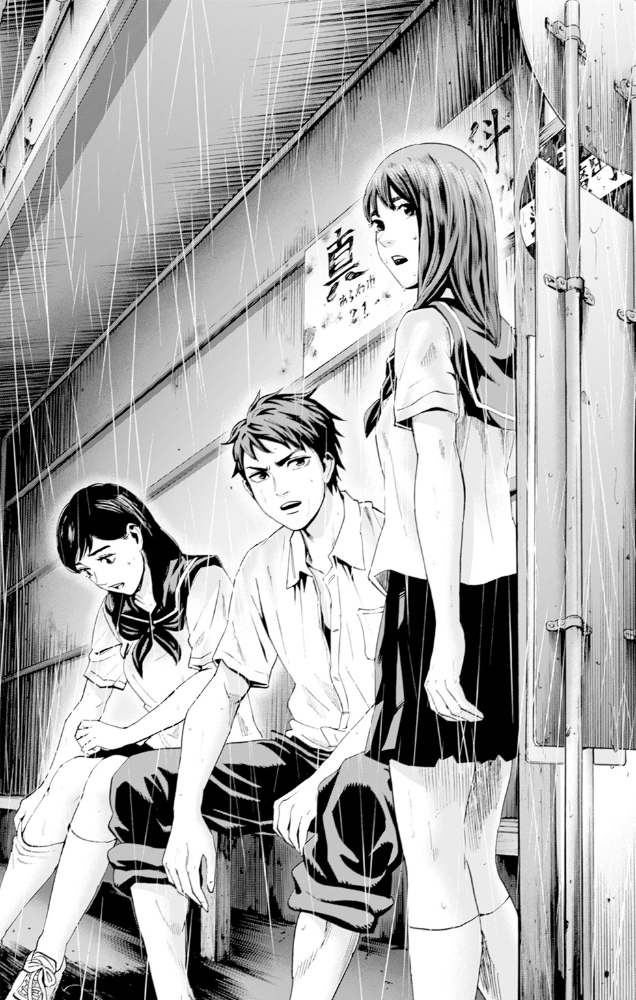

| カラダ探し 前夜 | |
| ウェルザード | |
この本は横書きでレイアウトされています。
また、ご覧になる機種により、表示の差が認められることがあります。
中学三年の演劇鑑賞会の日。
年に一度、同じ地区の中学校合同で開かれる、なんだか良くわからない行事。
俺、伊勢高広は、演劇の内容なんて全く興味がなくて、会場の椅子にもたれてひたすら眠っていた。
そして、演劇が終わると同時に解散。
家に帰る事になったんだけど、外は雨。
電車に乗って、最寄り駅に到着した頃には、少し小降りになっていたから行けるかと思ったのに。
家が同じ方向の幼馴染み、森崎明日香と鳴戸理恵が走るのが遅くて、途中のバス停で雨宿りをする事になった。
「わー、制服がペトペトする。天気予報で雨が降るなんて言ってなかったのに」
一番足が遅い明日香は、俺と理恵よりも雨に当たる時間が長かったせいか、夏用のセーラー服がしっとりと濡れていて、肌にまとわりついている。
「お前さ、走るのが遅いんだよ。もっとこう、ビューンと走れないのか？」
昔っから明日香は足が遅くて、徒競走やマラソン大会ではいつもビリ。
逆にどうしたらそんなに遅く走れるのか、教えてほしいくらいだ。

「そんな事言ったってさあ。私だって速く走りたいけど、走れないんだもん」
困った表情で、握り締めた両手をブンブンと上下に振る。
まあ、小学生の頃から、徒競走の練習には付き合ってやっていたからわかるんだけど......運動音痴なんだよな、明日香は。
「高広が速すぎるんだよ。私も足は遅い方だから、明日香の気持ちはわかるよ。速く走ろうと思っても、私達は走れないんだよ。ねー」
「ねー」
語尾だけ合わせやがってこいつら。
これが明日香と理恵じゃなかったら、一人で帰ってるところだぜ。
それにしても......こいつら、いつの間にこんなに成長したんだ？
何年か前までは二人ともペッタンコだったのに。
特に理恵は化け物かよ。
中学三年生でその胸の大きさはなんなんだよ！
くそっ、目のやり場に困るぜ。
「文句言うんだったら、高広だけ先に帰ればいいのに」
「お、俺だって濡れたくねぇんだよ。だからここで雨宿りしてるだけだ」
バス停の小屋の中にあるベンチに腰掛けて、なるべく二人を見ないまま、ぼんやりと視線を外に向けた。
バチバチと小屋の屋根を叩く、大粒の雨。
アスファルトに打ちつけられた雨が砕け散り、地面が白く霞んで見えるほどだ。
こんな中で外に出たら、間違いなく二秒でずぶ濡れだぜ。
「明日香、髪の毛もビショビショだよ？ 拭かなきゃ風邪ひいちゃうよ」
「あ、そうだね。今日は水泳があったから、このタオルで......」
そう言って、水着を入れている水泳用のバッグからタオルを取り出した明日香。
ベンチにもたれて、チラリと目を向けると......タオルを膝の上に置いて、後ろで髪をひとくくりにしているゴムを取っていたところだった。
手を首の後ろに伸ばして、ハラリと解ける髪。
雫が垂れるほど濡れている、明日香の横顔がいつも以上に可愛くて、俺は......。
「何考えてんだ俺は！ バカか！」
強引に、変な考えを搔き消すように両手で顔を叩き、フーッと息を吐いて何度も首を横に振った。
「え、な、何？ どうしたの？」
明日香と理恵が、俺の奇行に驚いている。
無理もないよな。
いきなり隣で顔をバシバシ叩いてたら、驚くなっていうのが無理な話だぜ。
「い、いや、蚊が止まっただけだ。気にすんな」
そんな顔で見るなよ......てか、早く頭を拭けよ。
「高広、なんかおかしいよ？ 本当に大丈夫？」
理恵が俺の動揺に気づいたか!?
いや、まだ疑惑のはずだ。
ここからでも、いつも通りの態度に戻せば、きっとこの動揺を悟られる事はねえ。
「当たり前だろ。この俺が大丈夫じゃないはずがないじゃねぇかよ」
よし、冷静に言えた。
こんなに普通に言ったんだ、絶対にバレてないはずだぜ。
と、思ったのに。
俺の気持ちなんて無視して、平気で懐に飛びこんで来るのが明日香だ。
「熱とかあるんじゃないの？ 気分が悪かったりしない？」
いつの間にか目の前で屈んで、俺の額にそっと手を伸ばした明日香。
ひんやりと冷たい手が添えられて、心配をしているような眼差しが俺に向けられている。
雨に濡れて、肌に張りついた肩までの長さの髪、そして潤んだ瞳。
ゴクリと唾を飲みこんで、爆発しそうなほど速く動いている心臓を抑えるために、俺はその手を払いのけた。
「ね、熱なんてねえよ。俺より、濡れてるお前の方が風邪ひきそうじゃねえか。ほ、ほら、早く拭けよ」
「あ、ああ......うん。熱はないみたいだし、高広なら大丈夫だよね」
ニッコリと明日香が笑って見せたけど、大丈夫なわけあるかよ！
くそっ、なんであんなに近寄って来たんだよ。
落ちつこうとしたのに、全然落ちつけないだろ！
それにあの笑顔は......反則だ。
ドキドキしながら雨が止むのを待っていると、さらに雨は強くなり、目の前は滝のようになっていた。
「これ、本当に止むの？ さっきより酷くなってるけど」
理恵が心配そうに、肩までの髪を撫でながら呟いた。
まあ、最悪の場合は親に電話して、迎えに来てもらうしかないよな。
この雨の中だったら、傘を持ってたとしても役には立たないだろうし。
なんて考えていると、傘をさして帰ろうとしているやつが通るんだよな。
「うわわっ！ ちょっと！ こっち濡れてる濡れてる！ もっとそっちに行ってよ！」
「お、押さないでよっ！ これ私の傘なんだからさ！」
ほら、やっぱり通った。
こんな雨の中、相合傘で帰ろうとしてるのか？
「やっぱ無理だわ！ 私はここで雨宿りして行くから、和葉は帰んなよ。止んだら帰るからさ」
「え？ あ、うん。じゃあ、また明日ね！」
傘の持ち主は帰って、友達は一人雨宿りか。
ポニーテールでセーラー服、やけに丈の短いスカート。
それなりに可愛いとは思うけど......。
「あー、マジ最悪！ だから演劇なんて見たくなかったのにさ！ いつもより30分も帰る時間が遅れたから、こんな雨に降られたんだっての！ おばあちゃんが傘持ってけって言ったの、素直に聞いてれば良かったなぁ。てか、左半分ビッショビショ。これどうしようかな。雨が止むか、それより先に風邪ひくかの勝負ってやつ？」
とにかくうるせぇ。
普通、他校の生徒がいたら黙るだろ。
友達といるならまだしも、一人でこんなにベラベラ喋るとか。なんなんだこいつは。
しかも、間を空けているとはいえ、俺と明日香の間に座りやがって。
「ふう......」
ベンチに腰を下ろして、俺達を見回して。
やっと独り言を話すのを止めやがった。
俺達が何も話さないから、一人だけ喋っている事がバカバカしいって気づいたのか。
名前も知らないやつの独り言を聞くほど、つまらないものはないからな。
でもまあ......こいつ、綺麗な顔してるし、喋らなかったらきっとモテそうだ。
ここらの中学校は、どこも制服が同じだから、見分けるにはネームプレートを見るしかないんだけど......。
こいつ、ネームプレートを付けてないのかよ！
まあ、よその学校の誰かって事だな。
「............」
今度は黙りやがった。
俺と明日香の間に座って、携帯電話を取り出して操作し始めたぞ！
雨宿りはしたいけど、俺達とは初対面で話も出来ないから、なんとか携帯電話を弄って場を乗り切ろうって考えなんだろう。
その気持ちはわかるけど、だったらわざわざ俺達の間に座らなくて良いんじゃないの？
仕方ねえ、俺と明日香達が同じ学校だって知れば、こいつも隅に移動するかもしれないから、話をするか。
「あ、雨がまた強くなったな」
なんで声を出すだけで緊張してるんだ俺は。
でも、これで明日香か理恵が返事をすれば気づくだろ。
「あー、うん、そだね。あんた達も演劇を観に行ってたんでしょ？ なんだか良くわかんなかったよねー。わからなさすぎて快眠だったわ」
なんでお前が返事するんだよ！
初対面なのに随分フレンドリーに返事するじゃねえか！
「あ、なんだ、高広の知り合いなの？ 良かった、何か話さなきゃいけないかなってずっと考えてたんだ」
「なわけねーだろ！ 誰だお前は！」
明日香は本気で、俺とこの女が知り合いだと思ってるのかよ。
知ってたら、こんなに間を空けずに、もっと早いタイミングで声を掛けてるっての！
「な、何よ、その言い方！ あんたが話し掛けて来たから、返事しただけでしょうが！ あー、気分悪い！ なんでジロジロ私を見てた変態に文句言われなきゃならないわけ!?」
ポニーテールの女が立ち上がり、俺に怒り出した。
見てない......わけじゃないけど、別に変な意味で見てたつもりはねぇよ！
「お前を見てたわけじゃねぇよ！ うぬぼれるな！」
「へぇ、だったら何を見てたっての？ ん？ ほら、言ってみなよ」
蔑むような目を向けて、ジリジリと俺に迫って来る。
こいつ......女じゃなかったら、間違いなくぶっ飛ばしてるところだぜ。
だけど、何を見てたかって言われたら、どう言っていいか困るんだよな。
理恵の胸がでかいなとか、明日香の横顔が可愛いとか、こいつ綺麗だなとか、思ってる事を全部言ったら、俺のイメージが崩れるだろうが！
「お、俺の連れが風邪ひかねえか、心配で見てただけだ」
「ふぅん？ 何？ あんたの彼女？」
くそっ！ かわしたと思ったのに、やけにグイグイ攻めて来やがる！
今までのどんな喧嘩の相手よりも手強いかもしれねぇ！
「た、高広はそんなんじゃないよ。私達は幼馴染みで、家の方向が一緒だから......」
俺の代わりに明日香が答えてくれたけど、ハッキリとそう言われるとなんだか悲しいぜ。
「だったら離れてないで、近くに座ったら良いでしょ。間に入った私が、気まずいったらありゃしない」
そう言って、シッシッと手をひらひらさせて、俺を明日香達の方に移動させる女。
今まで俺が座っていた場所に座ると、ムスッとした表情で再び携帯電話を弄り始めた。
「ちょっと、高広。ダメだよあんな言い方しちゃ。女の子なんだから、もっと優しく言ってあげなきゃ」
俺の腕をつつき、明日香が耳元で囁く。
普通の女なら、そりゃあ言い方も考えたけどよ、初対面でこんなに遠慮のないやつは初めてだったから、そんな事も考える余裕がなかったんだよ。
「で、でもよ、こいつ本当に女なのか？ お前らと比べると、まるで別の生き物みたいに思えるんだけどよ」
左を向けばポニーテールの女、右を向けば明日香と理恵。
どっちを向いても目のやり場に困るから、滝のような雨を見ている事しか出来ない。
でも、俺の声は明日香と比べて少し大きかったようで。
「聞こえてるっての！ 悪かったわね、その子達とは別の生き物で！」
さらにこの女を怒らせる事になってしまった。
「もう、何を言っても怒られるから、何も言わない方が良いよ？ よその学校の子なら、もう会わないかもだし、トラブルを起こす事はないよ」
「理恵の言う通りだよ。雨宿りでここにいるだけなんだから。ね？」
別に俺も、トラブルを起こしたいわけじゃないんだよ。
ただ、ちょっとした行き違いで、話がおかしな方向に進んだだけなんだよな。
「わかったよ、明日香が言うなら俺は何も言わねえよ」
普段から俺は、他校のヤンキー崩れとトラブルを起こしまくってるからな。
今更だとは思うけど、変な噂が広まるのは避けた方が良いか。
だけど、いざ黙ってみると、空気を重く感じるんだよな。
明日香と理恵がいるのに、変にこの女に気を遣って話も出来ない。
こんな空気が俺は一番嫌なんだ。
なんで先に雨宿りをしていた俺達が、後から来たやつに遠慮しなきゃならないんだよ。
やめておけと言われたのに、どうしてもこの空気をぶち壊したくて、俺はポニーテールの女の方を向いた。
「おい、お前名前くらい教えろよ」
「はぁ!? あんたバカなの!? いや、バカでしょ！ この流れでなんでそんな話になるわけ!? あんたなんかに教えるわけないでしょ！」
もう、驚いたを通り越して、戸惑ってたな。
それにしても、人の事をバカバカ言いやがって......俺がどうにかして、このどんよりした雰囲気を変えようとしてるのがわからねぇのか！
「た、高広！ まだ二分も経ってないのに、なんで話し掛けてるのよ！ また機嫌を悪くさせちゃったじゃない！」
「い、いや、だってよ......」
明日香が呆れて俺を見ている。
これは失敗したな......俺の事、バカなやつとか思ってないよな？
誰に言われても構わないけど、明日香に言われるのはダメージがでかいんだよ。
そんな俺の心の中を表すかのように、雨はより一層激しさを増してきた。
もう、この小屋もぶっ壊れるんじゃないかってくらいに。
そんな中、さらにもう一人、この小屋に駆けこんでくる人影があった。
「ひええっ、電車を一本遅らせるんじゃなかったな」
電車を遅らせる以前に、こんな雨の中で駅から出るなよ。
メガネをかけた、短髪の背が低いやつが、カッターシャツをびしょ濡れにして小屋にたどり着いた。
この背の低さからしたら、一つ年下の中二くらいだろう。
「お前、なんでこの雨の中走ってんだよ。駅で雨宿りしてれば良かったんじゃねえの？」
どう見ても大人しそうだったから、この女みたいな事にはならないだろうと思って声を掛けてみた。
単純に、駅にいなかった理由も気になるし、何より退屈だったから。
「もう、またそうやって初対面の人に話し掛ける！」
そんなに怒らなくても良いじゃねぇか。
明日香に迷惑は掛けないって。
「え？ ああ、駅に行くまでに結構濡れてしまったからね。雨が止むまで待っていたら、身体が冷えて風邪をひくかもしれないだろ？ だったら、ちょっとでも早く家に帰ってシャワーを浴びようと思ってね」
へぇ、そんな事を考えてるやつもいるんだな。
確かにこの濡れ方だったら、家まで走った方が良さそうに思えるぜ。
「でもよ、だったらなんでここに入ったんだよ。そんなに濡れてたら、雨宿りする必要がねえだろ？」
俺や明日香達くらいの濡れ方ならともかく、もうこいつは全身ずぶ濡れなんだからな。
「そうしたいのはやまやまなんだけど、靴紐が解けてさ。それに、家まで走り続ける体力もないし、こうやって休憩しながら帰ってるってわけだよ」
確かに、見るからに体力なさそうなメガネだな。
雨に打たれて、レンズが水滴まみれだし、こいつ前が見えてんのか？
「ねぇ、高広」
かがんで靴紐を結び直しているメガネを見ている俺に、明日香が声を掛ける。
「なんだよ、変な事は言ってねえはずだぞ？」
喧嘩にもなってないし、こいつが怒ってるわけでもないから、明日香が怒るような事なんて何もないはずだけど。
「そうじゃなくて。あの女の子さ、なんだか様子がおかしいよ？」
「ああ？ 最初っから様子のおかしなやつだっただろ」
指差している明日香の顔をチラッと見た後、ポニーテールの女に目を向けて見ると......。
こちらに背を向け、身を小さくして、ガタガタと身体を震わせていた。
呼吸は荒く、どう見ても体調が悪そうだ。
「おい、お前大丈夫かよ。身体が冷えたんじゃねえの？」
また何か言われるのを覚悟で、ポニーテールの女の肩を引っ張って正面を向かせると、文句を言う元気もなくなったのか、トロンとした目で俺を見た。
額に手を当ててみても、雨で濡れているせいか、まだ熱が出ていないのか、熱さは感じない。
むしろ......冷たい。
「さ、触んなっての......」
「言ってる場合かよ！ 明日香、理恵！ タオルでこいつを拭いてやってくれ！」
なんの因果で、俺がこんな可愛げのないやつを助けなきゃならないんだ。
散々文句を言われて、見捨てても良いはずなのによ。
「大丈夫？ こんなに濡れてるのに、拭かないから」
俺と入れ替わるように、明日香と理恵が女をタオルで拭き始める。
でも、こんなところで待ってるわけにはいかないよな。
「な、なんだ？ その女の子、病気なのか？」
「雨に打たれて冷えたんだよ！ 見りゃわかるだろうが！」
メガネに当たっても仕方がないってわかってるけど、どうすれば良いのかがわからない。
救急車を呼ぶか？
でも、こんな事で呼んでも良いのか？
素直に呼べば良いものを、俺は何を迷ってるんだよ！
もしもこれが明日香だったらどうしている、今にも死にそうになってたらどうするんだ！
「おいメガネ！ お前、携帯電話持ってるか!? 救急車を呼べ！」
「えっ!? いや、俺は持ってないんだけど......」
くそっ、公衆電話は駅まで行かなきゃねえし、濡れるのを覚悟で走るしかないのか。
いや、待てよ？ このポニーテールの女、携帯電話を持っていたはずだよな？
ポケットの中に入ってたら、俺が手を突っこむわけにもいかねえ。
「明日香！ 携帯電話を探せ！ こいつが持ってたやつだ！ 救急車を呼ぶのにいるんだよ！」
「あ、うん。わかった！」
身体をタオルで拭きながら、明日香が女の制服のポケットを確認する。
だけど見つからないようで、俺を見て首を横に振った。
「じゃあ、カバンの中か？ わりぃな、勝手に開けさせてもらうぞ」
そう言って、足元に置かれていたカバンのファスナーを開き、中を確認すると......あった。
それを取り出して、電源を入れようとするけど、バッテリーが切れているのか、全然立ち上がらなかったのだ。
「なんだよこれ！ お前、もしかしてバッテリー切れの携帯電話を弄ってたのかよ！」
気まずいのを我慢していたのは、俺達だけじゃなくて、この女も雨宿りをするために、無関心なふりをしていたってのか。
素直に話をしてりゃ、異変にもすぐに気づけたかもしれないのに。
いや、その前に身体を拭く事だって出来たはずなんだ。
俺がこいつに変な事を言ったばかりに、こんな事になっちまったんじゃないのか？
「仕方ねえ......俺が駅まで走る！ こうなったのは俺のせいだ！」
雨に濡れて湿っているカッターシャツを脱ぎ、Tシャツ姿になった俺は、この小屋を飛び出す覚悟を決めた。
カッターシャツがそんなに濡れていないから、Tシャツが濡れたとしても家に帰るには問題ないからな。
「ちょ、ちょっと待った！ それなら俺が行く。もうずぶ濡れなんだ。今更濡れたって同じ事だからな」
このメガネ......今入って来たばかりなのに、何言ってるんだよ。
「お前には関係ないだろ。そんな暇があるなら家に帰れよ。次はお前がこうなるかもしれねえんだぞ？」
「目の前で苦しんでる人がいるのに、関係ないからって俺だけ帰れるわけないだろ！ どうせ濡れてるんだ。だったら、女の子の一人くらい助けるために濡れてやる！」
こいつ......思ったより根性があるのかもな。
「よし、じゃあ電話は任せたぜ。年下なのにいい格好しやがって」
そう言って、ポンッと肩を叩いてやると、メガネは驚いた様子で俺を見上げて首を横に振った。
「と、年下？ 俺は中三、今年15歳だぞ！」
な、なんだと！
身長が低いし童顔だから、年下だと思いこんでたぜ。
だけど、ここに入って来てからずっと俺にタメ口だったし、俺達と同じ中三だって言うならそれも納得出来るか。
「まあ、とにかく行ってこい！ 任せたぜ！」
「ああ！」
そして、メガネが小屋から飛び出した。
「あ、ちょっと待って！」
瞬間、背後から聞こえた声に、俺は慌ててメガネを呼び戻した。
「お、おい！ 待て！ 戻って来い！」
一体なんだってんだよ。
せっかくメガネが男気を出して、駅にある公衆電話に行こうとしたのに。
ほれ見ろ、この雨の中に飛び出したから、戻って来たメガネがまたずぶ濡れになったじゃねえか。
「で、なんだよ。誰か待てって言ったか？」
振り返って明日香と理恵を見てみるけど、二人とも首を横に振っている。
ポニーテールの女が言ったわけじゃなさそうだし。
......だったら、誰だよ。
まさか幽霊でもいるのかと、小屋の中を見回してみると......。
「や、やあ」
二列になっているベンチの奥側、隅っこに、坊ちゃん刈りのひょろい男が座っていたのだ。
「う、うおっ！ 誰だテメェはよ！ いつからそこにいやがった！」
全然気づかなかったぜ！
壁と同化してるんじゃないかと思うくらい静かで、動きもなかったし、気配をまるで感じなかった。
「え、え？ キミ達が入って来るより先に、俺はここに座ってたんだけど......はは、そうだよな。影が薄いってよく言われるから、気づかれないよな」
うなだれて、寂しそうに呟いた坊ちゃん刈り。
悪いけど、本当に気づかなかった。
声を出されなかったら、最後までスルーしてたかもしれない。
「と、ところで、お前か？ 待てって言ったのは。見ての通り急いでんだよ。何か言いたい事があるなら言えよ」
こいつは見るからに気弱そうだな。
メガネと違って、根性もなさそうだし、何より根暗そうだというのが第一印象。
「あ、ああ。救急車を呼びに行くのも良いけど、ここの路地を100ｍほど行ったところに診療所がある。そっちの方が早いんじゃないかと思って......」
救急車を呼んで、何分後に来るかもわからねえ。
そこに連れて行った方が確かに早いとは思うけどよ、今はこの土砂降りだ。
病人を診てもらうのに、また雨に打たせるのかよ。
「救急車の方が確実だろ！ どっちにしろ、俺は電話をかけに行く！」
俺が迷っている間に、メガネが小屋を飛び出して行った。
ポニーテールの女の苦しそうな顔を見て、いてもたってもいられなくなったんだろうな。
「どうしよう、水気を拭き取ったら、どんどん身体が熱くなってきたよ。この子、演劇を観てる時から体調が悪かったんじゃない？ 会場、結構冷えてたしさ」
理恵が不安そうな声を出すけど、今はどうする事も出来ないだろ。
あのメガネが救急車を呼びに行ったんだ、後は待つしかねえよ。
雨が止めば、診療所まで担いででも運んでやれるんだけど、全然止む気配がない。
それどころか、側溝から今にも水が溢れそうなくらい増水している。
このまま降り続けば、ここら辺は川になっちまうんじゃねぇの？
「俺達じゃ、病気を治してやる事は出来ねえ。やれる事をやるしかないだろ」
本当に、自分が何も出来ないってのは悔しくて。
なんでも一人で出来るって粋がってみたところで、何が出来ているわけでもねえんだ。
別に知り合いでもねえ、言ってしまえばどうでもいい、今出会ったばかりのやつ。
でも、そんなやつ一人助けられないのに、好きなやつを助ける事なんて出来るはずがないよな。
ポニーテールの女を励ましている明日香を見て、俺は自分が情けなくなった。
せめて、好きな人くらいは守れるようにならないと、俺が生きてる意味がないんじゃないかと、この時初めて本気で思った。
しばらくして、メガネが息を切らせて戻って来た。
これで後は救急車を待つだけだなと安心していたけど、メガネが発した言葉は、俺達の期待を大きく裏切るもので。
「ダ、ダメだ。近くの救急車は全部出払ってるらしい。この雨で事故が起こってて、それで」
「ああ？ なんだよそれ！ 救急車は来ないのか!?」
「お、俺に言われても！ 詳しい事はわからないけど、時間がかかるって言われたんだ！」
公衆電話までの往復で、プールにでも飛びこんだかと思うくらい濡れているメガネに、文句を言うのは筋違いだ。
だったら、なんとかして診療所まで運ぶしかねえよな。
「どうするの？ 濡れちゃうけど、診療所に運ぶの？」
そんな不安そうな目で見るなよ、明日香。
濡れても死にはしないだろうけど、そんな事を言ったらお前は怒るよな。
じゃあ、これしかねえ。
「100ｍなんだろ？ 濡らさずに運べば良いだけだな。おい、坊ちゃん刈り。お前服を脱げよ」
「え？ いや、なんで俺が......」
男にこんな気持ち悪い事を言う日が来るなんて、夢にも思わなかったぜ。
「あの女を濡らさないように、被せるんだよ。安心しろよ、俺も脱ぐからよ」
良く考えたら、俺はかなりおかしな事を言ってるよな。
頼むから、変な想像だけはしないでくれよ。
「ま、待って高広。この雨だよ？ カッターシャツなんかじゃすぐに雨が染みこんで濡れちゃうよ！」
「だからって、何もしないわけにはいかないだろ！ 少しでも濡れない可能性があるなら、俺はそっちに賭ける！」
明日香の目の前でカッターシャツ、Tシャツを脱ぎ、坊ちゃん刈りにも早くよこせと手を出してみせる。
確かに、この雨の中を、薄っぺらい布を被せただけで走るのは心もとない。
あっという間に雨が染みこんで、ポニーテールの女は再びずぶ濡れになってしまうだろう。
だったら、もっと多くの布で覆えば良いんだろ！
「明日香！ 理恵！ お前らバスタオルを出せ！ こいつに被せれば、少しは雨を防げるだろ！」
「あ、ああ......うん」
こいつらのだけじゃなく、俺のバスタオルも出した方が良いな。
それに、濡れた水着が入ってるレジ袋も使えそうな気がするぜ。
「坊ちゃん刈りとメガネ！ お前らも雨避けになりそうな物があったらよこせ！ なんだっていい！」
こうなりゃなんだって利用してやる。
出来るだけこの女を濡らさずに運ぶためにな。
「調理実習で使ったエプロンがあるけど、こんなので良いかな？」
上半身裸の坊ちゃん刈りが、カバンの中からしわくちゃのエプロンを取り出して、俺に差し出した。
「お、俺は......すまない、これといった物はないよ」
メガネは全身ずぶ濡れで、服も使えねえ。
だけど、こいつはやる事やって濡れてるんだから文句は言えないな。
結果はどうあれ、言ったことをやり遂げるやつは嫌いじゃないからな。
「俺がこいつを背負って行く。だからよ、背中が濡れないようにこれを被せてやってくれよ」
集まったのは、湿ったバスタオル三本、使用済みのタオル三本、水着を入れていたレジ袋に、エプロン。
なんとも頼りないけど、やるしかねえ。
「完全には防げなさそう。どうしても、腕と脚は出ちゃうよね。どうする？」
「背中から染みこまなかったら良いだろ。だから、背中を重点的にガードしてくれ。おい、もう少しだけ我慢しろよ。医者に連れて行ってやるから」
ポニーテールの女の前で屈み、腕を俺の首に回して、脚を抱えて立ち上がった。
「レジ袋は頭に被せれば良いよね。バスタオルは肩と背中に......」
明日香と理恵が必死に動いているのがわかる。
こんなのでどれだけ雨を防げるか......もしかしたら防げないかもしれないけど、出来るだけこいつを濡らさずに送り届けねぇとな。
しばらくして、ポニーテールの女を運ぶための準備が整い、いつでも飛び出せる状態に。
「よっしゃ、行ってくるぜ。この路地を100ｍほどだな？」
「う、うん。看板が小さいから、見落とさないで。民家と見分けがつかないかもしれないから」
注意して見ないとダメだって事だな。
この雨の中でも、顔を上げないといけないのか。
「高広、その子を任せたよ」
「おう、任されたぜ」
不安そうな表情を浮かべる明日香に、いつものように笑って見せる。
そして、俺は小屋を飛び出した。
バチバチと、素肌に雨が打ちつけられる。
さっきみたいな大粒の雨じゃないけど、激しさは変わっていない。
一人だったらすぐに着いているのに、軽いとは言え、女一人を背負って走るとやっぱり遅れるぜ。
「......ご、ごめん」
走っている最中、ポニーテールの女が申し訳なさそうに俺の耳元でそう呟いた。
「ああ!? こういう時はよ、謝るんじゃなくて礼を言えよな！」
こっちも必死だ、気の利いたセリフなんて言えやしねえ。
また憎まれ口の一つでも言われるかなと思ったけど、返事は予想外だった。
「うん......ありがと」
「言えるじゃねえかよ」
そう言って顔を上げると、坊ちゃん刈りが言っていた、診療所の小さな看板が目に入った。
あと少しだ、頑張れよと心の中で呟いて。
やっとの思いでたどり着いた診療所。
だけど、午後からの診察はやってないみたいで、ドアが開かなかった。
「噓だろおい！ 頼む！ 開けてくれ！ 病人がいるんだよ！」
ガラスの向こうにはカーテンが引いてあって、中が真っ暗なのがわかる。
ここまでして、休診とか冗談じゃねえ！
病人がいるんだから、診察くらいしろ！
なんて、無茶な事を考えていた。
「開いてないんだ......もういいよ、バス停に戻ろう」
「バカ野郎！ 戻ったって治るわけじゃねえだろ！」
苦しいのは、その小さな声でわかる。
なんとしてでも診てほしいという思いで、必死にドアを叩き続けた。
すると......。
診療所の中に明かりが灯り、カーテンが開けられて、よぼよぼのじいちゃんが姿を見せたのだ。
ドアのロックが解除され、ゆっくりと開かれる。
「診察時間は終わってるんだが......なんじゃ、その格好は」
俺が上半身裸の方か？
それとも背負っているこの女が、レジ袋を頭に被っている事か？
そんなのどっちだっていいぜ。
「バス停で雨宿りしてたら苦しそうになってよ、救急車は時間が掛かるし、近くに診療所があるって聞いて、連れて来たんだよ！ 頼む、こいつを診てやってくれよ！」
俺の必死の訴えが通じたのか、それとも急患だからだったのかはわからない。
じいちゃんはずぶ濡れの俺達を中に入れてくれて、すぐに女を診てくれた。
「まあ、風邪じゃな。身体が冷えて、熱が出たんじゃろう。それにしても彼女を助けるためにここまでするとは、なかなかやるのう」
このじいちゃん、何を勘違いしてやがるんだ。
「彼女じゃねえよ。学校も名前も知らねえ。ただ、バス停で一緒になっただけの女だ」
待合室で、貸してもらったタオルで頭と身体を拭きながら、変な事を言うじいちゃんに返事をした。
ギャーギャーうるさいし、俺をバカバカ言うし、ムカつく女だったからな。
「名前も知らない子を運んで来たってのか。お前さんみたいな若者もいるんじゃのう」
「俺だけじゃねえよ。あいつを助けるために、偶然居合わせたやつ全員が頑張ったんだ。ほら、俺の服だけじゃないだろ？」
ビショビショになった服を入れさせてもらったバケツから、それを取り出して見せる。
「そうかそうか。近頃の若いもんはと思っておったが、なかなかどうして。ちょっと待っておれよ。代わりの服を出してやるからな」
「別に良いよ。返しに来るの面倒だし」
俺がそう言ってもじいちゃんは聞かず、診療所の奥に入って行くと、少ししてから戻って来た。
「ほれ、新品のシャツじゃ。お前さんには少し大きいかもしれんが、友達にも持って行ってやるといい。返しに来なくて良いぞ。安物じゃからな」
じいちゃんは俺にシャツを手渡し、ニッカリと笑って見せた。
そういう事なら、ありがたくもらっておくかな。
「じゃあ先生、あの女の事は任せたぜ。でも、本当にこの傘もらってってもいいのかよ」
せっかく濡れてないシャツを着たのに、雨に打たれてはと、じいちゃんが俺だけじゃなく、バス停にいるやつらの分も傘をくれたのだ。
「かまわんよ。息子が外出先で雨に降られる度に買って来るから、邪魔で仕方ないんじゃ。持って行ってくれるとこっちも助かる」
見たところ新品同様だけど、使った形跡があるから、俺に気を遣って言ってるわけじゃなさそうだ。
とはいえ四本か。
俺も含めて、バス停にいるのは全部で五人。
ま、あのメガネはずぶ濡れだから別にいいだろ。
「ありがとな。じゃ、後はあの女から話を聞いてくれよ。名前とか、住所とかさ」
あいつら心配しているだろうなと、早くバス停に戻ろうと、診療所を出ようとした時だった。
「お前さん、名前は？ あの子が目を覚ましたら、知りたがると思うが」
ああ、そういう事か。
でも、俺だけが動いたわけじゃねえし、名前を知らないやつもいるしな。
「別にいいよ。それより俺は、待ってるやつのところに早く帰りたいんだ。ありがとな、先生」
格好をつけたかったわけじゃない。
賞賛してほしかったわけじゃない。
もしも褒められるとしたら、あの場にいた全員が褒められなきゃ、意味がないと思ったから。
じいちゃんにもらった傘をさし、皆が待つバス停へと戻った。
降り続く雨の中、濡れたバスタオルやカッターシャツをレジ袋に入れて、俺はバス停に戻って来た。
「おかえり、高広。どうだった？ 診てもらえた？」
「ああ、身体が冷えたから、風邪をひいたんだろうって。ほら、お前らの分も傘をもらってやったぜ」
雨は止んではいないとは言え、もう、さっきほどの激しさはない。
これなら、傘をさして帰れるな。
「あ、ありがたい......俺もこれ以上は限界だ。先に帰らせてもらうよ」
ポニーテールの女の次は、メガネが体調不良か？
まあ、あんなにずぶ濡れだったから、仕方ねえな。
「ほらよ、傘をさしてけ。気休めにはなるだろ」
ここまで濡れてると、傘をさす意味もないような気がするけど。
そうして、メガネはバス停から去って行った。
名前も知らないやつが、偶然居合わせたバス停で協力して、一人の女を助けた。
誰も、それを誇らしく思わず、ただ呼吸をするのと同じくらいに自然で、当たり前の事をしたんだと思っているんだろうな。
「ほら、坊ちゃん刈り。このシャツと傘をやるよ。俺達は帰るからな。お前も早く帰れよ」
「あ、ああ。ありがとう。出来ればカッターシャツとTシャツも返してくれるとありがたいかな」
......そうだ、シャツをもらって、カッターシャツを返すのをすっかり忘れてたぜ。
坊ちゃん刈りにカッターシャツとTシャツを返した後、俺達もバス停を離れた。
俺と明日香は家が近いけど、理恵は少し離れているから、少し歩いたところで別れる事に。
「じゃあ、また明日ね。高広は濡れたんだから、帰ったらシャワー浴びなよ？」
「わかったわかった。うるせぇな」
手を振る理恵と別れて、俺と明日香は相合傘......か。
なんか、照れるじゃねえか。
「でも、本当に診てもらえて良かったね。あんな必死な高広、初めて見たよ。もしかして、あの子に一目惚れしたとか？」
医者のじいちゃんといい、明日香といい、なんで俺とあの女をくっつけたがるんだよ。
「バカかお前は。辛そうだったから助けただけだ。あんなやつに一目惚れしてたまるかよ」
「ふーん。まあいいけど。じゃあさ、本当にあの子を見てたわけじゃないんだね？」
たまに明日香はどうでもいい事を突っこんで来るよな。
他のやつに言われても何も思わないのに、明日香に言われるとなんかイライラする。
「違うって言ってんだろ。お前と理恵が風邪ひかないか心配で......って、こんな事を言わせるなよ」
まあ、あの女を見てなかったって言えば噓になるけどな。
だけど仕方ないだろ？
俺と明日香の間に座ったんだからよ。
「へへ、じゃあ、私と理恵を見てたんだ？ やっぱり優しいね、高広は。心配してくれるんだもん」
無邪気にニコニコ笑って、俺を見上げる。
その笑顔が物凄く可愛くて......だけど、どうにも出来ない俺は、顔を背ける事しか出来なかった。
「お、お前......バ、バカか。心配してなかったら、お前らに合わせて雨宿りなんてするかよ」
小さい頃から明日香が好きで、好きだって言ったらこの関係が壊れてしまうんじゃないかと、臆病になっている俺が、今言える精一杯の言葉。
それがどう明日香に伝わったのかはわからない。
でもこいつは......。
「そうだよね。せめて私がもう少し速く走れたら、高広も心配しなくて済むのにね」
......驚くほど鈍感なんだよな。
もしかすると、ストレートに「好きだ」って言っても、別の意味に捉えるかもしれねえ。
そういう意味でも、今はまだ言うべきじゃないと理解していた。
でも、どうして俺があの女を助けたかって考えたら、答えなんて簡単だった。
確かに、俺のせいだった部分もあるけどさ。
きっと、明日香に嫌われたくないから。
この可愛い笑顔を見たいから、俺は精一杯格好をつけているんだろう。
それは、今までも、これからも変わらない。
「あ、小降りになって来たね。これならもう大丈夫かな？」
「バカ言ってんなよ、濡れるだろ。ほら、入れよ」
「はーい」
明日香のためなら、俺はなんだってやってやるんだ。
改めてそう思えた、中学三年生の、夏の雨の日だった。
高校二年の夏。
うちの学校には、旧校舎の隣にプールがあって、夏になるとそこで水泳の授業がある。
俺は普通科だから、男子と女子でプールを半分ずつ使っているけど、男子だけのクラスのやつらからすれば、それが羨ましくてたまらないらしい。
何が羨ましいんだか。
多分、女子の水着姿を間近で見られるとでも思ってるんだろうけど、男子はただひたすら泳がされるだけで、女子を見ている暇なんてありゃしないのに。
だから俺は、水泳をサボって教室で寝ていた。
授業が始まるチャイムが鳴り、誰もいなくなった教室。
静かに眠れると思っていたのに、俺を呼ぶ声が聞こえる。
「高広。おい！ 高広！ お前、また水泳をサボるのか!?」
「......んだよ、うっせーな。翔太じゃねえか。どうしたんだよ」
こいつは、俺が授業をサボってると、いつも文句を言いに来るんだ。
真面目なんだか、世話焼きなんだかよくわからねえけど、俺にとっては邪魔なやつだ。
「どうしたじゃないだろ！ 皆、水泳に行ってるんだ！ どうしてお前は授業をサボってこんなところで寝ているんだ!?」
眉間にしわを寄せて、怒ってるのがわかる。
だけどよ、なんで俺が怒られてるのかが全然わからねえ。
「だったらお前は、こんな所で何してんだよ。水泳やってんなら、お前も授業に出ろよ」
机に伏せたまま顔を上げ、プールの方を指差して見せると、翔太は痛い所を突かれたとでも思ったのか、口をポカンと開けて黙ってしまった。
何しに来たんだこいつは。
俺に文句を言うためだけに来たわけじゃないんだろ？
となると、こいつもサボりだよな？
「翔太、お前もサボりなんだろ？ だったらかてぇ事言わずにのんびりしてろよ」
「お、俺は断じてサボりじゃない！ そう、今はまだ泳げないから、この夏に特訓して泳げるようになって、『カナヅチ翔太』という汚名を返上してやるんだ！ 今はそのイメージトレーニングをする時期なのさ」
フフッと笑ってメガネを指で押し上げる翔太。
こいつ、頭が良いのか悪いのか、マジでわからねえぜ。
こういう頭でっかちは、大口を叩くだけで絶対にしないんだよな。
「無駄な努力ご苦労さん。イメージトレーニングでもなんでも、勝手にやってろ」
そもそも夏休みが明けたら、水泳はないからな。
汚名を返上出来るのは、来年の夏になるな、うん。
「くっ！ 運動が出来るからってバカにして！」
きっと、人にバカにされる事に慣れてないんだろうな。
だから、ちょっとした事でムキになるし、すぐに人を見下すんだよ。
ま、俺にはどうでもいい事だけどよ。
そんな事をぼんやりと考えながら、眠ろうかと思った時だった。
微かにだけど、外からカメラのシャッター音のようなものが聞こえたような気がする。
「ん？ なんだ今の音は」
「音？ プールの方からか？」
「いや、そんな音じゃねえ......携帯電話のカメラのシャッター音みたいだったぜ」
普通に考えれば、今は授業中で、そんな音が聞こえるはずがないんだけどな。
なんとなくそれが気になって立ち上がり、窓に近づく。
「んー、下には誰もいねえよな。だったらどこから聞こえた？」
「な、なんだよ。変な事を言うなよ。気になってしまうじゃないか」
翔太のその言葉の後、今度はさっきよりも小さく、またシャッター音。
下に人はいねえし、他の教室からじゃねえ。
と、なると......屋上か！
「翔太、気になるならついて来いよ。屋上でシャッター音が聞こえた。女子がプールを使ってっから、誰かが盗撮でもしてるんじゃねえのか？」
「な、なんだって？ 盗撮!? そんな事をするやつがいるって言うのか？」
「わかんねえよ、だから見に行くんだろうが」
別に誰が誰を盗撮していようが関係ないけどよ、万が一にでも、明日香を撮っているやつがいたらぶっ殺す！
授業中、誰も歩いていない静かな廊下を歩き、屋上へと続く階段を上る。
大きな声を出せば、授業をサボっている事がバレちまうから注意が必要だ。
「もしも誰かが盗撮してたらどうするつもりだ？ 先生に報告するのが筋だと思うけど」
「これだから優等生はよ。良いか、チクりでもしてみろ。なんで俺達がそれを知ってるんだって事になるだろうが。授業をサボってんのがバレバレだぜ？」
「そ、そうか、そうだな。なんだか悔しいな、それは」
深く考えなくても良いんだよ。
盗撮なんて、俺の推測でしかないからな。
いた時はいた時だ。
俺に、そいつらを捕まえてやろうなんて正義感はねえし、本当に盗撮してるならしてるで、シャッター音が聞こえてるって言ってやるだけだからな。
そんな事を考えながら、屋上の入り口までやって来て、ドアを開けた。
「こっち側にはいねえな。やっぱ、あっち側か」
この出入り口の裏手。
人がいるとすれば、プールがあるグラウンド側か。
「本当に誰かいるのかな......」
「さあな、いたとしても、モテそうにない変態が一人いるくらいじゃねえの？」
世の中には、そんなバカがいるからな。
そう言って、屋上のグラウンド側に目を向けると......。
そこには、携帯電話や双眼鏡を構えた生徒が軽く10人はいた。
「いっぱいいる――っ！ 何が変態が一人だ！ 1ダースいるぞ！」
「お、俺が知るかよ！」
ビ、ビビったぜ......まさかこんなにいやがるとはよ。
うちの高校は、どれだけ闇を抱えているんだ。
「むっ！ キミ達、静かにしたまえ。今は授業中、そして我々は隠密行動中だ」
屋上の端に寝そべっている変態の中の一人が、慌てた様子で起き上がり、俺達に駆け寄って来た。
何が隠密行動中だよ......女子のプールを覗いたり盗撮しているだけじゃねえか。
「い、いやあの......ここで何をしているんですか？」
ナイスだ翔太。
どう見ても盗撮だけど、相手からそれを聞き出すのは良い手だぜ。
まあ、こういう連中は上手く誤魔化すだろうけどな。
「え？ 何って......盗撮だけど」
「言うのかよ！ 少しは誤魔化そうとか思わねえのか！」
思わず突っこんじまったじゃねえかよ！
それにしてもなんだ。
素直に白状したのに、こんなに清々しくない集団を初めて見たぜ。
「キミ達は二年か。だったら知らないのも無理はない。我々は三年の有志を中心に結成された『あなたに刺激を！ 逢魔高校を面白くし隊！』略して『ASOKO』だ。以後よろしく」
おいおい、随分情けねぇ略称だな。
微笑みながらメガネを指で押し上げて、手を差し出す男。
あ、握手でもしようってのか？
こんなに拒絶したい握手は、生まれて初めてだぜ。
「あ、あの、高校は『K』じゃなくて、ハイスクールだから『H』じゃないんですか？」
「んなこたぁ、今はどうでも良いだろ！」
こいつも翔太も、不思議なくらいズレてやがるぜ。
もしかして、俺がおかしいのかと思っちまうくらいに。
「大声を出すのはやめたまえ。まあ、我々の活動を止めに来たわけではないようだし、キミ達も見学して行くといい。そうだ、名乗るのが遅れたね。僕は三年の松崎広夢だ。生徒会副会長をしているけど、知っているかな？」
いや、知ってるとか知らないとか以前に、こんなやつが生徒会の副会長でうちの学校は大丈夫なのか？
こいつを選んだやつらも頭おかしいんじゃねえの？
「せ、生徒会の副会長が、一体どうしてこんな犯罪まがいの事を。他の生徒に示しがつかないでしょう」
もっと言ってやれ、翔太。
こいつらには、人として大事なものが欠けているに違いないからな。
「だからこそ、他人に話されると困るのだよ。それにね、見たまえ彼らを」
真面目そうに話しているけど、とんだド変態だぜ、この先輩は。
鼻の下を伸ばして盗撮や覗きをしているやつらを指差して、誇らしげに話し始めた。
「彼らはクラスで『キモい』『変態』などと蔑まれて、日陰の道を歩いて来た者達だ。だが、こうして見ると実に輝いていると思わないか？ そんな侮蔑の言葉など微塵も感じさせないくらい必死に活動に取り組んでいるじゃないか」
実際にキモいし変態じゃねえか！
どこが輝いてんだよ！
確かに汗をかいてキラキラしてるけどよ！
「ま、まあ別に、あんた達が何しようと俺は止めねえけどよ。でもな、俺の幼馴染みの森崎明日香を盗撮してたら、今すぐ消せ。停学の方が幸せだと思うくらいボッコボコにしてやるぜ」
指の関節をポキポキと鳴らして、先輩だろうが関係ねえと睨みつけると、松崎はズボンのポケットから紙を取り出して、それを確認し始めた。
「森崎明日香......ふむ。A-14番だな。おい、A-14の写真は削除だ。可及的速やかに！」
......またわけのわかんねえ事を言い出したぞこいつは。
なんだよ、Aとか14とか。
てか、随分あっさり引き下がったな。
「......なるほど、Aというのは女子のランク、そして数字はそのランクの中で何番目というのを表しているんですね？」
「初日の生徒には種明かしはしないんだが......キミはなかなか鋭いね。正解だ」
もう、翔太もこいつらと同類に見えてきたぜ。
それに、この松崎のセリフは、近い将来どこかで聞きそうな気がする。
「森崎明日香さんは、うちの高校でもトップクラスの可愛さだ。だが、可愛いだけでは勝てない。美人も多いのだよ、うちの学校は。ちなみに、三年連続で『ミス・逢魔イガッ！』に輝いたマイナス美人、三年農業科の毒島さんはZ-99。これ以下はいないという意味だな」
おかしなやつらだ、おかしなやつらだとは思っていたが、俺の想像を遥かに超えるおかしさだ。
ゲスすぎて、俺の頭がどうにかなっちまいそうだぜ。
「そ、それにしてもやけにすんなり引き下がったじゃねえか。盗撮に命を懸けるとか言いそうな雰囲気なのによ」
明日香の写真がなければ、俺がこれ以上文句を言う事もないからな。
「勘違いをしてもらっては困るな。我々はね、人が怒るような事はしたくないんだよ。だからキミが森崎明日香さんの写真を消せと言うなら消す。抵抗して殴られたら......痛いからね。痛いのは嫌だ」
もう、ここまで来ると逆に清々しさを感じるぜ。
「ま、まあわかったよ。好きにすれば良いけどよ。俺達は教室でサボってたら、シャッター音が聞こえたから来てみただけだ。バレねえようにしねえと、こんなの停学ものだから気を付けろよ」
「むっ！ そうか、それはご忠告ありがとう。おい、シャッター音が聞こえるそうだぞ。しっかりとスピーカーを塞げ」
俺達もサボってるからバレたくないとは言え、ヒソヒソと小声で話していると、こいつらと同類に思われそうだぜ。
「じゃ、じゃあ俺達はこれで......」
音の正体もわかったし、ここにいて先生に見つかりでもしたら、巻き添えを食らって停学だからな。
その辺りは翔太もしっかりと理解しているみたいで安心したぜ。
「待ちたまえよ。せっかく我々『ASOKO』と接触したんだ。その素晴らしさを、もう少し肌で感じてみてはいかがかな？」
「遠慮するぜ」
こんな勧誘、即答でお断りだ。
なんで俺が、わざわざ盗撮グループに参加しなきゃならないんだよ。
「フッ。そう言うと思っていたよ。だが、キミ達をこのまま帰して、先生に報告されるかもしれないという危険は残したくないのだよ」
まあ、やってる事がやってる事だけにな。
こんなのがバレたら、学校中のやつらから大バッシングを受けちまう。
......だから、早くこの場を去りたいんだけどな。
「その気持ちはわからなくはないですが。安心してください。俺達は言いませんから」
「そうだぜ。言ったらよ、俺達も授業をサボったのがバレちまうだろ？ 面倒は起こしたくねえんだよ」
さすがにこんな事してるなんて言ったら、ただでさえ日陰の身の先輩達が行き場を失うからな。
ショボい先輩達とは言え、それはあまりにも可哀想だ。
「そうじゃないのだよ！ 我々は、キミ達のようなごく普通の生徒に蔑まれている者達だ。だから、そんな生徒が少しでも興味を持ってくれるのが嬉しくてたまらないんだ！ 帰るなんて言わないで、ぜひ活動を見て行ってくれ！ お願い！」
いや、だからなんでこんなやつが生徒会の副会長なんてやってるんだよ。
まあ、話さなきゃ真面目そうなやつだし、きっとその印象だけで任命されたんだろうな。
生徒会長の目は、節穴だったって事だ。
「そ、そう言われても......どうする？ 高広」
「出来るだけ関わり合いにはなりたくねえけどよ、この時間だけ仕方ねえから付き合ってやるか？ 気乗りはしねえけど」
こんな事が明日香にバレたら、間違いなく軽蔑されるだろうからな。
もしもバレたら......こいつらを探し出して全員地獄に送ってやるぜ。
「じゃ、じゃあ......この時間だけお邪魔します」
「素晴らしい判断だよ！ えっと......キミ達の名前は......」
お願いされたからだ、お願いされたから！
好き好んでこんな集まりに参加するわけねぇだろ。
「おい、偽名使っとけ。こんなやつらに付きまとわれると厄介だからよ」
「え？ あ、ああ。そうだな」
とはいえ、翔太の名前は呼んでるし、こいつも俺の名前を呼んでる。
そっちの方で特定されないか心配だけどな。
「え、えっと。俺は中島です」
「俺は袴田だ。先輩の事は先輩って呼べば良いよな？」
「中島くんに袴田くんだね。よし、キミ達を歓迎しよう。皆集まれ、我々の新しい同志だ」
松崎がそう声を掛けると、今まで寝そべっていたやつらが急に身体を起こし、俺達の方に足音を立てずに近寄って来た。
な、なんだこいつら、気持ちわりい！
「あ、足音がなかったぞ！ そうか、屋上と言っても歩けば音がする。それは階下に響いて先生に気づかれてしまうからだ！ 盗撮にかける情熱は、足音までも消してしまうのか！」
その情熱を別のところに向けたら、きっとキモいも変態も言われなくなると思うぜ。
それに、俺と翔太はお前らの同志になったつもりはねえ。
「こっちのメガネが中島くん。そしてこのリア充そうなのが袴田くんだ。この時間、我々と共に行動する。仲良くしてやってくれよ」
なんて紹介だよ。
別に良いけどよ。
それにしても......集まった11人を見てみると、見事に特徴がねえな。
デブが四人、ひょろいのが四人、普通のが三人......こいつらの名前は覚えなくても良いな。
覚えられる自信もねえし、多分、今後廊下ですれ違っても気づきもしねえと思うから。
......できるだけ向こうからも声を掛けてもらいたくねえもんだ。
「僕は三年普通科の田中六郎。よろしく」
「三年普通科......山本一だ。以後よしなに」
「......三年普通科、鈴木謙三」
「やあ、僕は三年普通科の佐藤弥七だよ」
「フフフ......僕は三年普通科の、木村裕二。よろしくね」
【以下略】
普通科多すぎるだろ！
うちの学校の三年普通科は、こんなにも変態が多いのかよ！
お前ら全然普通じゃねえだろ！
てか、こんなに授業をサボってんのに、先生は気づかねえのか!?
こんなにいなかったら、ボイコットだろうが！
「良いぞ。コミュニケーションの基本は挨拶からだ。キミ達の将来は、明るく輝いているぞ」
この中から将来、犯罪者が生まれないのを祈る事しか出来ないぜ。
「では戻れ。中島くんと袴田くんには、僕が付いて指導しよう。もうすぐ我々の英雄が姿を現すだろう。キミ達も挨拶すると良い」
俺と翔太に「ついて来い」と、手で合図をする松崎。
なんだか良くわからねえけど、ついて行けば良いのか？
「な、なあ、この人達の英雄って、どんな人なんだろ」
「知るかよ。何興味持ってんだよ。こいつらの英雄だろ？ 究極のド変態に違いないぜ」
そんなやつがうちの学校にいるって考えるだけでも、相当鳥肌ものだぞ。
「キミ達はここに座れ。そしてこれを渡しておく。二年生の女子の一覧表だ。最初のうちは、これを参考にしてくれたまえ」
屋上の端に座らされて、松崎が俺に例の紙を渡す。
これは......さっき、明日香をA-14とか言ってたやつか。
「えっと......相島美雪、B-26か。な、なるほどね」
「よくもまあ、こんなに細かく分けたもんだぜ。二年の女子って事は、一年も三年もあるんだろ？」
この労力を生徒会のために使えっての。
なんだってこんな変態集団のために使ってんだよ。
「我々は、校内の女子全ての情報を把握している。当然だ。ちなみに二年の普通科は我々も高く評価しているのだよ」
......今までの話からすると、ろくな評価じゃないというのはわかるけどな。
だからあえて聞いてやらねえ。
「ど、どんな評価をされてるんですか？」
って、翔太、お前が訊くのかよ！
調子に乗るに決まってんだろうが！
「よくぞ訊いてくれた」
いや、俺は訊く気はなかったぞ。
「二年普通科には、逢魔三大巨乳のうち、二人もいるのだ。さらに、逢魔三大貧乳のぶっちぎりナンバーワンも存在する。これは事件だよキミ」
ほらな、ろくな評価じゃなかっただろ。
......人の趣味をとやかく言うつもりはねえけどよ、マジでそんなくだらねえ事に必死になってんのか？
いや、訊くまでもねえな。
こいつらはガチだ。
「ちなみに逢魔高校ナンバーワン巨乳は、三年農業科の大木夢音さんだ！ 彼女が歩けば胸が揺れる！ 胸が揺れれば男子は見る！ 我々男子の心のオアシス！ 逢魔のキングオブクイーンなのだよ！」
キングなのかクイーンなのかハッキリしやがれ。
ただ単に、こいつらが胸に興味津々なだけなんじゃねえの？
「無論、大きければ、小さければ良いというものではない。全体のバランス、美しさが大事なのは言うまでもない」
俺は言われるまでそれが大事だなんて気づきもしなかったけどな。
「真に美しい時期というのはほんの一瞬。大人でも子供でもない可憐な少女のきらめきは、今、この瞬間にしかないのだよ。咲いた花は散る。降った雪は溶ける。ならば我々が、その美しい姿を永遠に残そうじゃないか。いや、これは我々にしか出来ない使命。そう、神が与えた聖なる儀式とも言えよう！」
一言だけ言わせてくれ。
アホか。
それにしてもこいつら、携帯電話に望遠ズームレンズまで付けてやがる。
そんなに水着の写真を撮りたいなら、海にでも行って撮ってくればいいんじゃないの？
どっちも犯罪だとは思うけどよ。
「はっ！ もしかして......盗撮した写真を人に売っているなんて、やってないですよね？」
良くその質問にたどり着いたな、翔太。
俺はこいつらと同じ思考にはなりたくねえから、そんな事を考えもしなかったぜ。
「フフフッ。ここにいるメンバーは、誰もやってはいないよ。彼らは純粋に、自分の楽しみのためだけに撮影をしているからね」
いや、そんなに誇らしげに言われてもだな。
神が与えた聖なる儀式じゃなかったのかよ。
家に帰って画像を確認しているかと思うと、なんだかゾッとするぜ。
明日香の写真だけでも削除出来て良かったって、心の底から思うよ。
「そ、そうですか。だったら良いんですけど」
いや、良くはねえだろ。
翔太も、異常な状況に思考力が低下してるに違いない。
一応、こいつらと一緒にはいるけど、俺と翔太は盗撮はしない。
ここからだと、双眼鏡でもなけりゃ、人が小さくて誰だかわかんねえし、見ても意味がないんだよな。
......だったら、俺達はなんでここにいるんだ？
いてくれと頼まれたからって、万が一にも一緒にいる事がバレたら、皆から白い目で見られるんじゃねえの？
「おい、翔太。そろそろ戻らねえか？ これ以上変な事に巻きこまれたくねえだろ」
「あ、ああ、そうだな。こんな所にいると知られたら、俺が築き上げてきたイメージが壊れかねない」
俺は、この数分で随分お前の印象が変わったけどな。
さっきは帰るなって言われたけど、今回は絶対に帰ってやるぜ。
そう決意し、松崎に話し掛けようとした時だった。
「あ、あのよ......」
「むっ！ ついにご登場のようだ。我らが『ASOKO』の英雄が」
空気を読めよ！ 英雄さんよ！
俺達が帰るタイミングで、登場するんじゃねぇ！
また帰るタイミングを逃したじゃねえか！
どんな野郎がこの変態集団の英雄だってんだ。
どうせおかしな性癖を持ったやつなんだろうがよ！
翔太と共に、変態どもの視線の先に目を向けると、そこには......。
「待たせたな」
壁にもたれて、前髪を搔き上げた男が、そう呟いてニヤリと笑って見せた。
そして、高そうなカメラを首から下げ、カクンカクンと腰を左右に揺らしながら、ドヤ顔でこちらに向かって歩いて来たのだ。
「あ、あれは......いわゆるモデル歩き!? やつはそれを完璧にマスターしている！ この屋上を、パリコレのランウェイに見立てているのか!?」
いや、知らねえよ。
なんで突然翔太がそんな解説を始めるんだよ。
「彼こそが、二年生にして我々『ASOKO』の英雄となった新聞部のカメラマン。いや、天才写真家......杉本健司くんだ！」
健司なのかよ！
教室じゃ、ゲームの話ばかりしかしなくて、こんなに堂々としてるところを見た事がねえから、一瞬そうかなとも思ったけど、別人だと思っちまったぜ。
「す、凄い。三年生を前にして、堂々たる歩き。英雄と呼ばれる事はあるな。俺にもランウェイが見えそうなほど、あの歩き方は完璧だ」
「翔太、お前メガネ変えた方がいいぞ」
そして健司は、音を立てないように拍手する三年の変態達の前を通り、俺達の前で華麗にターン。
左手で前髪を上げ、右手は肩の高さで真っ直ぐ伸ばし、身体を捻ってポーズをとったのだ。
「写真は金稼ぎ」
決めゼリフにとんでもねえ事を言いやがったぞ、こいつ。
「......な、何やってんだよ、健司」
「何って......のわっ！ た、高広に翔太！ な、なんでこんな所に！」
まさか健司がこの変態集団の英雄だったとはな。
不良と呼ばれる俺が言うのもなんだけどよ、クラスメイトとして、正しい人の道に戻してやるべきなのか、これは。
「お、俺達は、屋上で物音がしたから調べに来ただけなんだ。そしたら成り行きでさ」
こんな状況、説明するのも情けないと思っていたから、翔太が言ってくれて助かったぜ。
「おや、そうか。杉本くんとキミ達は、同じ二年普通科だったか。だったら紹介も必要なかったかな」
いや、紹介してくれて助かったぜ。
そうじゃねえと、こいつのあまりの変貌ぶりに、脳みそがついて行かないところだった。
「健司、お前が新聞部だったとか、初めて知ったぜ。てっきり帰宅部かと思ってたのによ」
この学校には、いろんな部活があるからな。
新聞部なんて、俺が知らねえ部活のうちの一つだ。
「い、いや......その......参ったな。この事は誰にも言わないでくれよ？」
言えば俺も地獄行き決定だからな、墓場まで持って行く覚悟だから安心しな。
でも、こいつが言っていた「写真は金稼ぎ」って事が気になるんだよな。
松崎は写真を売ってないって言ってたけど、まさかこいつが売ってるんじゃ......。
「杉本くん。これが二年普通科女子の依頼だ。やはり人気が高いのは、逢魔三大巨乳の鳴戸さんと二見さんのようだ」
「鳴戸さんと二見さんか。あの二人は無防備だからな。俺の手に掛かれば、最高の一枚を撮る事くらい......朝飯前だね！」
バカでけえ望遠レンズが付いたカメラを構え、ファインダーを覗きこむ健司。
その姿は、俺が知っている根暗な健司ではなく、獲物を狙う獣のようだった。
「......な、なあ高広。依頼っていう事は、写真を売ってると考えたら良いのかな？ それってまずいよな」
「まずいも何も、現状がすでにまずいからな。ちょっと汚れるのも、全身汚れるのも同じなんだろ」
そう割り切って良いのかはわからねえけどな。
「出るぞ、見たまえキミ達。杉本くんはオートフォーカスに頼らない。その日の天気や太陽の位置、距離を考えて手動でピントを合わせるんだ！ その一枚は、ただの少女を天使に変える」
両手を挙げて、空を見上げるようにそう呟いた松崎。
天使とか本当に頭大丈夫か？
健司を高く評価してるのはわかったけどよ、別に手動じゃなくてもそれなりのものは撮れるだろ。
カメラの事なんて良くわからねえけどよ。
「で、でも、水着姿を撮るだけなら、オートフォーカスでも良いんじゃないんですか？」
「甘いな中島くん。杉本くんが撮るのは、被写体の心だ。ただ美しいものを見たいなら、花でも撮っていれば良い。エロスを求めるなら、エロ本でも買えば良い。そうじゃない。彼は同じ時を過ごしている生徒のリアルを撮っているんだよ。そう！ 溢れでる内面！ ......と、胸ポッチ」
結局エロスじゃねぇかよ！
どれだけ盗撮を美化してんだよ！
「むむむ、胸ポッチって......ま、まさか」
「翔太！ 期待してんじゃねえよ！」
「き、期待なんてしてない！ そんな破廉恥な事をするなんて！ 健司、本当にやめておけよ。今ならまだ引き返せるはずだ」
お、さすがに良心が痛むのか、翔太が止めに入ったぞ。
このままこいつら変態が止まるとはとても思えねえけど、今は成り行きを見守るしかなさそうだな。
「杉本くんの邪魔をするのはやめたまえ、中島くん。彼の写真は胸ポッチを完璧に捉える。胸ポッチにピントを合わせる天才だ。だからこそ、我々『ASOKO』の英雄なのだよ」
そんな事を言っている間にも、パシャパシャシャッターを切ってるぞ。
やっぱり翔太が言っても止まらなかったな。
「悪いな翔太......これは俺に課せられた使命なんだ。俺を頼るやつがいる限り、どんな胸ポッチだって撮ってやる！ うおおおおおおっ！ 一枚500円！」
ファインダーを覗く健司は、まるで凄腕のスナイパーのようだ。
顔色一つ変える事なく、ただ冷静にシャッターを切り、ベストショットを逃さないという気迫が、静かながら伝わってくる。
てか、今こいつ一枚500円って言ったよな。
間違いなく写真を売って金稼ぎをしているのを、さりげなくバラしやがったぞ。
その変態集団に依頼をしているやつがいるって事は、うちの学校には他にも変なやつがいるって事だよな。
もう、ここまで来ると、男子生徒全員が変態にしか見えなくなってくるぜ......。
「そういうわけだ。我々と杉本くんを止める事なんて出来やしない。それより、キミ達も我々の側に付いた方が、何かと得は多いと思うけどね。例えば、好きな子の胸ポッチ写真が手に入るとか......ね。おっと、もちろん代金はいただくがね」
こ、こいつ......なんて条件を出して来るんだよ！
俺の答えはもちろんノーだ。
明日香のそんな写真を撮るって事は、こいつらも見るって事だろ？
そんなの絶対に許せねえからな。
だけど、翔太はどうだ？
好きなやつがいるのかどうかもわかんねえけど、この純情を絵に描いたようなやつなら、その罠にコロッと行くかもしれねえ。
その時は、殴ってでも止めてやるか。
こいつまでやべえ道に足を踏み入れる事はねえ。
「楽になれよ翔太。ほら、この用紙に『B-26』って書くだけで、あの子の胸ポッチ写真はお前の物なんだぜ？ 欲しいんだろ？ 違うか？」
カメラから顔を離し、ポケットから小さな紙を取り出した健司。
それを翔太に手渡して、ニヤリと笑って見せた。
......健司は引き戻せねえな。
こいつはもう、この変態集団に染まりきってやがる。
問題は......翔太だ。
紙を手渡されてから、思い詰めたような表情で考えこんでいる。
なんだよ、こいつにも好きなやつがいたのかよ。
相手が誰だかわかんねえし、興味もねえけど、本当にそんな物を欲しいと思っているのか？
「こ、これに書きこめば、写真が手に入るのか......」
「そうだよ中島くん。この先、きっとキミが彼女と付き合えたとしても、そんな写真はほぼ確実に撮れない。もしも撮れる時があるとしたら......それは、キミが彼女に変態プレイを強要する時だろう！ そんなリスクを取る必要なんてないんだ。わかるね？」
このおかしな空気と相まって、松崎の言葉が正論に聞こえてしまいそうになるぜ。
さすがは生徒会副会長ってとこか。
言ってる事は頭がおかしくても、発言には信念があるのがわかる。
真面目な話をしたとしたら、それはもう説得力があるだろうな。
「こ、これに書くだけで、写真が手に入る......」
必死に考えていたみたいだけど、松崎に渡されたボールペンを握り、紙に近づけようとしている。
こんな物に頼るなんて情けねえ。
本当に好きなやつがいるなら、そいつの事を考えてやれよ。
グッと拳を握り締め、翔太が書いてしまったら、殴る準備をして。
そして......翔太の手が動いた。
この場にいる誰もが、同じ事を思ったに違いない。
堕ちた......と。
だけど、そうじゃなかった。
「ふ、ふざけるなよ......俺をバカにするのも大概にしろっ！ お前達に頼らなくたって、自分でなんとかしてみせる！ あの子の魅力は、写真に収まり切れるものじゃないんだ！」
そう言って、用紙をくしゃくしゃに、丸めて健司に叩きつけたのだ。
......へえ、言うじゃねえか。
正直、翔太を見くびってたかな。
殴ろうとまで考えてた俺が、なんだか恥ずかしいぜ。
「そうか。ならば仕方がない。キミ達は我々の同志にはなりえなかったようだね。見どころがあると思ったが......見当違いだったようだ。お帰り願おうかな、可及的速やかに」
この集まりを知られたからには、ただで帰すわけにはいかない......って、展開にはならないのな。
こいつらは、喧嘩が弱そうだから、そうはならないんだろうな。
「邪魔したな。こんなにいるつもりはなかったけどよ。まあ、見つからないようにやってくれ。行くぞ、翔太」
「あ、ああ......」
膝をついている翔太を引き起こし、屋上の出入口に向かって歩き出した。
「......一応言っておくが、この事は他言無用だよ。僅かな時間とは言え、我々と行動を共にしていた事は事実なのだからね」
出会ってすぐに、消し去りたい思い出になったからな。
これが知られたら、マジで俺の人生が終わりそうな気がするぜ。
「わかってるよ。俺もこんな情けない事で、停学にはなりなくねえからな。翔太もそうだろ？」
「当たり前だろ......巻きこまれただけなのに、なんで俺が停学にならなきゃならないんだ」
お互い、とんでもねえ秘密を握っちまったもんだよな。
逢魔高校の闇と言うか、恥部と言うか。
「それなら結構だ。今回は趣味が合わなかったようだが、次の企画の時には誘わせてもらうとしよう」
「ぜってー誘うんじゃねえぞ」
マジでこれっきりにしてほしいもんだぜ。
今後も付きまとわれるようだったら、本気でぶっ飛ばすからな。
翔太と二人、校舎に入り、教室に戻った。
あれは、教室でサボっていた俺達が見た、悪夢だったんだという事にして。
教室に戻った俺達は、自分の席に着いて、ぼんやりとあの変態集団の事を考えていた。
盗撮には興味がないけど、あいつらが必死に活動していたのは確かだ。
特に打ちこめるものがない俺には、あの姿は新鮮だったし、生き生きしているようにも見えたんだ。
当然、活動内容には賛同出来ないけどな。
「ところで翔太、お前の好きなやつって誰だよ。Bなんとかって、健司が言ってたけどよ」
聞き流してたから、詳しくは覚えてないんだよ。
「あ、あれは......ほら、健司が例を挙げただけだ。絶対違うね、断じてそうじゃない！」
何ムキになってんだよこいつ。
別に翔太の好きなやつなんてどうでもいいんだけどよ、こんな話でもしないと、変態集団の話になっちまいそうだからな。
出来ればもう、忘れてしまいたい。
「ま、相手が誰だかわかんねえけど、お前なかなかかっこ良かったぜ。あれだけ言えるやつはそうはいねえんじゃねえか？」
「そ、そうかな。でも俺は、その子が好きなだけで、行動には移せてないからな。た、高広は明日香が好きなんだろ？ いつも気にしてるもんな」
うっ！ なんでこの純情大王みたいな優等生にバレてんだよ！
だ、だったら明日香にもバレてるのか？
いや、理恵にも同じくらい気を配ってるはずだから、バレてねえとは思うが。
「バ、バカか！ お、俺と明日香は生まれた時からの幼馴染みだからよ。ま、まあ妹みたいなもんだ。だから心配になるんだよ」
さすがにこれは無理があったかと、言った後に後悔した。
なんだよ、幼馴染みだから妹みたいって。
「そうだったのか。高広と明日香は仲が良いからてっきり。恋愛には疎いからなあ、そうやって勝手に思いこんでしまうんだよ、俺」
恋愛に疎いやつに気づかれてるって、俺はどれだけ明日香を気にしてたんだ。
これからは、気づかれないように少し距離を置くか。
「それにしてもよ、屋上......異様だったよな」
って、話を逸らしたら結局変態集団の話になっちまった。
「そ、そうだな。なんと言うか、あの場所にいると、洗脳されてしまいそうな気がしてさ。途中から、盗撮は悪い事じゃないって思えてしまったんだ」
その気持ちを理解出来るのが、なんだか悲しいぜ。
健司を変態集団の英雄って言ってたけどよ、実質的なリーダーはあの松崎って先輩に間違いねえからな。
そう考えると、もしかしてうちの生徒会も、松崎にいいように操られてるだけなのかって考えちまう。
「でもこれで、もう関わり合いになる事はねえ。誘われても無視だ。元の平穏な学校生活に戻ろうぜ」
「あ、ああ......そうだな」
俺はこの時は本当にそうなると思っていた。
だけど、あの世界を知ってしまった俺達を、そう簡単に元の世界には戻らせてはくれなかったんだ。
――その三日後。
「は？ ちょっと待て。今なんつった？」
弁当を食い終わって、午後の授業が始まるまでのんびり寝ていようかと思ったけど、明日香と理恵に呼び出されて、俺は廊下で話をしていた。
「だから、プールの更衣室で着替えてたらね、変な音が聞こえて。盗撮じゃないかって皆言ってるんだけど、見に行った時には窓の外には誰もいなくて。ねえ、どうしたら良いと思う？」
いつもの俺なら、先生に相談しろって言うだろうけど......激しく心当たりがあったりする。
まさかとは思うが、水着だけでは飽き足らず、着替えまで盗撮するようになったのかあの連中は！
「どこから聞こえてるかもわからないしさ、盗撮されてるって思ったら、気持ち悪くて着替えが出来ないの」
そりゃあ、逢魔三大巨乳だからな、理恵は。
いろんなやつが狙ってるに違いない。
でも、今回の件が黒なら、黙って見てるわけにはいかねぇよな。
三大巨乳とか貧乳とか、この際女子をランク付けしてても俺には関係ねえから黙っててやる。
だけどよ、着替えを盗撮するってのは、とてもじゃないが許せねえ。
「この件は誰にも言うなよ。次の体育までに、俺がなんとかしてやるからよ」
「え？ あ、うん。やっぱり高広は頼りになるね」
ニッコリと笑顔を俺に向ける明日香と理恵。
そんな可愛い顔を向けるんじゃねえ。
少しでもあの変態集団と一緒にいた事が、どでかい罪悪感となって俺にのしかかるからよ。
「翔太、ちょっと来いよ。話がある」
昼休みも半分過ぎたってのに、まだ弁当を食べている翔太に声をかけた。
俺に呼ばれて驚いたのか、慌てて弁当箱の蓋を閉めて、振り返った。
「は、話？ 俺にか？」
「そうだよ。例のやつらがちょっとな。ここでは話せねえから、場所を変えるぞ」
関わり合いになりたくないと思っていただろうな。
あからさまに嫌な顔をして、それでも仕方ないといった様子で、弁当箱をカバンに入れて席を立った。
全く......俺達には関係がないとは言え、とんでもねえ爆弾を抱えた気分だぜ。
これが先生にバレる前に、俺達でなんとか解決するしかねえぞ。
もしもバレたら、何もしてねえのに盗撮グループの一員にされかねないからな。
翔太を連れて、三日前に変態集団がいた屋上に。
誰かいないかと確認しても、屋上には誰もいなかった。
「チッ、いねえのかよ。健司の姿がなかったから、ここにいるかと思ったのによ」
「ま、待てよ。また『ASOKO』と接触するつもりで来たのか？ そういう事なら悪いが、俺は関わりたくないからな。高広一人でやってくれよ」
出来れば俺も関わりたくねえよ。
今なら誰もいないから、話しても大丈夫だよな。
「な、なんだって!? 女子更衣室が盗撮された!?」
「バ、バカ野郎！ 声がでけえ！ 明日香と理恵が言ってたんだけどよ、もしそれが本当だとしたら、犯人は誰だと思う？」
訊くまでもないとは思うけど、俺だけの考えだけじゃなく、翔太の意見を訊こうと思った。
「......外部の変質者という線も考えられるけど、やっぱり一番可能性が高いのは」
そこまで言って、三日前に変態集団がいた場所をチラリと見る。
あんな現場を見せられたら、そりゃあ誰だってそう思うよな。
「やっぱりあいつらか。どうする？ 健司を絞め上げて白状させるか？」
「いや待て。健司がやったという確証がなければ、絞め上げても何も言わないだろうな。騒ぎを起こせば、俺達にも被害が及ぶかもしれないし......これは困ったぞ」
盗撮しているやつを取り押さえる事が出来れば、それで解決なんだけどよ。
明日香達が盗撮されたって事は、他のクラスの時にもされるかもしれねえって事だ。
時間をかければ、被害者が増える。
ここは、女子更衣室の窓に近づくやつがいないか、見張るしかないか。
「じゃあ、更衣室の窓を見張るか。誰かが近づいて、携帯電話かカメラを取り出したらそいつが犯人だ」
ここまでしてたら、誰がなんと言おうと間違いなく黒だろうな。
だけど翔太は、すぐには賛成せず。
しばらく黙って考えこんだ後、口を開いた。
「確実に現場を押さえるならそれが一番だけど、副会長に事情を聞くという手もある」
何を考えてるかと思ったら、本気でそんな事を言ってんのかよ。
「お前なぁ、あの変態集団がやってたら、松崎が言うはずないだろ？ あいつらの連帯感はなかなかのもんだぜ。仲間を売るとは思えねえ」
そこだけは感心する部分だよな。
やってる事は変態そのものなのによ、妙に仲間意識が強いと言うか、足並みが揃ってると言うか。
「そう、そこなんだよ。考えてみれば、あの集団が一緒に盗撮に行ったとするだろ？ 中にはどう見ても走るのが苦手そうな人もいたわけだ。盗撮がバレて逃げる時に、誰も見つからずに逃げ切れると思うか？」
あの集団がまとまってやったわけじゃないって事か。
窓なんて小さいし、横に開くタイプじゃねえ。
上に開いた僅かな隙間に、13人も殺到するなんて、確かに考えられねえな。
「でもよ、それなら足の早いやつに撮らせるって方法もあるだろ？ 全員がその場に行く必要はないと思うけどな」
事件を解決するためとはいえ、あの変態集団が考えそうな事を考えるのは気持ちの良いもんじゃないぜ。
「俺はそうは思わない。それこそ高広が今言っただろ？ あの連中の連帯感は凄い。誰か一人に女子更衣室の盗撮を任せているとはとても思えないんだ。そんな事を提案すれば、きっとなんとかして全員で動く」
......こんな事を真面目に考えるのはバカバカしいけどよ、翔太の言っている事が容易に想像できちまう。
確かに、単独行動をする印象はあいつらにはないよな。
俺達にそうしたように、知られたら仲間に引き入れて、秘密を共有させるタイプだ。
「じゃあ、やっぱり外部の変質者がやったのかよ。それとも、うちの生徒の誰かか？」
「それがわからないから、副会長を問い詰めるんだ。あの連中のせいじゃないってわかったら、先生に言っても問題はないはずだ」
なるほど、そういう事か。
変態集団がやっていた場合、犯人が捕まれば芋づる式に俺達まで巻き添えを食うかもしれないが、外部の犯行なら足はつかねえって事だな。
「お前がいてくれて助かったぜ。俺だけだったら、あの連中全員をボッコボコにしてたかもしれねえからな」
「まだ犯人を見つけたわけじゃないんだ。そういうセリフは、俺達の安全が確保出来た時に言ってもらいたいね」
「それもそうだな。なら、さっさと松崎の所に行くか」
翔太は喧嘩は弱いけど、頼りになるやつだと、この時俺は初めて思った。
そして、三年普通科の教室の前。
トイレに行っていたのか、ハンカチで手を拭きながら廊下を歩いていた松崎の腕をつかんで強引に外に連れ出し、チャリ小屋でつかんでいた手を放した。
「い、痛いじゃないか！ どういうつもりだ、袴田くんに中島くん！」
こいつ......俺達が使った偽名をバッチリ覚えてやがるな。
本名を名乗らなくて良かったぜ。
「どうもこうもねえよ。うちのクラスの女子が、更衣室で盗撮された。こんな事をするのは、あんたらくらいしかいねえと思ってよ、話を訊きたいんだよな」
松崎に近づいて、軽く睨んでみる。
「女子更衣室が？ だとしたら我々ではない！ 我々『ASOKO』は、そんな卑劣な事はしない！」
まあ、そう言うとは思ったけどな。
問い詰めて、すぐに「我々がやった！」とか言われても、対処に困ってたとこだったぜ。
「ですが、状況から言って、あなた方が一番怪しいのはわかってもらえますよね？ 僕達は実際、あなた方の活動を見ている」
「だったらどうすると言うのかね？ 我々の活動を先生に報告するのか？ そうなれば、きっとキミ達も無傷では済むまい」
わかりやすい悪人みたいなセリフを吐きやがって。
ますますこいつがこの事件の黒幕に思えて仕方ないぜ。
翔太と話をしていなかったら、間違いなくこの時点で殴ってる自信がある。
「だが、見くびらないでいただきたいな。我々は、可憐な天使達の授業風景を観察、保存する事に目を向けている。何より直接的なエロスを求めてはいない。着エロ！ 良い言葉もあったものだ」
なんでこいつはそんな事を堂々と力説出来るんだよ。
「それはわかってるつもりです。俺は、女子更衣室の盗撮が、あなた方全体の意思とはとても思えません。だからこそ、何か知っている事があれば教えてほしいんですよ！ このままだと、多くの女子生徒が同じ被害に遭ってしまうんですから！」
冗談でも、こいつらの考えをわかるとは言いたくないぜ。
犯人を特定するためとは言え、翔太もずいぶん歩み寄ったもんだ。
「......我々の活動を知って、その上で犯人は別にいるとでも言うわけか？ それなら、先生に報告して警察でも呼べば良いだろう。我々の中に犯人はいない。つまり、我々の活動が明るみにでる事はないのだからな」
そんな努力でさえも、この副会長はあっさりと否定する。
たとえ変態集団が犯人だったとしても、バレないと思っているのか、ここまでシラを切るとは大した自信だぜ。
どうやって攻めれば良いのかも、頭の悪い俺には全くわからねえ。
ここは翔太と松崎の戦いになるな。
「本当にそう言い切れますか!? 確かにあなた方のグループの連帯感は素晴らしい。仲間が裏切るなんて思っていないかもしれません。だけど、あれだけの情熱を持った人達全員を、完全に抑え切れると断言出来ますか!? 自分の欲望に負けて、単独行動を起こしている人がいないと言えますか!?」
ん？ て事は、翔太は変態集団の中に犯人がいるかもしれないって思ってるのか？
俺には、何を考えて翔太がこんな事を言ってるかがわかんねえけど、見守るしかないよな。
変態集団が白か黒か確かめるつもりが、まさかそこまで考えていたとは。
「ぬ、ぬう......確かに、彼らの情熱は素晴らしいよ。僕でさえ、怖くなる時がある。だがね、その溢れ出る性への情熱を、活動の力にしていると僕は思っている！ 『ASOKO』がなければ、彼らはただのキモい変態になってしまう！ 裏切る者などいないと、僕は断言する！」
あ、キモい変態だって自覚していたのか。
あまりにも堂々と活動内容を語っていたから、その辺りの感覚がずれてるのかと思ってたけど、そこはまともだったんだな。
「そうですか。わかりました。だったら、女子更衣室を盗撮したのは外部の人間ですね。副会長がそこまで言うんですから、間違いないと思います」
結局、変態集団がやったわけじゃないって結論になったけど、本当にそれで良いのか？
翔太と松崎のやり取りを聞いてたら、わからなくなっちまったぜ。
でも、翔太がそう結論を出したなら、俺はそれに従うまでだけどよ。
殴って解決しないなら、俺の出番じゃねえしな。
「僕とした事が、少々ヒートアップしすぎてしまったようだ。犯人は我々ではない。そう信じている。だからこそ、キミ達に協力しようじゃないか。女子更衣室が盗撮されたのはいつだね？」
「あ、ああ。今日の体育の時間だったから、三限目だな。始まりか終わりか、どっちの着替えかは聞いてねえけど」
そういや、こいつらは全員屋上からプールの方を見てるんだよな。
おかしな動きがあれば、見えてるんじゃないのか？
「その時間、『ASOKO』の活動に参加していなかった者は三人。普通科の鈴木謙三と木村裕二、そして十川二郎だ。だがもう一度断言する。彼らは、犯人では......なぁぁぁぁぁい！」
舌まで出して、この言い方ムカつくな。
一発殴っても、誰も文句を言わねえだろ。
「ありがとうございます。ところで一つ気になったんですが、水泳がある時はいつも屋上に集まるんですか？ それだと、ほぼ毎時間欠席になってしまうんじゃ......」
おお、それは俺も気になってたんだよな。
初めて屋上で見た時は、全員揃ってたみたいだし、毎時間あんな事してたら、間違いなく家に連絡が行くぜ。
「なかなか鋭い着眼点だね。我々とて、全てのクラスを撮影しているわけではない。それぞれ『推しクラス・推し生徒』が存在してだね、『推し』がいない時間は授業に出ているのだ。前にも言ったと思うが、キミ達のクラスは評価が高い。誰かしら『推し』を持っているという事だ。我々とてバカではない。その辺りの事は十分に考えているさ」
松崎が、勝ち誇ったような顔で翔太にそう答えた。
いや、単純にバカだろ。
んなに調整しないといけないくらいなら、足を洗って真面目に授業に出ろよ。
なんて、サボリの常習犯の俺が言えた義理じゃねえけど。
「は、はあ......そうですか。と、とりあえず、その三人を調べて来ますね。何かあったら、またお願いに来るかもしれません」
「うむ。だが次からは普通に声を掛けてくれたまえ。廊下で拉致されるなど、副会長としての威厳が損なわれる恐れがあるからね」
俺の中では、そんな威厳なんて、会って数秒で感じなくなったけどな。
「じゃあな、副会長さん。出来ればもう二度と関わらないようにしたいもんだ」
「照れなくても良い。興味が湧いたら、いつでも参加してくれたまえ。袴田くん！」
マジで偽名を使っておいて良かったと思うぜ。
チャリ小屋で松崎と別れ、俺と翔太は校舎に戻って玄関前ホールに。
パックのジュースを買って、長椅子に腰掛けてこれからどうするかを話していた。
「これから一人ずつ話を聞くのか。また松崎みたいに熱弁されるかと思うと、気が滅入るよな」
「仕方ないだろ。全員が犯人じゃないとわかったら、先生に言えば良いだけなんだ。それまでは我慢するしかない」
それはわかってるけどよ、どうも俺は翔太みたく、話を合わせられねえんだよな。
あんな場所にいた自分への嫌悪感がすげえ。
「待ち伏せして、犯人を取っ捕まえるんじゃダメなのか？ それが一番早い気がするんだけどよ」
「最終的にはそうするさ。だけど、今は犯人を特定しないとな。高広がいれば大丈夫だとは思うけど、もしも取り逃がした場合、犯人は二度と女子更衣室を盗撮しに現れない可能性がある。そうなったら、今まで撮られた写真がどうなるか......すでに売られていたり、ネットに流出しているかもしれないけど」
翔太の考えすぎだとは思いたいけど、もしそうだとしたらマジで笑えねえな。
明日香の着替えの写真もあるかもしれないんだろ？
だったら、早く解決しないととんでもない事になるぜ。
「のんびりしてる時間なんてねえじゃねえか。何かこう、一発でこいつが犯人だってわかる方法はないのかよ」
軽く握った拳を、斜めに振り下ろすようなジェスチャーも加えながら、頭の悪い俺は手っ取り早い解決法がないか翔太に尋ねた。
案の定、「何言ってるんだ、こいつ」みたいな呆れた顔をされたけど、本当にあの変態集団のやつらとは話をしたくなかったから。
「そんな方法があったら、俺が知りたいって。昼休みも残り10分だし、三人全員に話を聞いてる暇は......」
ホールの中の時計に目を向けて、翔太がそこまで言った時だった。
翔太の目が、何か閃いたと言わんばかりに大きく開いた。
「いや、そうか。授業に出ていたかを調べるだけなら、一人一人話を聞く必要がないじゃないか。すっかり推理物の探偵の気分になっていた」
なんとなく翔太がノリやすいやつだって気づいてたよ。
だけど今はそんな事はどうだって良い。
「つまりどういう事だ？ 一発で終わる方法を何か思いついたのか？」
「ああ、何も一人一人のアリバイを調べる必要なんてなかったんだ。授業に出ていたかどうかを調べるなら、出席簿を調べれば良い。先生達は、授業が始まる前に必ず出欠確認をするだろ？ だから、それを見れば一目瞭然。授業に出ていたかどうかがわかるんだ」
なるほど、その手があったか。
授業に出ていないやつがいたら、そいつが犯人の可能性があるって事だ。
逆に、全員授業に出ていれば、犯人は外部の変質者って事だな。
「さすがだぜ優等生！ 出席簿なんて先生が持ってるからよ、俺には思いつきもしなかったぜ！」
これで解決だと、翔太の肩をバンバン叩いて......俺は、自分で妙な事を言ったんじゃないかと動きを止めた。
「......ん？ 出席簿は先生が持ってる？」
「お前、よそのクラスの出席簿なんて先生が見せてくれるのかよ。理由を訊かれたら、なんて話すんだよ」
肝心なところで詰めが甘いんだよこいつは。
でも、出席簿ってのは良いヒントになったかもな。
「ほ、他の手段もある事はあるんだ！ 三年普通科の先輩に、例の三人が出席していたかどうかを訊けば良いんだ！ だけど......俺には話が出来る先輩なんていないぞ」
「んなもん、俺だっていねえよ。だけどよ、やるしかねえだろ。話を訊くだけだ、すぐに済む」
椅子から立ち上がり、躊躇する翔太を引き起こして、俺達は三年の普通科の教室へと向かった。
この際、誰でも良い。
教室から出て来たやつを呼び止めて、話を訊けばそれで終わるんだから。
そして、三年普通科の教室の前。
廊下に二年がいる事が不自然に思われるから、廊下の角で身を潜めて誰かが出て来るのを待っていたら、なんだかご機嫌そうな女子が出て来た。
その女子を捕まえて、話を聞く事に成功していた。
「ちょっとちょっと、あなた二年生でしょ？ 私になんの用なの？」
翔太のやつ、話をするだけなのにビビりやがって。
三年の教室の前を歩くのは抵抗があるってのはわかるけど、俺に任せるのかよ。
「えっと、ちょっと訊きたい事があるんだけど、鈴木謙三？ 木村裕二と十川二郎だったか。今日の三限目に、授業に出てなかったやつはいないか？」
あぶねえ、ギリギリだけど、三人の名前を覚えていて良かったぜ。
俺に任せる事の危険性を考えろっての！
「その三人なら、授業には出てたわよ。それよりあんた、良い身体してるわね。陸上部に入らない？」
「は？」
いきなり何言ってやがんだこいつは。
話を訊きに来ただけなのに、なんで俺が部活に勧誘されてんだよ。
「今からでも遅くないわ。頑張れば、一年後には県大会で優勝出来る選手になるわよ」
一体なんの競技で俺が優勝出来る未来が見えてんだよ、こいつは！
「い、いや、俺はそういうのに興味がないから......教えてくれてありがとな」
これ以上絡まれるのは勘弁だと、この場を立ち去ろうとした時だった。
「福井さん。強引な勧誘はやめないか。下級生に無理を言うもんじゃない。」
そこに現れた、良識がありそうな男が、この福井とかいう女を止めに入った。
助かったぜ......この隙に逃げるとするか。
「あ、ちょっと待ちなさいよ！ 今思い出したけど、一人だけ授業の終わりにトイレに行ったわね。すぐに休み時間になるのに、よほど我慢出来なかったのかしら」
やけにしつこく陸上部に勧誘して来る先輩、福井あずまから情報を聞き出す事が出来た。
考えるのは翔太に任せて、授業が始まったから俺は居眠りをする。
うちのクラスが、次に水泳があるのは明日の二限目。
それまでに犯人を捕まえる作戦を考えて、取っ捕まえるしかねえな。
居眠りをして過ごした五限目の授業。
休み時間になって、翔太が集めた情報を整理した話を聞くと、やはりトイレに行ったというあいつが犯人の可能性が高い。
「いいか？ 俺が聞いた話だと、明日香達が女子更衣室で着替えをしていたのが、三限目の終わりから休み時間に掛けて。その時間に盗撮に行くには、三限目の終わりに授業を抜け出さないといけないんだ。もちろん、外部の犯行という可能性も残ってるけど、変な人を見たという目撃情報がないから、現状一番怪しいのはあの人だ。休み時間になれば、何食わぬ顔で教室に戻れば良いだけだからな」
「まあ、ここまで状況証拠があれば、ほぼ確定だよな。今から絞め上げるか？ ボッコボコにすれば、白状するんじゃねえの？」
「そんな事をして、もしもシラを切り続けられたらどうする。相手も停学......下手すれば退学がかかってるんだ。意地でもシラを切る可能性はある。それに、写真は向こうが持ってるんだから、こちらは現場を押さえるしかない」
今すぐボッコボコにしてやれねえのが悔しいけどよ、ここは翔太の言う通りにしておくか。
下手に動いて騒ぎになって、変態集団の存在を知られたくねえし。
本来なら、俺が関わる事のないような先輩達だからな。
どういう関係だって勘繰られるのは避けたいぜ。
「明日の水泳の時間、俺達は女子更衣室の窓を見張る。だけど、これも誰にも気づかれるな。犯人を捕まえても、それがあの人だった場合は俺達で処理するんだ。明日香にも言うな」
あの変態集団のおかげで、とんでもなく面倒くせえ事になってるじゃねえかよ。
あいつらと関わりがない状態で明日香から相談を受けていたら、何も考えずに取っ捕まえて終わりだったのに。
「わかったよ。静かに、誰にも気づかれずに犯人を捕まえりゃ良いんだろ？ こっちはストレスが溜まってんだ、ちょっとくらい暴力的になっても、文句言うなよ？」
「それは任せるさ。だけど、取り逃がす事も考えないと。そうなった場合、あの人だって証拠がないと、シラを切られて終わってしまう」
俺が取り逃がさなきゃ良いだけだろ？
それに、証拠っつったってよ。
俺達が見ていた......とか言うのは証拠にならないよな。
動画とか、写真を撮っておけば......。
そこまで考えて、俺はある事を閃いた。
六限目が終わり、部活がないやつ、掃除当番じゃないやつは帰る時間になった。
俺は席を立つと、荷物を持って健司の所に。
「よう、健司。ちょっとツラ貸せや」
まだ椅子に座っている健司を、睨みつけるように見下ろしてそう言うと、少し怯えているのが見て取れる。
「え？ え？ お、俺、何かしたか？」
何かしたかじゃなくて、これからするんだよ。
「いいから来いよ。そうだな、生徒玄関前のホールにいるから、絶対に来いよな」
何がなんだかわからないといった様子で、首を傾げて俺を見上げる健司。
俺は、翔太に合図を送って教室を出た。
「お、おい高広。健司に言うつもりか？ あいつはあの集団の英雄なんだぞ。俺達に協力するとでも思ってるのか！」
慌てて駆け寄ってきた翔太が、わかりきった事を喋る。
「変態集団は関係ねえよ。あいつが必要だから声を掛けただけだ。それに、この話を聞いて、まだ犯人の肩を持つようなクソ野郎なら、健司はそこまでのやつだろ。変態集団の英雄でも、クラスメイトとしてはゴミ以下だ」
証拠を押さえろって言ったのは翔太だからな。
あいつにはそれが出来ると思ったから声を掛けただけだ。
考えるのはここまで。
ここからは、俺が身体を動かす番だからな。
「えっ！ 女子更衣室を盗撮!?」
「バカ野郎！ 声がでけえ！」
翔太といい、健司といい、驚いたら声に出すのかよ。
玄関前ホールで待つこと五分、怯えながら現れた健司を長椅子に座らせて、俺達はこれまでの事を話した。
「だ、だけど、『ASOKO』の人達の中に、そんな事をする人がいるなんて......信じられないよ」
健司にしてみれば、自分を英雄視してくれる連中だからな、そう考えたくないのはわかるけどよ。
「状況証拠はつかんでるんだ。後は物的証拠を押さえれば、追い詰める事が出来る」
翔太が追い討ちをかけるけど、健司の表情はまだ迷っているようで、返事はない。
犯人が捕まったら、今までの盗撮がバレてしまうと考えているのか、先輩を裏切れないとでも考えているのか。
「この事件はよ、今までお前が撮ったような水着姿とか、胸ポッチの盗撮じゃねえ。無防備なクラスメイトの裸を盗撮されてんだよ。お前はそんなやつを庇うのか？ お前もそいつと同類なのか？ あぁ？」
「ち、違う！ 俺は......生徒の良い表情を撮りたくて。校内新聞に載った写真を見て、松崎さんが声を掛けてくれたんだ。喜んでもらえるのが嬉しくて、言われるままに撮ってたら......」
変態集団の英雄ってわけだな。
どこに接点があったのかわからなかったけど、やっと理解出来たぜ。
ただ、それにしては調子に乗りすぎてたけどな。
「今はそんな事はどうでも良い。それで、俺達の犯人確保に協力してくれるのか、しないのか、どっちなんだ？」
随分バッサリいったな、翔太。
でも、聞きたいのはその答えだ。
どういう経緯であの変態集団に入ったとか、今は確かにどうでも良い。
「ちょっと......考えさせてくれないか。女子更衣室の盗撮なんて絶対にいけないってわかってる。でも、頭の中を整理したいんだよ」
俺と翔太は、松崎に洗脳される前に抜け出したから、あいつらに仲間意識は感じなかったけど、健司は違うからな。
あれだけベタ褒めされて、チヤホヤされてたら、そう簡単にはいかないだろう。
「そうか。わかった。じゃあ作戦だけ説明しておくぞ」
「おい、健司はまだ、俺達に協力するって言ってないんだぜ？ 良いのかよ」
「ここまで話したんだ。健司があの人を庇うなら、俺達が捕まえようとしているのはこの時点でバレてしまうさ。それでも庇うなら、ゴミ以下なんだろ？」
こいつ、まさか本人の前で言うとはな。
これで健司も追い詰められたわけだ。
どんな結論を出すかはわからねえけど、変態集団の期待にも応えたいんだ。
きっと俺達の期待にも応えてくれると信じておくぜ。
お前は、そういうやつだってな。
明日の二限目、俺達は女子更衣室の窓を監視する。
翔太が立てた、犯人確保の作戦はこうだ。
まず、俺達は更衣室の窓が確認出来るように、プールの裏側に待機する。
校舎側から犯人に接近して、敷地の外に逃げられないようにするためだ。
その後、犯人が現れたら翔太が携帯電話で動画撮影、俺が気づかれないように忍び寄って、盗撮に夢中になっている犯人を確保するって単純な作戦。
万が一、逃げられた時の事を考えて、健司には体育館の角で待機してもらい、犯人が逃げて来たところをカメラで撮影、余裕があるなら捕まえてもらう。
相手は変態集団の三年だ。
健司が遠慮して捕まえられないって可能性は十分にありえるからな。
「でもよ、犯人はグラウンドと体育館の間を通るのか？ ここを外されて、校舎と旧校舎の間の道を逃げられたら終わりじゃねえの？」
「犯人がうちの生徒なら、そんな危険な賭けには出ないだろ。終わりかけとは言え授業中。外を走ってるやつがいたら、誰かが絶対に見るだろうからな」
犯人が生徒なら、人目に付かない逃走ルートがわかってるってわけか。
「もちろん、高広が捕まえれば、健司の出番はない。どうだ？ 簡単だろ？」
「わかりやすい話じゃねえか。健司の出番なんてねえよ。俺が捕まえてやる」
この日、健司から返事をもらう事はなく、俺達は不安を抱えたまま、翌日の作戦開始を待つ事になった。
そして次の日。
一限目の授業が終わり、休み時間の間に俺と翔太はプールの裏側に移動した。
更衣室の窓は閉められていて、この時間に盗撮はなさそうだな。
「ところでよ、あいつはどこから来ると思う？ ここに隠れてて、ばったり鉢合わせとか......ねえよな？」
「福井さんの証言だと、授業の終わりに教室を抜け出したんだろ？ それまでは授業を受けているはずだ」
おお、すっかり忘れてたぜ。
それにしても、こんな場所で隠れてるなんて、まるで俺達が覗きでもやってるみたいじゃねえか。
校舎の方からチャイムが聞こえて、授業が始まったのがわかる。
クラスの女子達がキャッキャと騒いでいたけど、授業が始まって準備運動が始まったのか、少し静かになった。
「健司から返事がなかったな。まあ、来ないなら来ないで仕方ないか。高広、任せたぞ」
「おうよ。俺が捕まえればなんの問題もねえよ」
あの人に、健司がチクッてなければの話だけどな。
いくら捕まえる気満々でも、犯人が現れない事には意味がねえ。
ここまで来たら、俺達は犯人が現れるのを信じるだけだ。
明日香のために、何がなんでも犯人を捕まえてやる。
そして時間が流れ、ついにその時がやって来た。
授業も終わりに近づき、生徒が着替えるために更衣室に入ったのだ。
前の授業でプールを使った生徒が、床に大量の水を落とし、それが熱されて、更衣室はさながらサウナのようで。
少しならと油断をしたのか、女子更衣室の窓の上部が開かれた。
それを見計らったかのように、クラブハウス付近から誰かがそっと、窓の方に駆け寄って来る。
「来た......高広、準備は良いか？」
「ああ。だけどよ......なんかおかしくねえか？」
制服姿で、ご丁寧に目出し帽まで被ってやがる、見るからに怪しい男。
うちの生徒だとはわかるけど......なんか妙だ。
「何がだよ。ああ、携帯電話を取り出した。俺は動画撮影を始めるぞ」
そう言って、携帯電話を犯人に向けて、撮影を始めようとした翔太。
だけど、撮影開始の「ピコーン」という音が鳴り、それを聞いた犯人がこちらに気づいてしまったのだ。
まずい！
誰にも知られるわけにはいかねえから、「待て！」と声を出すわけにもいかない！
素早く飛び出した俺は、犯人に駆け寄った。
だけど、犯人も必死だ。
俺が追って来るとわかると、躊躇なく体育館とグラウンドの方に向かって走り出した。
くっ！
こいつ、速い！
全力で走ってるっていうのに、追いつけないどころか離される！
このまま逃がしたら、二度と犯人は現れない。
「くっそ......待てやコラァッ！」
プールから離れたから大丈夫だろうと思って声を張る。
だけどよ、こいつは本当にあいつなのか!?
走り方に迷いがねえし、何より力強い！
やべえ、マジで追いつけねえ！
そう、諦めかけた時だった。
俺と犯人の前方、体育館の角に人影が見えたのだ。
「お、俺は......先輩達が犯人だなんて信じない!!」
あれは......健司か！
よりによって、とんでもねえ事を口走ってやがるぜ。
どうあっても追いつけなさそうだから、健司を頼るしかねえってのによ。
「信じないから！ こいつが先輩達じゃないって証明してやる！」
一瞬......健司をゴミ以下だって思っちまった。
俺達の前でカメラを構えた健司は、素早くピントを合わせ、何度もシャッターを切った。
この速さでどれだけピントを上手く合わせられているのかはわからない。
だけど、もう健司の腕を信じるしかなかった。
「う、うわあああああああっ！ 俺はゴミじゃない！」
そして、カメラを片手に犯人に飛び掛かる！
正直期待していなかっただけに、そこまでやるとは思っていなかった。
「邪魔するなっ！」
だけど、それは犯人のパンチであえなく撃墜。
地面をゴロゴロと転がり、それでも必死に身体の向きを変えてカメラを構え、シャッターを切り続けたのだ。
「はぁ......はぁ......くそっ！ なんて逃げ足だよ。こりゃあ、マジで陸上部で鍛えた方が良いかな」
真剣に走ったのに、追いつくのが絶望的なくらい離された俺は、健司の前で立ち止まり、荒くなった息を整えた。
同じくらいの速さなら、どこまでも食らいついて追い詰めてやるつもりだったけど、さすがにあの速さは走る事を諦めさせるぜ。
「よう、健司。なかなか根性見せたじゃねえか。ほら、立てよ」
まあ、諦める事が出来たのは健司のおかげだな。
こいつがいたから、証拠を押さえたと思えたから、追うのを止めたんだ。
「あ、ああ。だけど......もしもあれが先輩だったら」
「......違うって証明するために撮ったんだろうが。お前がいなかったら、それを証明する事も出来ないんだぜ？」
砂埃にまみれた健司を引き起こし、背中を叩きながら俺はそう言った。
取っ捕まえる事が出来なかったから、健司の写真を見て犯人探しが始まるな。
これは、頼りたくねえけど、あの変態集団にも協力してもらう必要がありそうだ。
「え？ 犯人は木村裕二じゃないって？ いや、だって、福井さんが言ってたんだろ？ 木村が授業の終わりにトイレに行ったって」
プールから戻って来た翔太に、俺が感じた違和感と、自分なりの結論を言ってみたら、こんな反応が返ってきた。
「まあな、確かに木村裕二は、授業の終わりに教室を抜け出しただろうけどよ、犯人は別のやつだって感じたんだよな」
俺のその言葉を聞いて、健司はホッとした様子で。
教室に戻りながら、話の続きをした。
「変態集団に初めて会った時、物音一つ立てずに、俺達の前に集まっただろ？ でも今回の犯人はどうだ？ 忍び足で窓に近づいてたけど、変態集団とは比べものにならねえくらいお粗末だっただろ？」
「......そうだな。動きも遅かったし、あの連中がやってるようには思えないかな」
あんまり褒められた特技じゃねえけど、それが引っ掛かったから、木村じゃないって思えたんだよ。
「そしてあの力強い走り方だ。俺が追いつけねえ速さで走って、健司を躊躇なく殴りやがった。体格は似たようなやつがいるし、動いてたから、こいつだって言えねえけどな」
「健司は連中の英雄だもんな。いくら逃げるためとは言え、全く躊躇なく殴るなんておかしい......か」
とにかく健司が撮った写真を見るしかねえな。
犯人が三年なら、俺達だけじゃ調べようがないからよ。
その後、昼休みになるのを待ち、俺達は松崎を屋上に呼び出して、健司が撮った写真を見せた。
プリントアウトする暇がなかったから、デジタルカメラで良かったぜ。
「これは......本当にこいつが犯人なのかね？」
「間違いねえよ、後ろに追い掛けてる俺が映ってるだろ？ ご丁寧に目出し帽まで被りやがってよ、女子更衣室の窓に近づいたからな」
まあ、盗撮している所を押さえられなかったけど、あんなに怪しい格好してれば証拠は十分だろ。
「副会長が言っていたように、『ASOKO』のメンバーではなかったようです。だけど、俺達にはこの犯人を特定する事は難しそうなので、協力してほしいんですよ」
翔太がそう言うと、松崎はカメラを健司に返して、悔しそうに顔をしかめたのだ。
この表情が何を意味するのか、この時、俺達はまだ良くわかっていなかった。
「こいつが犯人だと言うなら、良く知っている人物だ。あの馬鹿者め......よりによって女子更衣室の盗撮だなどと」
何度も、小さく首を横に振る松崎はとても辛そうで。
なんだか、知らせたらまずかったかなと、翔太と顔を見合わせる事しか出来なかった。
「キミ達には世話になったようだ。『ASOKO』の無実を証明してくれただけではなく、真犯人まで特定してくれて。また放課後に、ここに来てくれないか？ 真犯人を連れて来ると約束しよう」
「ま、まあ、女子更衣室の写真をどうにかしてくれれば、俺はあんたに任せるけどよ」
犯人が変態集団のメンバーじゃないってわかったなら、気になるのはその写真だけだからな。
俺が一緒に行動していたって言い触らされないなら、それで良い。
「だけど、真犯人に抵抗されませんか？ 素直にここに来てくれますかね？」
「心配は無用だよ、中島くん。これは、僕とやつの問題でもあるからね。じゃあ、また後ほど。ここで会おう」
それだけ言うと、松崎は校舎の中に入って行った。
あの様子だと、真犯人を特定しているようだし、取り逃がす事はないだろうな。
一体どんなやつが真犯人なのか。
俺達は、それを気にしながら放課後まで過ごした。
いつもと変わらない、退屈な授業を受けて。
そして、放課後になった。
俺と翔太と健司は、松崎に言われた通り屋上に向かった。
一体どんなやつが来るんだと、ソワソワしながら、屋上に到着し、柵にもたれて松崎の到着を待つ。
翔太も健司も、口を開こうとしない。
何か話そうとしているのは雰囲気でわかるけど、そういう気分でもないみたいだな。
まだかまだかと、柵を指で叩いていると......来た、松崎が屋上に現れた。
「待たせたかな？ 約束通り連れて来たよ。本人からも直接聞いたから間違いない」
いつも通り、すました顔の松崎に連れて来られた男。
諦めたようにうなだれて、顔を上げないから、どんなやつなのかはまだわからないが、本当に連れて来たんだな。
「さて、副会長さんよ。なんでこんな事をしたとかどうでも良い理由は訊かねえよ。俺が知りたいのは、盗撮した女子更衣室の写真をどうした。返答次第では、二度と学校生活が送れないようにしてやるぜ」
いつでもブチ切れる準備は出来てるぜ。
指の骨をポキポキと鳴らし、その男に近づいた。
卑劣なやつに対しては遠慮なく行かせてもらうぜ。
俯いたままの男の頭髪をつかんで、強引に顔を上げさせると......その瞬間、翔太が声を上げた。
「なっ！ う、噓だろ!? せ、生徒会長！」
「何っ！ せ、生徒会長だと!?」
マジかよ！
こいつ、福井あずまに絡まれてた時助けてくれた男じゃねぇかよ！
生徒会長といい、副会長といい、どれだけ闇が深いんだ、うちの学校は！
俺はそういうのに興味がないから、言われなかったら、こいつの顔をじっくり見たところで生徒会長だなんてわからなかったけどよ。
でも、それなら松崎が怒っていた理由もわかるな。
同じ生徒会の、しかも一番上のやつが女子更衣室の盗撮なんてしていたんだからよ。
「僕から説明させてもらおうか。結論から言うと、彼は写真をどうもしていない。いや、どうする事も出来なかったと言うべきかな。被害に遭った女子生徒には申し訳ないが、写真を見せてもらったがね。慌てたのか、興奮したのか、女子生徒の顔と、天井しか映っていなかったよ」
生徒会長の代わりに松崎が説明を始めたけど......俺はその写真を見てねえからなんとも言えないぜ。
「い、いや......でももしかすると、バッチリ映ってる写真をパソコンにでも保存しているという可能性は......」
「断じてない。この男の性格は僕が良く知っている。携帯電話の中に入っている情報が全てだ。危ないものほど、手元に置いておきたいという小心者だよ」
翔太の質問に、本人以上に知ってるんじゃないかというような返事を松崎がする。
「そうは言ってもよ、本当にその写真が問題ないのか、俺達は見てねえからな」
俺がそう言うと、松崎は生徒会長の前に手を出して、携帯電話を出せと要求した。
もう、完全に生徒会長としての威厳はなくなったな。
今にも泣き出しそうな表情で、ポケットから携帯電話を取り出して松崎の手の上に置く。
「見たまえ。これがこのバカ者が撮影した写真だ。何人かの女子生徒の顔は映っているが、後は天井だよ」
携帯電話を操作して、例の写真を画面に表示する。
それを見てみると......松崎が言ったように、画面のほとんどが天井で、女子生徒の頭が少し映っているだけだった。
まあ、女子更衣室を盗撮した事は許せねえけど、ばら撒かれて困るような写真がなかったのは、唯一の救いか。
殴る気満々でいたけど、安心したら、なんか肩透かしを食らったみたいでどうでも良くなった。
「大した写真ではない。だが、これは生徒会としての問題でもある。副会長として、僕はお前を許せない！」
そう呟き、携帯電話をギュッと握り締めた松崎は、その拳を生徒会長の頰に叩きつけた。
一発......二発......三発四発五発六発。
「お、おいおい！ そりゃやり過ぎだろ！ 普通は一発殴って終わるんじゃないのかよ！」
思わぬ松崎の暴走を、慌てて止めに入る。
「はぁはぁ......す、すまない。取り乱してしまった」
もう、皆がおいてけぼりにされてるじゃねえかよ。
なんて強烈な生徒会だ、全く。
「うぇっほん！ 会長、言いたい事は山ほどある。だがこれは副会長として言わせてもらうぞ！ 逢魔高校の生徒会長でありながら、生徒の生着替えを盗撮しようなどとは言語道断！ 溢れる性の暴走に身を委ね、生徒を不安にさせた罪は重い！ 恥を知れ、恥を!!」
おい、一体どの口がそんな大層な事を抜かしてんだよ。
一瞬、俺の頭がおかしくなったかと思っちまったじゃねえかよ。
こうして、女子更衣室盗撮事件は、騒ぎになる事なく静かに終息した。
犯人が変態集団とは関わりのない生徒会長だったから、先生に言っても良かったけど、松崎が俺達に土下座をしてまで生徒会長を教育すると言ったから。
俺達としても、騒ぎにはしたくなかったから、事後処理は松崎に任せる事になった。
「ありがとう。キミ達のおかげで、『ASOKO』と生徒会、二つの組織が救われた」
「いっそ、両方潰れた方が良いんじゃねえの？ 必要性を感じねえからよ」
変態が会長と副会長だからな。
その下にいる生徒の身にもなれってんだ。
「それは出来ないな。溢れる性の暴走を抑え、正しい道に導くのが我々の役割でもあるからな。キミも、辛抱たまらんという状況に陥ったら、我々を頼ると良い。いつでも歓迎するよ」
死んでも遠慮するぜ。
そして屋上で松崎と別れ、俺達は学校を後にした。
「やれやれ、酷い目に遭ったな。じゃあ、俺は家がこっちだから。また月曜にな」
「おう、土日で泳げるように練習しろよ」
今回、翔太がいなければ、俺は犯人までたどり着けなかったかもしれねえな。
無関係な変態集団をとりあえずボッコボコにして、停学にでもなってただろう。
そして健司だ。
土壇場で根性を見せやがったのはこいつだ。
見くびってたけど、やる時はやるやつだってわかった。
ま、二人ともこれから先はあんまり関わらないだろうけど、それで良い。
俺は俺らしく、ダラダラ過ごすだけだからよ。
――女子更衣室盗撮事件から何日かが過ぎた。
あれに関わった俺と翔太と健司は、事件の前と同じように、特に親しく話をする事もなく、変わらず日々を過ごしている。
一つだけ変わった事があるとすれば、翔太と健司が俺に遠慮をしなくなった事くらいか。
あの変態集団は元気に活動しているみたいだな。
早く潰れねえかなと、毎日祈ってやってる。感謝しろ。
特にする事もなく、一日が過ぎて放課後。
今週は掃除当番だったから、俺と健司と他数名で教室の掃除を済ませた後、帰るために生徒玄関に。
下駄箱で、クラス委員の中島が不思議そうに封筒を眺めて突っ立ってたから、冷やかし半分で声を掛けてみた。
「なんだ？ ラブレターか？ 優等生は大変だな」
「伊勢くん。いや、そういうわけでもなさそうなんだよ。見てくれ」
そう言って、中島が俺に見せた手紙には、綺麗な字でこう書かれていた。
『キミを混沌の宴に招待する。我々の熱い想いを、キミに叩きこむつもりだ。覚悟したまえ。屋上にて待つ』
......これってもしかして、松崎からの手紙か？
でも、なんで中島の下駄箱に。
「あ、ああっ！ そ、それは......松崎さんが、高広と翔太に招待状を送ったって言ってたけど、まさか！」
遅れて生徒玄関にやって来た健司が、中島の手紙を見て驚いたような表情を浮かべた。
「なんだ、入れ間違えたのか。中を見てしまってすまない。伊勢くんに渡しておくよ」
そう言って、中島は靴を履き替えて帰って行った。
「ま、待て待て、翔太が中島って偽名を使ってたんだろ？ 高広は......ど、どんな偽名を使ってた!? まずいぞ！」
どんな偽名っつっても、俺は袴田って......あ。
「テメェらゴルァァァッ！ 挑戦状受け取ったぞ！ やれるもんなら、熱い想いを叩きこんでみろや！」
屋上の方からそんな声が聞こえて、その直後、悲鳴の大合唱が始まった。
こうして、「ASOKO」は、一人の不良の勘違いで無期限の活動停止を余儀なくされた事は言うまでもない。
この日を境に、本当の意味で女子生徒には平和が訪れたのだ。

あれは確か、高校三年生の秋頃だった。
当時、ラグビー部員でクラス委員の僕の周りには沢山の友達がいて、皆から必要とされる、とても充実した毎日を送っていた。
「今度の体育祭なんだけどさ、お前が団長をやってくれないか？ 頼むよ、お前じゃなきゃ、白組をまとめられるやつがいないんだよ」
「物理でわからない所があって、中間テストで赤点取りそうなの。お願い、教えてくれないかな？ 先生よりも教えるの上手なんだもん」
「いてくれるだけ！ いてくれるだけでいいんだよ！ お前がいたら、合コンは成功するんだからさ！ マジで頼む！」
なんて、中にはおかしな頼み事をしてくるやつもいるけど、僕は悪い誘い以外は断らない。
単純に人に頼りにされるのは嬉しかったし、喜んでもらえた時の顔を見るとやって良かったと思えたから。
そんなふうにしていたら、自然と人が周りに集まって来たし、同級生だけでなく、下級生や先生からも信頼を得られるようになっていた。
誰が言い出したかは知らないけど、「先生に嫌われていても、あいつに気に入られていたら卒業出来る」という噂まで流れているほどだ。
もちろん僕にそんな力はないし、大袈裟な噂だな、くらいにしか思わなかったけどね。
大人しいやつだって、不良っぽいやつだって、人には必ず良い所があるんだ。
それを見つけるのが得意だから、きっと僕を頼ってくれているんだと思う。
そんな学校生活を送っていたある日、昼食を食べた後、僕は玄関前ホールで友人達と話をしていた。
皆には内緒で付き合っていた、今村千春。
同じラグビー部員の辰巳弘人
お調子者で憎めない藤本昇。
そして、派手で、夜はもっぱら街でナンパ待ちをしているという噂が絶えない二人組、園田光と坂本由梨奈の六人。
今思えば、それは都合の良い人数だったのかもしれない。
もしもあの時、この六人でいなければ、未来は......違うものになっていたかもしれなかった。
「オラオラ、見てろよ俺の華麗な......スリーポイントシュ―――――ッ！」
玄関前ホールで買ったパックのジュースを飲み干し、かなり遠い位置からゴミ箱に入れようと、昇が空きパックを投げた。
どうせ入らないだろうと思って見ていた僕は、意外にも一直線にゴミ箱へと向かうパックに、一瞬目を奪われた。
「入るっ！」
昇は入ると確信したのだろう。
声を上げ、高々と握り拳を掲げたけれど......それがゴミ箱に入る事はなかった。
外れたわけじゃない。
ゴミ箱の前を横切った生徒の頭に当たって、弾かれてしまったのだ。
あれは......同じクラスの〇〇さん？
「おぉぉい、マジかよっ！ 邪魔すんなよ〇〇!!」
「バカッ！ 違うだろ昇！ まず謝らないと！ すまない〇〇さん。当てようとしたわけじゃないんだ」
と、言っても、ゴミを遠くから投げ入れようとした事自体が悪いんだけどな。
長椅子から立ち上がって、そう声を掛けた僕の方に向かって〇〇さんは歩いて来た。
怒ってもいない、かと言って笑ってもいない、無表情で、何を考えているかわからないような顔で。
そして......。
「ねえ、あなた達......私のカラダを探してよ」
「は？」
何か文句の一つでも言いに来たのかと思っただけに、僕達は呆気にとられて。
どういう事か聞き返せもせずに、〇〇さんの背中を見ている事しか出来なかった。
「い、今の何よ。マジわけわかんねーんだけど？」
「カラダを探してって、あるのに何言ってんの？」
園田と坂本が、いつもの調子で口を開いて、ようやく皆も声を出し始めた。
「あー、ビビった。なんだよあの顔、『私のカラダを探して』って、超こぇー！」
「昇はビビりだもんな。この前も他校のヤンキーに......お？ どうした千春。お前もビビったのか？」
弘人が、神妙な面持ちで考えこんでいる千春を見て、茶化すように声を掛けた。
「......さっきの言葉さ、なんかどこかで聞いた事があると思ったら。皆知らない？ うちの学校の『死んだ同級生』って怪談」
千春には三つ年上のお姉さんがいる。
そのお姉さんはこの高校の卒業生らしく、学校の噂話をとにかくなんでも知っている。
それだけではなく、千春自身も交友関係は広くて、いろんな話を人から聞いているみたいだけど......。
「『死んだ同級生』？ ああ、あれか。本当は身体を八つ裂きにされて死んだはずなのに、次の日に生き返ってて、クラスメイトに探してって頼むやつな！」
「うっわ......なんでそんな話知ってんだよ、マジ引くわ」
昇が説明してくれたのに、園田が軽蔑したような眼差しを向ける。
がっくりと肩を落とす昇の背中を、弘人が頷きながら慰めるように叩いた。
「そう、怪談の通りだと、『私のカラダを探して』って言うの。で、頼まれた人はそれを拒否出来ないって話なんだけど」
そう千春が続けたけれど、園田と坂本は「バカバカしい」といった様子で本気にしていない。
「それでもウチらはパスね。今日も遊びに行くしぃー。あんたらで探してあげたら？」
まあ、いきなりそんな荒唐無稽な話を聞かされても、反応はこんなもんだろう。
黙って話を聞いていた僕も、彼女の話とはいえ、とても信じられないからな。
「千春よぉ、そもそも、八つ裂きにされて死んだって、誰がそんな事をするんだよ。切り裂きジャックでもこの街にいるのか？」
「まあまあ、弘人。怪談なんてそんなもんだろ。千春が作った話じゃないんだから、そんなに......」
と、そろそろ庇ってやらないと、千春が馬鹿にされかねないと思い、話に割って入ったけれど......。
「......『赤い人』だよ。放課後に、一人でいると、校舎に現れる全身真っ赤な女の子」
千春？
なんだか別人が話しているかのような迫力を声に感じる。
その迫力に圧倒されているのは僕だけではないようだ。
弘人も園田も坂本も、千春とは思えない怪しい雰囲気に息をのむ。
昇だけは、その話を知っているらしく、腕組みをしてうんうんと頷いているけど。
「そ、そんな女の子がいたら、とっくに学校中の噂になってるって......全身真っ赤の女の子って......ねぇ？」
「だからさ、見た人は八つ裂きにされて死ぬんだって。死んだら......噂に出来ないでしょ？」
どうしたんだ千春......本当に別人みたいだぞ。
馬鹿にしていた園田と坂本が、本気でビビり始めてるじゃないか。
「そうそう。で、『赤い人』を見たら、振り返らずに校門から出ないといけないんだよな。振り返ったら死ぬんだ」
「ちょっ！ あんたまでやめろっての！ そんな話は知らねーけど、ウチはぜってー探してやんねーから！」
相変わらず昇の扱いが酷いな。
だけど今の話からすると、〇〇さんが殺されたのは昨日の放課後、この学校内でって事になるな。
八つ裂きにされたなら、どこかに血痕だってあるだろうし、そもそも〇〇さんが生きているんだからこの話はやっぱり怪談だ。
大方、ゴミをぶつけられた腹いせに、怪談話を持ち出して来たんだろう。
「......って話なんだけど、どう？ 怖かった？」
ほらな。
「千春......あんたマジ怒るよ!?」
「ははっ、ごめんごめん」
なかなかの迫力だったけど、僕をビビらせるにはまだまだだな。
「オチが甘い、大体、死んだ人間がどうやって頼みに来るんだ？」
「え？ っと......それは生き返って？」
「じゃあカラダを探さなくても良いだろ？ これくらいじゃ、園田と坂本はビビっても、男はビビらないぜ？ なあ、弘人」
僕が笑いながらそう尋ねると、弘人は真っ青な顔をしてピクリとも動いていなかった。
「わ、悪い......俺無理......」
弘人には、十分すぎるほど効果があったようだ。
そんな話をしながら昼休みが終わって、午後の授業が始まった。
授業に集中しようとしたけれど、斜め後ろにいる〇〇さんがどうしても気になって。
チラリと振り返って見ると......。
〇〇さんが......僕を見ていた。
首を傾げて、瞬きもせずに。
これは......ヤバい！
その姿に、恐ろしいものを感じた僕は、椅子から転げ落ちてしまったのだ。
「おーい、どうした。居眠りするならもっと静かに寝ろ」
「す、すみません」
先生の的外れな注意のおかげで、僕はいい笑い者だ。
だけど......なぜクラスの連中は気づかない。
ずっと僕を見ているんだぞ？
そう考えると、椅子に座るのも怖くて......〇〇さんを睨んでみたけれど、全く視線を逸らそうとしなかった。
再び先生から注意を受けて座ったけれど、この時間も、次の時間も、気になって授業どころではなかった。
放課後になり、僕と弘人と千春は部活に。
千春はラグビー部のマネージャーとして、僕達を支えてくれている。
まだ誰も来ていないグラウンド。
練習着に着替えた僕は、やって来たばかりの弘人を呼び止めて、授業中の〇〇さんの話をした。
「弘人、ちょっと聞いてくれ。〇〇さんの事なんだけど......」
と、僕がそう言った時だった。
ビクッと過剰に身体を震わせて、僕の話を遮るように声を出したのだ。
「あいつの話はやめろよ！ お前も見たのか!? あの女、授業中ずっと俺の事を見てんだよ！ 瞬きもしねぇ、ピクリとも動かねぇ！ まるで蝋人形みたいだった。あんな気味の悪いやつの話はするんじゃねえよ！」
な、何を言ってるんだよ弘人は。
授業中、弘人をずっと見てただって？
......違う。
見られていたのは僕の方だろ。
「〇〇さんは僕を見てたぞ。弘人が言ったみたいに、瞬きも身動きもせずにな。だから僕は驚いて椅子から落ちたんだ」
「......ありえねぇだろ。俺は窓側で、お前は廊下側だろ」
ありえない......そう、ありえないんだ。
なのに実際に起こっている。
「まさか......本当に『死んだ同級生』ってやつか？」
僕の呟きに、弘人が反応する。
「いや待て！ それの方がありえねぇだろ！ ただの怪談話だぜ!?」
僕もそうだと信じたい。
ただの怪談話なんだから、実際に起こるはずがないと。
だけど......。
「ありえない事が起こってるじゃないか。何がありえて、何がありえないのか僕にはわからない」
その言葉で、弘人も何も言えず。
僕達はこの日、不安を振り払うように練習に打ちこんだ。
汗をかいて、嫌な事は忘れてしまおうと。
そして今日の練習が終わり、着替えて帰り支度を済ませた頃には、時計は20時を回っていた。
練習で汗を流して、多少スッキリはしたものの......弘人と千春と顔を合わせると、どうしても思い出してしまう。
「お、おい！ 待ってくれよお前ら！」
帰る方向が同じという理由を建て前に、千春と歩いていたら、弘人が慌てて走って来た。
「ん？ どうした弘人。そんなに慌てて」
「そんなに慌ててじゃねえっつーの！ ほ、ほら......放課後に一人でいると出るんだろ？ アレが......」
「アレって......『赤い人』？」
千春がそう言うと、弘人が真面目な顔で頷いた。
はぁ......〇〇さんの事があってから、すっかり怪談話を信じちゃってるな。
僕も人を馬鹿に出来る状態じゃないんだけどさ。
「千春は見なかったのかよ......〇〇は間違いなく死人だぜ！ 俺達は見たんだ！」
「ちょ、ちょっと！ さすがに放課後はやめてよ！」
グラウンドから校門の方へ歩いていた僕達。
当事者である僕は、二人の話を止める事も出来ず、ふと校舎の三階に目をやると......。
それはいた。
こんな時間に、誰もいるはずのない校舎。
真っ暗な三階に、僕を見ているとわかる〇〇さんの姿がそこにあったのだ。
一体......なんなんだよ。
こんな時間まで、僕達を待っていたってのか？
そんなのありえない。
「は、早く帰ろうぜ」
「お、おい！ 待てよ！」
二人にはこの事は告げず、僕達は学校を後にした。
家に帰り、夕食と風呂を済ませた僕は、ベッドに横になって携帯電話をチェックしていた。
メールが一件。
千春からだ。
『練習お疲れ様。なんだか疲れてるみたいだったけど大丈夫？』
「千春が怪談話なんかするから、弘人が怖がってな。こっちまで疲れちゃったよ」
千春からのメールはフォルダを分けてあるから、新着メールを探さなくて良い。
毎日気付いた事を言ってくれたり、応援してくれるから、これを見ているだけでも、また明日頑張ろうという気になるんだ。
千春とのメールのやり取りの時間。
親がうるさいらしくて電話は出来ないから、メールで。
『ところでさ、「赤い人」って、どうして赤いか知ってる？』
ああ、また千春の怪談話が始まった。
昼間に散々皆を怖がらせたのに、本当好きだよな。
「やっぱり、赤いってのは血で赤いんじゃないのか？」
殺した生徒の返り血で赤くなっている......怪談の作りからして、これが妥当な線だろう。
『そう、殺した生徒の返り血で、真っ赤になってるんだよ』
予想通りだな。
おっと、メールに付き合ってやりたいけど、そろそろ寝なきゃならないし、トイレに行って来ようかな。
「ちょっとトイレ。続けてて良いよ」
そう入力して携帯電話を閉じ、ベッドから立ち上がった時だった。
携帯電話から、大音量で歌が流れ始めたのだ。
瞬間、ゾワッと全身を撫でられるような悪寒が走った。
なぜなら......僕は、こんな歌をダウンロードしていないから！
『あ～かい ふ～くをくださいな～。し～ろい ふ～くもあかくする～』
「な、なんだ......なんだよこれっ！」
まるで、地の底から聞こえてくるような不気味な歌に恐怖し、慌てて切ろうと携帯電話を見た。
何度も何度も......通話終了ボタンを押して歌を切ろうとするけれど......止まらない！
「切れろ、切れろ切れろ！ ああっ!!」
あまりに気味の悪い歌に、半ばパニック状態。
そして......歌が消え、携帯電話の画面が切り替わった。
え？ テレビ電話？
通話ボタンを押していないのに......どうして通話が開始されたんだ。
何がどうなっているかわからない中で、真っ暗な画面を、わけもわからず凝視する。
荒くなった呼吸を整えながら。
そして......その声は聞こえた。
『ねぇ......私のカラダを探して』
その声が聞こえた次の瞬間、真っ暗だった画面に色が加わった。
〇〇さんが......あの表情でこちらを見たのだ。
「あああああああああああああああっ!!」
携帯電話を放り投げ、腰を抜かして床に尻餅をついた瞬間、僕の視界は再び暗くなった。
何が起こったのか......わからない。
床が冷たくて、部屋着だったはずの僕は、いつの間にか制服に。
「な、なんだ!? ここは......」
慌てて辺りを見回してみると......横になって、携帯電話を弄っている千春。
何かに怯えているのか、小さく丸まって震えている弘人。
そして、僕と同じように、何が起こったかわかっていない様子でキョロキョロと辺りを見回す昇。
園田と坂本はカラオケでもしていた最中だったのだろう。
マイクを持って歌っていたであろう姿で立っていた。
「......ん？ のわっ！ お前ら！ なんで俺の部屋......じゃないよな。ここはどう見ても」
残念ながら、ここは昇の部屋じゃなさそうだな。
この地面、この建物......信じたくはないけれどここは......。
「はぁ!? ちょっとちょっと！ なんでウチら学校にいるわけ!?」
「噓でしょ!? 超いい男を落とせるチャンスだったのに!! 何がどうなってんのよ！」
園田と坂本が先に言ってくれた。
どうやら千春と弘人もここが自分の部屋じゃないと気づいたみたいで、驚いて飛び起きた。
「ひぃぃぃぃっ！ やっぱり祟りだ！ 〇〇が俺達にカラダを探せって言ってるんだよ！」
〇〇!? もしかして、弘人もあの着信を受けたのか？
だからあんなに怯えていたのか。
腰を抜かした僕は、弘人を馬鹿には出来ないな。
「ね、ねえ......まさかとは思うけど。これって『死んだ同級生』のカラダを探すわけじゃ......ないよね？」
誰も確信を持てないのなら、僕がわかるわけがない。
そもそも、〇〇に頼まれてから「ありえない」続きだ。
もっとありえない事が起こっても、全然不思議だとは思えないぞ。
「じょ、冗談じゃねーっつーの！ ウチらはまだ遊んでんだから、帰るって！ なんで律儀にそんなもん探さなきゃならねーんだよ！」
自分勝手とも思われそうな園田の発言だが、僕もそれに賛成だ。
どうやったかはわからないけど、こんな誘拐紛いの事をされてまで、それに付き合ってやる必要はない。
「よ、よし。帰ろう」
園田、坂本、そして僕が校門に向かって歩き出した事で、残りの三人も一緒に校門に向かう。
そして、あと少しで校門から出られるというところで......ありえない絶望が、僕達の前に立ちはだかったのだ。
「いでっ！」
「あたっ！」
先を歩いていた園田と坂本が突然よろめき、頭をさすったのだ。
「何やってんだよ。早く出ぶふぉっ！」
突如額に走る痛みに、僕もよろめいて......慌てて手を伸ばして確認してみた。
すると、そこには壁が。
「な、なんだって!? バカな！」
僕が叫ぶと、残りの三人が慌てて駆け寄って来る。
「み、見えない壁が......ある」
その言葉は、どれだけ皆に絶望を与えただろう。
夜の学校、そこから出られない。
慌てて携帯電話を確認するけれど、圏外になっていて、使い物にならない。
「お、おい！ どうするんだよ！ 俺達閉じ込められたのか!? ありえねぇだろ！」
「ふっざけんなよ!! 遊んでた時間返せよ！」
誰にこの怒りを向ければいいのか、ここにいる誰もがわからないでいる。
僕もかなり混乱しているが、やれる事をやらなければ。
「皆、落ち着け」
「落ち着いてられるわけねーだろ!! 閉じ込められてんだぞ！」
こんな時の園田と坂本はちょっと怖い。
だけど、怯むわけにはいかないんだ。
「いいから僕の話を聞け！ 学校に閉じ込められたとはいえ、こんな時間だ。警備システムは作動しているはず。だから、僕達が校舎の中に入れば、警報が上がって警備員が来るはずだ」
僕が出せる案はせいぜいこれくらい。
とはいえ、他に手段がないと感じているのだろう。
不満をこぼしてはいても、特に反論はないようだ。
「よし。じゃあ、戻ろう。心配するなよ、絶対に出られるって」
そうやって皆を励まして、僕達は生徒玄関へと戻った。
歩いている最中、中に入るとは言ったものの、どうやって入るべきかと考えていたけど......生徒玄関の前にやって来た時に、目の前で信じられない事が起こった。
ギ、ギギィィィィ......。
音を立てながら......生徒玄関のドアが開いたのだ。
「は、はは......ようこそいらっしゃいって......感じだな。本当に警備システムは生きてんのかよ！ いつから自動ドアになったんだうちの学校はよ！」
「僕に文句を言うなよ！ わかるわけないだろ！」
昇が不安になって怒るのも無理はない。
僕だってもう、何がなんだかわからなくて、今にも爆発して怒鳴り散らしてしまいそうだ。
「ど、どうするの？中に入ったら......どうなるの？」
「そんなの......僕にだってわかるもんか」
だけど、この調子だと本当に警備システムが生きてるかどうか怪しいな。
最悪死んでいたとしても、他に手はある。
「じゃあ、言い出したのは僕だ。僕が中に入る。事務室に行けば電話もあるし、きっとどうにかなるはずだ。皆はここで待っててくれよ。バラバラになるのは避けた方がいい。助けが来るまで、ここから絶対に動くんじゃないぞ！」
「わかったわかった。あんたに従えばいいんだろ？ だからほら、早く助けを呼んで来てくれよ。優等生で人気者のクラス委員さん」
こんな時にまで、まだ遊ぶ事を考えているのか、坂本は。
まあいい。
僕が事務室に行って電話をかければそこからきっと助けが来る。
そう考えて、僕は一人で学校の中に足を踏み入れた。
瞬間、足元から駆け上がって来る冷気。
まるで亡者が身体を伝って首に手を伸ばしているかのような錯覚さえ覚える。
「な、なんて寒さだ......外の方が暖かい！ くそっ！」
それでも、早く抜け出すんだと、生徒玄関で靴を脱ぎ、事務室に向かった。
事務室の中、電話の受話器を耳に当てた僕は、絶望に打ちひしがれた。
回線が......繫がっていない。
警備システムはやはり死んでいるようだし、電話も繫がらないとなると、皆になんて説明をすればいいのか。
「ダメか......仕方ない、説明しに戻......」
事務室のドアを開け、廊下に出たその時。
......ザザッ。
トントン。
備え付けのスピーカーから、音が聞こえたのだ。
そして......流れた不気味な放送。
『「赤い人」が、西棟一階に現れました。皆さん注意してください』
あ、赤い......人？
西棟の一階に現れたって、一体どういう事なんだ？
「赤い人」って、あの怪談話の赤い人か？
そんなの、ありえないだろ。
僕がそう考えて、動くのを躊躇っていると......生徒玄関の方から、声が聞こえた。
「ね、ねえ。なんか変な放送が流れたけど......大丈夫？」
この声は......千春？
僕を心配して見に来たのか？
千春の声を聞いて、少し安心した次の瞬間。
「キャハハハハハハハハッ！」
子供の笑い声が......廊下に響き渡った。
声を聞いただけでわかる。
こいつは......ヤバい。
慌てて廊下に飛び出して、千春の安否を確認するけれど、姿が見えない！
何が起こってる......一体何が！
全力で走ってたどり着いた生徒玄関。
そこで僕が見たものは......。
「あ、ああ......う、噓だ......ち、千春......」
タイルの上で、何も言わずに転がる千春の首が、ただ僕をジッと見つめていた。
首から下はビクンビクンと痙攣して横たわっている。
何がなんだか......どうなっているのかわからない僕の耳に、悲鳴が聞こえる。
「いやああああっ！ な、なんなのこいつ！ やめ......」
背中を向けていた坂本が、こちらを向いた瞬間。
赤い少女が移動し、坂本の身体に腕を突き刺して......一気に横に引き裂いたのだ。
すでに園田も犠牲になったのだろう。
外には一つ、大きな血だまりが出来ていてそれが園田であったのだろうというのが、容易に想像出来る。
「ああ......ああああああっ！」
僕の......僕のせいなのか？
僕がそこで待てって言ったから......皆が。
膝から崩れ落ち、千春の遺体の前に座ったまま、一歩も動けなかった。
「ひ、ひぃぃぃぃっ！ く、来るなっ！」
弘人と昇が、逃げるようにこちらに向かって来る。
「キャハハハハハハハハッ！」
赤い少女は、まるでこの行為を楽しんでいるかのように、嬉々として血を浴びる。
「なんなんだ、なんなんだよこれっ!! 俺達は言われた通りに待ってただけなのに！」
昇が......赤い少女を確認しようと振り返る。
瞬間、昇の前に少女が移動し、手を伸ばして首を刈り取ったのだ。
身体だけがこちらに向かって走って来て、下足箱に当たって倒れる。
「お、おいっ！ お前の......お前のせいだぞ！ 外で待ってろって言ったから！ 皆死んだ!! 見ろよ！ お前がそうしろって言ったから......皆従ったんだよ!!」
弘人が......僕を責める。
胸ぐらをつかんで、強引に前後に揺すって。
血の臭いが充満するこの生徒玄関で、僕は何もする事が出来なかった。
「何がクラス委員だ！ 何が人気者だ！ ふざけんなよ！」
弘人が......涙を流しながら、さらに僕を責め立てる。
「キャハハハハハハハハッ！」
だけど、その笑い声に恐怖したのか、ビクッと身体を震わせて慌てて振り返った瞬間。
「ねぇ......赤いのちょうだい」
赤い少女に、瞬時に身体を引き裂かれ文字通り赤い血をぶちまけたのだ。
ぬるい液体を浴びて、僕は考えていた。
これは僕のせいじゃない。
僕がここに皆を呼んだわけじゃない。
「赤い人」を見たら、振り返らずに校門を出なければならない？
どうやって出ればいいんだよ......。
赤い少女が......笑いながら僕を見詰めている。
目が遭った瞬間、死を予感した。
逃げる事しか考えられなくて、這って廊下を移動しようとしたけれど......。
「ねぇ......赤いのちょうだい」
「あああああああああああああああっ！」
僕は「振り返った」という事になったようだ。
この日を境に、僕は仲間からの信用を失ってしまった......。
え？ 死んでしまったのに、なぜ生きているのかって？
それは、死んでしまったら「カラダを探して」と頼まれた日に戻ってしまう、カラダを全て揃えるまで、絶対に明日が訪れない忌まわしき「呪い」に巻きこまれてしまったからだ。
僕の味方は千春だけとなり、元々、このままずっと学生を続けて働きたくなんかないと考えていた昇、園田、坂本は、同じ日を繰り返している事を知ると、必死にカラダを集めようとしていた僕と千春を敵視するようになった。
そして、弘人を上手く丸めこんで......僕と千春は、何度も彼らに殺されたんだ。
時には昼間、登校中に待ち伏せをされて刺されたり、時には身体に火を点けられ、焼き殺されたり。
どんな罪を犯そうとも、全員死ねばまた同じ日に戻り、罪はなかった事になる。
それを知り、日に日にエスカレートする彼らの残酷な行為を避けながら、僕と千春は長い長い時間を掛けて......ようやく、全てのカラダを集める事に成功したんだ。
その期間、約五年。
それは、後に「カラダ探し」と呼ばれる事になる、この現象に巻きこまれたら、嫌でもわかるだろう。
その時に、困った事があったら旧校舎に来るといい。
役には立たないかもしれないが、僕が知っている事は教えてあげられると思うから。
僕は八代友和。
農業科の教師だ。
この時のメンバーが今、何をしているか、彼らを信じられなくなった僕は、何も知らない。

「え？ 夏祭り？」
高校二度目の夏休みに入って六日、早くも気温の高さにダウン寸前な私は、リビングのソファに寝転がって棒アイスを食べながら、理恵と電話をしていた。
『そう、隣町の夏祭りが結構大きいらしいんだけど、今年は弟の面倒見なくていいから行けそうなんだよね。だから明日香、行ってみない？ 一度でいいから行きたいんだ』
あー、そっか。
理恵の兄弟は、お姉さんが一人に、双子の弟が二人。
休みの日になると、理恵が小学生の弟の面倒を見なきゃいけなくて、ろくに遊びに出られないって聞いた事がある。
だから、こうして理恵から誘われるのは珍しかった。
「そっかぁ。じゃ、行こう。私もその夏祭りは行った事がないから、ちょっと楽しみかも」
毎日特に用事もなくて、暑さに負けてダラダラと過ごすだけだし。
あまりに暑いから、子供の頃に使っていたビニールプールを庭に出して、水遊びをしようかと思っていたくらいだからね。
『やった！ じゃあさじゃあさ、一緒に浴衣着て行こうよ！ こういう事でもないと、浴衣なんて着る時がないからさ』
「浴衣かあ、それも良いねえ。ところでその夏祭りっていつあるの？」
確か去年、花火を見に行った時に着た浴衣が家のどこかにあったはず。
体型は変わってないはずだから、問題なく着れると思うけど......どこに片づけたかわからないから、探さなきゃ。
ま、明日探せば良いよね。
なんて考えていると。
『え？ 今日だよ？』
理恵からの電話の後、私は大慌てで浴衣を探した。
どこに片づけたかわからなくて、汗だくになりながらクローゼットやタンスを探していると、それに気づいたママが浴衣を出してくれた。
「明日香が片づけなかったから、ママが片づけておいたのよ。自分でしっかり保管しなさい」
なんて文句を言いつつも、着付けと髪の毛のセットを手伝ってくれたママ。
なんだかんだ言っても、ママは優しいんだよね。
「じゃあ、行ってきまーす」
「はい、行ってらっしゃい。遅くならないようにするのよ」
夕方になり、笑顔のママに見送られ、理恵との待ち合わせの場所、駅に向かって歩く。
夕方6時。
とはいえ、夏のこの時間はまだまだ明るく、日中ほどではないにしても暑くて、首筋にじっとりと汗をかく。
桐下駄が立てる、カランカランという音が耳をくすぐり、浴衣を着ているという気分と相まって、微かに涼しさを感じさせてくれる。
道行く人が私を見ていて恥ずかしいけど、夏祭りに行くという目的があるから、おかしいわけじゃないよね。
桐下駄がアスファルトに当たって、乾いた音を立てるのがなんだか心地よくて、フフッと笑って駅への道中を楽しんだ。
「あ、来た来た！ 明日香、こっちこっち！」
駅に着いて、待ち合わせ場所の改札口前に行くと、同じく浴衣を着た理恵が私に手を振る。
やっと私一人じゃなくなったと、ホッとして理恵に早足で近づいてくと、道行く男の人がチラチラとこちらを見ているのがわかった。
それもそのはずだよね......。
夏祭りに行くのが楽しみなのだろう。
身体を上下に揺らして手を振っていたから、大きな胸がたゆんたゆんと揺れて、男の人の注目の的になっていた。
「は、早いね理恵。まだ待ち合わせの時間じゃないのに」
「えへへ、なんだか楽しみでさ、10分前に着いちゃったんだ」
よほど楽しみだったんだね。
それにしてもやっぱり......理恵はスタイルが良いなあ。
私もそれなりに似合ってるかなと、鏡を見た時は思ったんだけど、理恵と比べるとなんだか子供みたいに見えちゃいそう。
「そう言えば、私達二人だけ？ 他には誰も誘ってないの？」
「誘ったんだよ？ でも、急な話だったから、皆予定があるみたいでさ。高広にもメール送ったけど返事ないし。明日香が空いてて良かったよ」
満面の笑みを浮かべて喜んでくれたのは良いんだけど。
なんだか私だけ暇人みたいで、ちょっぴり切なく感じた。
それでも気を取り直して、電車に乗った私達。
隣町まで10分、電車の中は帰宅中のサラリーマンと、夏祭りに行こうとしている人達でいっぱい。
「こうしてみると、浴衣の人って結構いるね。これだけいると、私達が浴衣を着てても全然目立たないね」
「そ、そうだね......」
理恵は気づいてないのかな。
それとも、日頃から見られ慣れてるから気にしていないだけなのか。
なんとかシートに座る事が出来たけど、吊り革に捕まって立っている男の人達の視線は、理恵に集まっている。
迫力があり過ぎて、大きく膨らんでいる胸を皆見ているのがわかる。
十分目立ってるよ......なんて、言えないよね。
「うちの学校の人とかいるかな？ 隣町だから、バッタリ出会うかもしれないよね」
「そうだね。こっち方面から通ってる人もいるし、何人かは会うんじゃないかな？ でも、私は会いたくないなあ」
「えー、なんで？ こんなに可愛い明日香を見たら、それだけで好きになる男子とかいるかもしれないのに。彼氏とか出来ちゃうかもしれないよ？」
......私より、理恵の方が見られるんじゃないかな？
今、この電車の中でだって、理恵のインパクトが強くて目を引いてるくらいだからさ。
そんな事を話しながら、隣町の駅に到着。
改札口を通って、浴衣の人達の流れに乗るように、私達も歩いた。
駅を出ると、会場になっている神社までの道のりを示す看板が立っていて、迷う事はなさそうだ。
「あー、いよいよだね。なんだかワクワクするなあ。こういうの本当に何年ぶりだろ」
歩道から聞こえる、カランカランという下駄の音の大合唱が、理恵だけじゃなく、私の心も震わせる。
いつもとは違う雰囲気に当てられているのか、まだ神社まで300メートルほどあるのにドキドキして来た。
そこまでの道中、商店街の中にも屋台が出ていて、早くもお祭りの気分が味わえる。
「あ、明日香。クレープ屋さんもあるよ。食べて行こうよ」
「えっ!? 一軒目でもう買うの!? どんなお店があるか、見て回ってからでも良いんじゃない？」
理恵は甘いものに目がないんだから。
普段でも、そんなに甘いものを食べて太らないのかなと思うくらい食べてるのに、全然太らないし。
......全部胸に行ってると思えば納得出来るんだけどね。
「あーん。食べたいのに！ クレープにベビーカステラにかき氷！ 美味しそうな物がいっぱいあるんだよ？」
駄々をこねる子供みたいに、ギュッと握り締めた手を胸の前で振って見せる。
気持ちはわからなくもないんだけどね。
同じだけ食べたら、絶対に太るから、私はそんなに買わないよ。
まだ屋台が並んでいる端の方なのに、理恵のテンションは既に最高潮。
何人か、うちの学校の生徒とすれ違ったけど、もう屋台しか目に入っていない理恵は、そんな人達に気づいていない様子で。
手にはベビーカステラを持って、次に何を食べるかという事しか考えていないようだった。
「やっぱり甘いものって最高だよね。もう、幸せがいっぱい詰まってるって感じだよ」
「幸せが顔に出てるよ？ たこ焼きとかもあるけど、そういうのは食べないの？」
お祭りと言えば、私はたこ焼きや焼きそばだけどなあ。
「そんなの食べると、すぐお腹いっぱいになっちゃうでしょ？ どうせなら、甘いものでお腹いっぱいにしたいんだ」
実に理恵らしいと言うか......。
私だったら、そんなに甘いものを食べたら、気持ち悪くなっちゃうよ。
それでも、屋台はまだまだ続いていて、理恵が好きそうな甘いもののお店も沢山ある。
理恵の興味のなさそうなものとしては、スマートボールとか、射的とか、金魚すくいとかかな。
お祭りの雰囲気を楽しみながら、屋台の前を歩く。
ことあるごとに、甘いものの屋台の前で足を止める理恵を押しながら、私達はとりあえず神社の方へと向かった。
「おい、おっさん！ 景品が両面テープで固定されてんじゃねぇか！ こんなの落ちるわけねぇだろ！」
「なんだと!? 自分が下手くそなのを、俺のせいにしようってか!?」
射的の屋台で、お客さんとお店の人が喧嘩してる。
人が多くて、どうなっているかわからないけど、こんなところで揉め事を起こす人もいるんだな。
「なになに？ 喧嘩？」
ベビーカステラを口に運んで、理恵も気になったのか、屋台の方を見る。
「わかんないけど、喧嘩になる前に離れようよ。巻きこまれたくないしさ」
そう言って、理恵の手をつかんで神社の方に歩き出した時だった。
ドンッと、前にいた人に当たってしまい、謝ろうと顔を上げた。
「あ、ご、ごめんなさい」
私が当たった人は、白いシャツを着ていて......振り返ったそのシャツの前面には、たこ焼きのソースが点々と付いていたのだ。
「あーあ、ソースが付いたな、滝本」
「どうすんだ？ これ。今来たばかりなのに、早速汚れちまったな」
私がぶつかった白いシャツの人......金髪のその人の横にいた、二人の男の人が笑いながらシャツを指差す。
「いやいや、これはマジで笑えねえわ。こんなんじゃ、ナンパも出来ねえよ」
開いていたたこ焼きのパックの蓋を閉じて、袋に戻した金髪の男の人が、私に顔を近づけた。
「え、あ、あの......本当にごめんなさい。ク、クリーニング代を払います」
まさか、こんな事になるなんて考えもしなかった。
慌てて巾着の中から、財布を取り出そうとしたけど......金髪の男の人が私の手首をつかんで、それを止めたのだ。
「クリーニング代をもらっても、今日のナンパには間に合わないんだよねー。よく見れば二人とも可愛いし、一緒に祭りを楽しんでくれるなら、許してやってもいいぜ？」
最初からそれが目的......というわけではなさそうだけど、当たった人が悪かった。
私と理恵の二人しかいないのに、男の人三人が相手だと、どうする事も出来ない。
「二人だと、こっちが一人余っちまうじゃねえか。お前、誰かナンパして来いよ」
「ふっざけんな！ 俺がこの巨乳ちゃんに決めたんだよ！ お前がナンパして来いよ！」
隣にいた二人が、理恵に近寄って腕をつかむ。
「ちょっと、は、離して......ベビーカステラが！」
男の人に、強引に引っ張られたから、手に持っていたベビーカステラの袋を地面に落としてしまった理恵。
でも、今はそれどころじゃないよ！
どうしよう、どうしようと不安になっても、周りの人達は私達を避けるように広がるだけで、誰も助けてくれそうにない。
「テメェら！ 騒ぎを起こすんじゃねぇよ！ 俺はよ、この汚れのお詫びに、楽しい祭りを一緒に過ごしてくれないか？って提案してるだけなんだよ。いいよな？ おぉ？」
いやらしく、ニヤニヤと笑みを浮かべた金髪の男の顔が迫る。
手首をつかまれて、肩の高さまで捻り上げられているから、逃げようにも逃げられなくて......。
「明日香！」
背後で、二人に迫られているであろう理恵が声を上げた。
私が前を見てなくて、理恵を巻きこんでしまったのに......どうすれば良いの。
いつもこんな時には高広が助けてくれたのに、今日は一緒にいない。
誰か......助けて！
そう、心の中で叫んだ時だった。
「いてっ！ な、なんだ!?」
私に迫る金髪の男の人の瞼に、右方向から飛んで来た何かが当たって顔を背けたのだ。
瞼に当たって地面に転がったのは......射的のコルク。
そこにいた誰もが、射的の屋台に目を向けた。
「やっぱり、この威力で倒れねぇのは、景品が固定されてるからじゃねぇの？ まあ、この景品はゲットさせてもらうけどな」
そう言って、射的用の銃を台の上に置き、私達の前に歩み出たのは......高広だった。
理恵がメールを送ったのに、返事がなかった理由は、もしかして夏祭りに来ていたから？
そう言えば、夏休みに入る前に聞いたような気がする。
夏はお神輿を担ぐアルバイトに行くって。
それが、この夏祭りだったのかな。
「な、なんだテメェは！ 常識がねぇのか！ 銃を人に向けるなって教わらなかったのかよ！」
「お前らに常識を説かれるとは思わなかったぜ。そいつらは俺の連れだからよ、勘弁してやってくれねぇかな？」
あぁ、本当に高広だ。
まだ助かったわけじゃないのに、小さい頃からずっと助けてくれる、心強い幼馴染み。
その姿を見るだけで、安心出来たよ。
「バカ言ってんじゃねぇ！ 一緒にいなかったのに連れなわけがねぇだろ！ ははーん、わかったぞ。テメェもナンパだな？ こういうバカは、痛い目見ねぇとわからねぇんだよな！」
金髪の男の人がそう言うと、理恵をつかんでいた二人が、高広の前に歩み出る。
「おうコラ！ 調子に乗ってしゃしゃり出ると死ぬぞ！」
「一回死んどくか!? あぁん!?」
そう、大柄の男の人が高広に顔を近付けた瞬間。
パキャッ！
というおかしな音が聞こえて、大柄の男の人の首がグリンと横を向いて、膝から崩れ落ちたのだ。
そして現れた、拳を握り締めた高広の姿。
「うるせぇよ。ソースくせぇ口臭撒き散らしてねえで、殺すつもりならさっさと掛かって来いや」
一撃で一番大きな男の人が気絶して、その隣にいた仲間は、何が起こったのかわからない様子。
「う、噓だろ!? どんな攻撃も効かないと噂される馬場園が......一撃で沈んだだと!?」
金髪の男の人がそう言っている間にも、ぼんやりと立っていた仲間が、高広の膝蹴りでまた地面に崩れ落ちた。
「昼間に神輿を担いで、まだ身体の火照りが取れねえからよ、手加減出来る保証はねぇぞ！」
「ひ、ひいっ！」
その迫力に気圧されて、一歩下がった所に、駆け寄った高広の蹴りが腹部にめりこんだ。
金髪の男の人は後方に弾かれ、タバコの自動販売機にぶつかって倒れ、ピクピクと身体を震わせる事になった。
「お、おお......兄ちゃん、いいぞ！」
「かっこいい！ あんな彼氏がほしいわ！」
これを見ていた、私達の周りにいた人達が高広に拍手と歓声を送る。
「おい、明日香、理恵。お前ら何やってんだよここで。どうせまた、ぼんやりしててこいつらにぶつかったとか、そんな感じじゃねーの？」
ちょっと怖い目に遭って、まだドキドキしているけど......高広のその言葉に凄く安心感を覚えた。
とりあえずこの場を離れなければまずいという事で、私達は神社の方に向かった。
歩いている途中で、警備に来ている警察官ともすれ違ったし、動かなかったら高広が補導されていたかもしれない。
「それにしても、本当に高広はいつも、私達が危ない時に助けてくれるよね。正義のヒーローみたいだね」
袋から転がり出なかったベビーカステラを食べながら、フフッと笑ってみせる理恵。
それを聞いて照れているのか、高広は頭をボリボリと搔いて顔を背ける。
「俺がいる所で、お前らがトラブル起こしてるだけじゃねぇの？ 気をつけろよな。違う所にいるのに、助けに行ってなんてやれねぇぞ？」
「そうだよ理恵。高広は正義のヒーローなんてガラじゃないよ。話し合いで解決出来る事でさえ、殴って済ませようとする乱暴者なんだから」
昔はこうやって三人で良く遊んだけど、中学生になってから高広は喧嘩ばかり。
いわゆる不良と呼ばれる人達と一緒にいるようになったけど......高広が不良かと言われると、違う気もする。
だって、何かあったら助けてくれる優しいところは、小さい頃と全然変わってないから。
「明日香......お前なあ。でもま、確かに正義のヒーローなんてガラじゃねえけどよ。ところでお前ら、二人だけなのか？」
「うん、二人だけだよ。何人かに連絡したんだけど、皆予定があるって......あ！ 高広にもメール送ったんだよ？ 返事がないから明日香と私の二人だけで来たんだよ」
神社の前、人の流れの外で立ち止まって、高広はズボンのポケットから携帯電話を取り出した。
「マジだ......神輿を担いでたから、全然気づかなかったぜ」
携帯電話の画面を見て、「しまった」というような表情を見せる。
「でも、あんな所で一人で射的をしてたって事は、暇なんでしょ？ さっきみたいな事があるといけないから、一緒に回ろうよ。ね？」
私がそう言うと、一度チラリと私を見てすぐに目を逸らし、フラフラと視線を泳がせた後、「わかったよ」と小さく呟いた。
「やっぱり人数が多い方が楽しいもんね。私達二人だけだったら、甘いもの食べて終わりだからね。私はそれでも良いんだけどさ」
......それは理恵だけなんだけどね。
私は色々見てみたいし、射的やスマートボールなんかもやりたいと思ってるけど。
理恵の甘いものに対するパワーに押し負けてしまっていただけだから。
「......そういや、お前ら浴衣なんだな。そんな格好してるから、バカみたいなやつらに絡まれるんだよ」
顔は横を向いているのに、チラチラと目だけ私達を見て。
いつもとは違う服装の私達に、照れているのかな？
「ふふーん、明日香が可愛いでしょ？ もう、お人形みたいだよね。すれ違う人が皆、明日香を見てたんだから」
後ろから私の肩に手を当てて、高広の前に押し出す理恵。
いや、すれ違う人が見てたのは、絶対に私じゃないのに。
「あ、ああ......なんだ、その。七五三の時を思い出したかな」
し、七五三!?
他にもなんとでも表現のしようがあるはずなのに、よりによって七五三とか......。
「ま、まあいいよ。高広だもんね。お世辞を言われたら、多分逆に気持ち悪いかもしれないし」
「わ、悪かったな！」
今さら、そんな事を言われて怒りもしないけどね。
「まあ、私よりも理恵だよね。見てよこれ。道行く人はね、私じゃなくて理恵を見てたんだよ？ これをさ」
今度は理恵を前に押し出して、横から大きな胸をつついてみる。
指先に感じる、確かな重みと張り。
それでいて柔らかく、押しこめばどれだけでも埋まりそうな、上質の胸。
......私はこんなに柔らかくないかな。
「ちょ、ちょっと明日香！ 何も高広の前で......」
「私なんて七五三って言われたんだよ？ スタイルが良い理恵はそんな事言われないから羨ましいよ」
何度も何度も横からつついたけど、高広はそれを直視出来ないのか、俯き気味に小さく首を横に振っていた。
目のやり場に困った高広が、どうにかこの場を切り抜けようとしたのか、神社の方への移動を提案して、私達はそれに従う事に。
「全く。そんな事は家でやれ、家で！ 外でやるんじゃねぇよ」
「あはは、ごめんね高広。でも、ちょっと触ってみたいとか思ったでしょ？」
「バ、バカ言ってんじゃねぇ！」
戸惑う高広なんて滅多に見ないから、ちょっとおかしくて意地悪してしまう。
いつもは他人に興味がないみたいで、冷たい感じさえするのに、今日は昔に戻ったみたい。
「ねえねえ高広、また射的があるよ。やって行かないの？」
神社の参道に並んだ屋台の一つ。
射的の前に差し掛かった時に、理恵が声を掛けた。
「別に射的をやりたかったわけじゃねぇんだけど......こういうのは熱くなるからな。やり始めると止まらねぇんだよ」
ああ、高広は昔からムキになるタイプだったからな。
駄菓子屋のくじでも、ほしい物が当たるまでずっと引いていたような気がする。
「せっかくだから、皆で勝負しようよ。一回500円だから、それで一番多く景品を取った人が勝ちとかさ」
私がそう言うと、二人は少し考えた後に笑みを浮かべた。
なんだかわからないけど、やる気になったみたいだ。
「ただ勝負するだけじゃ面白くないからさ、負けた人が勝った人の言う事を聞くって条件付けようよ。その方が燃えるでしょ？」
「いいじゃねぇか。そういう勝負は好きだぜ。でもお前ら、俺に勝てると思ってんのか？」
......なんだか話がおかしな方向に進んでるような。
負けた人が、勝った人の言う事を聞くなんて。
もしも理恵が勝ったら、甘いものをいっぱい買わされてお小遣いがなくなっちゃうかもしれない。
言い出しっぺは私だし、今からやっぱりやめようなんて言えない。
これは......なんとしてでも勝たなきゃ。
「よ、よーし。負けないんだから」
「決まりだな」
高広がそう言って、私達は財布からお金を取り出した。
お店の人にお金を払い、銃の前に立ち、弾となるコルクを受け取る。
そして、少し重量のある銃を手に取り、コルクを銃口に詰めようとした時だった。
「......射的で勝負とか騒いでるのが誰かと思えば。お前ら、景品に当てさえすれば倒れるって思ってるんじゃないだろうな？」
私達の後ろから突然誰かが現れた。
射的の一番端の銃を構えたのは......同じクラスの浦西翔太だった。
その眼光は鋭く、まるで獲物を狙うスナイパーのように。
「見ていろ」と言わんばかりにチラリと私達を見て、ニヤリと口角を上げた。
「翔太......お前、一人で祭りに来たのか？ 結構寂しいやつだな」
私も思っていたけど言わなかった言葉を、高広が容赦なく翔太に浴びせる。
「に、兄さんに連れて来られたんだよ！ 途中で彼女と遊ぶからって、解散しただけだ！」
「じゃあ、今は一人で暇なんだね。だったら翔太も勝負しない？ 一番景品を取った人が勝ちで、負けた人がなんでも言う事を聞くの」
り、理恵......わかってるのかな？
こんなに鋭い眼光を景品に向けている翔太と勝負とか。
成績はクラスで一番、負けず嫌いで高広にさえ張り合おうとするのに。
「良いだろう。だが、勝負は俺が勝つ。射的は頭脳だ。コルク栓は穴や隙間の少ない物を選び、それを歪みなく真っ直ぐに銃口にセットする。景品も角を狙うのが鉄則だ。これを見て、果たして俺に勝てると思えるかな？ ここだ、もらった!!」
翔太の指が銃の引き金に触れる！
ポンッと、軽い音を立てて、銃口からコルクが勢いよく放たれた！
一直線に景品の上部の角に向かう。
そして景品に直撃！
「おおっ！」と思わず声が漏れたけど......景品は微動だにしなかった。
「全然ダメじゃねえかよ」
「う、うるさい！ 狙いは完璧だったはずだ！ おじさん、景品が両面テープで固定されてるんじゃないですか!?」
翔太まで高広と同じ事を言っているよ。
......よし！ なんだか勝てそうな気がする！
「弾は七発、これで一番多く落とせた人が勝ちだよ。良いね？」
あー、なんかドキドキする。
これで一つも落とせなかったら負けが確定しちゃうから、なんとしてでもそれは避けなくちゃ。
だったら、翔太みたいに大物を狙うんじゃなくて、小物を狙った方がいいよね。
100円で買えるお菓子の箱とか。
「一斉に撃つ必要はないからな。俺は皆の腕前を見せてもらってからやるよ」
随分と余裕を見せて、翔太が自信満々に発言する。
きっと、私達相手に負けるなんて全く思っていないんだろうな。
そう考えたら......少し、緊張が和らいだ。
「ルール通りやれば良いんだろ？ だったら、これもセーフのはずだよな」
コルクを銃口に詰めている私の横で、高広が台に手をつき、グッと身体を前のめりにして銃を景品のそばまで近づけたのだ。
その距離10cm！
こんなの、どんな下手くそでも当たっちゃうよ！
「な！ お、おじさん！ これはセーフなんですか!?」
高広の行動に、慌てて翔太がお店の人にジャッジを要求する。
「むっ！ 見ろよ坊主。赤いテープよりも手を前につけば無効だが......こいつ、それをわかった上で手はテープを越えていない！ つまり......セーフだ！」
おじさん、適切なジャッジをありがとう。
「まずは一つだ！」
高広が吠えると同時に、銃口からコルクが発射される。
それは景品を直撃し、見事に景品台の上に倒れたのだ。
「高広、凄いね！ 一個ゲットだよ！」
一番最初に撃って、早くも景品を一つ倒した高広に、理恵が声援を送る。
「俺をなめんなっての。勝負事には強いんだぜ？ 俺はよ」
「フッ......高広、果たしてそうかな？ お前が倒した景品を見てみろ」
喜ぶ高広の背後で、クイッと指で押し上げた翔太のメガネが怪しく光る。
何を負け惜しみを言っているんだろう......と思ったけど、景品台の上の、高広が倒したはずの景品が起き上がっていて、何事もなかったかのようにそこに立っていたのだ。
「な、なんだと!? おい、おっさん！ しっかり倒しただろうがよ！ イカサマしようってのか!? あぁ!?」
これにはさすがに高広も声を荒らげて、おじさんに今にも殴り掛かりそうな勢いで食って掛かった。
だけど、おじさんは冷静にタバコの煙を吐き出して、景品台に貼られている紙を指差して見せたのだ。
「確かに倒したな、うん。だがな......景品台の後ろ側に落とさないとゲットにならないんだよ！ 景品台の上で倒れたからって、取った気になってるんじゃねぇぞ！ これがうちのルールだ！」
な、なんて卑劣な......と、一瞬思ったけど、最初からルールとして書かれていた事だし、これは基本ルールのような気がするから何も言えなかった。
と、なると......出来るだけ、景品台の奥に置かれてる物を狙う方がいいよね。
そうじゃないと今の高広みたいに、台の上で倒れて終わりという事になりかねないから。
「くっ！ ルールなら仕方ねえ。次だ次！ ぜってぇ倒してやる！」
「ま、頑張って台から落とす事だな。落としたら景品はくれてやるからよ」
倒れたって事は、小さな景品なら固定はされてないって事だよね。
高広は少し大きめの物を狙ったから、ただ倒れただけになってしまったんだ。
だから、私が狙うのは......酢昆布！
高広を見習って、台に手をつき、精一杯前のめりになって銃を近づけるけど......ダメだ、50cmは離れてるかな。
それでも普通に撃つよりマシだと、思い切って引き金を引いてみた。
ポンッ！ と、コルクが飛ぶ音が聞こえ、酢昆布の箱をかすめて微かに動いただけ。
「あー......惜しいなあ。もうちょっとだったのに」
「ちょっと動いたよ、酢昆布。もしかしたら、取れるんじゃない？」
「う、うん。そうだね。頑張ろうね、理恵！」
一発撃って、キャッキャとはしゃいで、景品が取れても取れなくても楽しんでいる私達とは対照的に......高広と翔太は真剣勝負を繰り広げていた。
「重くて厚みのある箱はダメだ......狙うは、重心が高くて接地面積が少ない景品。それはズバリ、これだっ！」
ブツブツと独り言を呟いた後、狙いを定めた翔太の銃口からコルクが飛び出した！
狙いはバッチリ。
まるで吸いこまれるように、チョコレート菓子が入った筒状の容器に直撃して後ろに倒れる。
位置も景品台の奥に近くて、確実に取れる！
と、思われたけど、筒状の容器が長くて、上段の景品台に弾かれてしまい、落下する事はなかったのだ。
ニヤニヤと笑いながら、おじさんが容器を元に戻す。
「残念だったな、坊主」
「く、くそっ！ 遠近感がつかめなかった！ まさか景品台が邪魔になるとは！」
「そうなると、どれも取れそうな気がしねぇぜ......俺達はとんでもねぇ店を選んじまったんじゃねぇのか？」
殺伐とした雰囲気が漂う男子とは違い、私と理恵は実にほのぼのとしている。
二発、三発と、キャーキャー言いながら撃って、当たっても当たらなくても楽しんでいた。
「あーん、全然当たらないよー。取りたいなあ、キャラメル」
「ここでも甘いもの狙いなの!? コンビニで買った方が絶対に安いよそれ」
そうは言いつつも、私も酢昆布なんてコンビニで買った方が安いとわかってるんだけど。
どうしてもムキになってしまうのは仕方ないのかな。
そしていよいよ、残すは一発だけ。
高広と翔太は、じっくりと狙いを定めているからか、まだ三発ずつ残っているけど、まだ景品は0。
理恵も、今撃とうとしている弾が最後の一発。
それが、銃口から飛び出して......キャラメルの箱に当たり、少し奥に移動させただけで倒れもせずに、理恵のチャレンジは終了した。
「あーあ、ダメだったよ。難しいね、射的って」
「景品台の奥に落とさなきゃならないのがネックだよね。また絶妙な位置にあるから、倒れても落ちないしさ」
......もしかして、だからお客さんがあまりいないのかな。
なんて考えてしまうよ。
「よし、理恵と明日香は敵じゃない。やはり一番の敵は高広だな。残りは三発......ここは小さな物を狙って確実に勝つ事を考えるか」
「ハッ！ 散々うんちく垂れて、逃げるのかよ！ 俺は携帯ゲーム機を狙うぜ！」
「バ、バカか！ こういう屋台で最も狙ってはいけない景品だぞ！ 間違いなく台に固定されているし、仮に取れたとしても型遅れの旧型だ！ 取る価値なんてあるはずがない！」
翔太の解説に、おじさんの眉毛がピクピクと動いて、今にも怒りそうなのがわかる。
「んなもん勝負に関係あるかよ！ 落とせば勝ち、それだけだ！」
「くっ！ だったら、どちらが先に落とせるかで勝負だ！ 高広！」
最初の勝負はどうなったのか。
二人だけの勝負の世界に入ってしまったようで、私ではもう引き戻せないと諦めた。
そして、射的の勝負が終わった。
あんなバカな勝負をしなければ、何かしら景品をゲット出来ていたかもしれないのに、意地を張るから。
「く、くそっ！ くそっ！ あんな物を狙わなければ、一つくらいは取れていたんだ！ まさかあんなにべったりと両面テープが付いているなんて！」
「予想外だったぜ。まさか、後ろに支えがあったなんてよ。両面テープとダブルでやられたら、ぜってぇ取れねぇじゃねぇかよ」
店から離れて、大きな木の下。
結局、お店のおじさんに良いように遊ばれた高広と翔太も景品は0。
熱くならなければ、一つくらいは何か取れていたかもしれないのにね。
「で？ お前らも何も取れなかったんだろ？ だったらこの勝負は引き分けだな」
「そ、そうだな。誰も何も取れなかったならドローだ」
ホッとした様子で私と理恵を見て、そう言った高広達。
「ふふふー、残念でした。見てよこれ！ じゃじゃーん！ 酢昆布！」
二人が熱くなって携帯ゲーム機に集中している間に、ラスト一発で取れたんだよね。
それを見せると、見てわかるくらい二人はガックリと肩を落として、景品を一つ取った私が勝ったんだと実感する事ができた。
「ま、まあ......仕方ないな。負けたんだから明日香の言う事を一つ聞こうじゃないか」
「これってよ、全員が明日香の言う事を聞くってパターンか？」
「明日香の一人勝ちだもんね、そうなるんじゃないかな」
皆話をしているけど......うーん、私の言う事をなんでも聞いてくれるのか。
いざ、こうなってみると、何を言っていいかわからないよね。
「よし、明日香。なんでも言えよ、ほら」
すぐに言えと言わんばかりに、高広が私を急かすけど、何も思いつかないよ。
まさか私が勝つなんて思ってもみなかったんだから。
「え、えっと......とりあえず保留でいいかな？ 解散するまでに考えておくから。翔太も花火まではいるつもりなんでしょ？」
この夏祭りは、昼にお神輿やお囃子があって、夜には打ち上げ花火が上がるようだ。
ここまで来る間に貼ってあったポスターに、そう書いてあったから。
「え？ いや、まあ......予定はないから良いけどさ。どうせ兄さんは帰って来ないだろうから」
「じゃあ、花火まで屋台を回ろうよ。まだ食べてない物もいっぱいあるし。フフッ」
理恵の狙いは、きっとここから近い場所にある、わたあめとチョコバナナだろうな。
だけど、なんでも言う事を一つか。
まだ何も考えつかないけど、何を聞いてもらおうかなと、ちょっと楽しみだった。
そして私達は、理恵の提案通りに屋台を見て回る事に。
やっぱり真っ先に向かったのはわたあめのお店。
満面の笑顔でふわふわのわたあめを食べて、満足そうな声を漏らす。
「あーん、美味しい。弟達がいたら、すぐに食べられちゃうから、一人で食べられるなんて幸せ」
「り、理恵は本当に旨そうに食べるよな。見てる俺まで食べたくなってくる」
時間としては丁度晩御飯時で、お腹が減っていてもおかしくはない。
私もお腹は減ってるはずだけど......帯でちょっぴり締めつけられてて、それほど空腹を感じない。
酢昆布も食べてるしね。
「だって、本当に美味しいんだもん。いくつでも食べられそうだよ」
翔太が物欲しそうに見ているけど、理恵は目の前のわたあめに夢中なようで、その視線に気づいていない。
理恵の甘いものに対する想いは凄まじいよね。
「ま、食いもんもいいけどよ、他の店はいいのかよ。お前ら昔はヨーヨー釣りとか金魚すくいとかしてただろ？」
ジェスチャーを加えて、高広が尋ねるけど......それって一体何年前の話よ。
でも、高広ったら、そんな昔の事もまだ覚えてたんだ。
本当に小学校低学年くらいの頃の話なのに。
そう考えると、昔に戻ったみたいでなんだか嬉しくなってしまう。
「フフッ、そうだね。昔みたいに金魚すくいとかヨーヨー釣りとか、あったらやってみようか」
今は私達も大きくなって、昔みたいにはしゃげないけど、大きくなったから出来る楽しみ方もあるはずだから。
「うし、そうと決まれば移動しようぜ。メシも食いてぇし、祭りだからな楽しまねぇと損だぜ」
そうやって高広に促されて、屋台が並ぶ方へと歩き出した私達。
色とりどりの提灯の、優しい光に照らされた空間。
牛肉の串焼きや、イカ焼きなんかの匂いが食欲をそそり、締めつけられているお腹がグーッと音を立てる。
食べ物を一つだけ買って、皆で分け合って少しずつ食べたり、味が違うのを交換したり。
普段は、授業くらいしか一緒にならないこの四人だけど、お祭りという特別な空間では、知っているというだけで仲良く出来る。
それが、ちょっと嬉しくもあった。
「あー、楽しいね。翔太はまだ食べられる？」
「あ、あと少しくらいなら......でも、一人前は無理だな、うん」
高広と違って、見るからに食が細そうだからね。
「さて、祭りといえばたこ焼きだよな。理恵はクレープ食ってっから、三人で分けて食うぞ」
私は元々少しずつしか食べてないからいけるけど、翔太は自分でも言っていた通り、限界が近そうだ。
お腹をさすって、ゆっくりと歩く翔太に合わせて移動していたら、たこ焼き屋が見えた。
「お、『このタコが中に入っています』だってよ。めちゃくちゃデカいタコじゃねぇか。ここに決まりだな」
透明なケースに、タコのぶつ切りが入った、見た目にもインパクトのあるたこ焼き屋さん。
直径3センチクラスのタコのぶつ切りが入っていて、これがたこ焼きの中に入っているのかと想像すると、食べてみたくもなる。
翔太には......かなりきつそうだけど。
と、そんな事を考えていた時だった。
「ちょっとちょっと！ おっさん何してんのよ！ 『このタコが中に入っています』って書いてあるのに！ こんなのインチキじゃない！」
聞いた事のある声が、そのたこ焼き屋から聞こえて来たのだ。
「お嬢ちゃん、どこがインチキなんだ？ このたこ焼きの中には、間違いなくこのタコが入ってるんだぜ？ いちゃもんをつけるなよ」
目付きの鋭い、角刈りのおじさんが、客の女の子を睨みながらたこ焼きを作っている。
「ん？ あれは......留美子じゃねぇか。あのバカ、何大声で騒いでんだよ」
高広が言うように、お店の人と言い合っている客の後ろ姿は......同じクラスの柊留美子に間違いなかった。
なんでもズケズケと言う女の子だけど、まさかこんな所でも文句を言ってるなんて。
どこか、高広と似てる部分があるよね。
「留美子、何大声張り上げてんだよ。たこ焼きくらい黙って買えねえのかお前は」
そんな口論の中に、呆れた様子で高広が入って行った。
「あれ？ 柊さんだ。なんであんなに怒ってるの？ たこ焼きの中にタコが入ってなかったとか？」
クレープを頰張り、幸せそうな表情で、殺伐とした雰囲気を醸し出しているたこ焼き屋を理恵も見る。
翔太は......そんなトラブルには無関心なようで、お腹をさすって空を見上げて苦しそうにしていた。
「た、高広！ と......明日香に理恵に翔太？ 何？ あんたらダブルデートでもしてんの？」
「なわけあるか！ 祭りに来てたらこいつらもいてよ、一緒に行動してるだけだ。それよりお前、何騒いでんだよ」
ホットパンツにTシャツというラフな格好の留美子。
高広とは気が合うのか、高校に入学してすぐに仲良くなった女の子。
私はあまり接点がないけど、たまに話はするし、仲が悪いってわけじゃない程度。
「あ、そうだ！ ちょっと聞いてよ！ このおっさん、ケースからタコを出してさ、四つに切って生地の中に入れてんの！ イカサマでしょ！」
......このタコが本当に入ってると私も思っただけに、これは留美子をバカに出来ない。
それを聞いて、慌てて高広もケースから取り出されたタコの行方を見ていたけど......留美子の言う通り、まな板の上でタコは四等分されて、別の容器に入れられていた。
「お嬢ちゃん、勘違いするのは勝手だがな、俺は確かにこのタコを使っているんだ。小さく切っていても、文句を言われる筋合いはないぜ」
なるほど、確かに店の人の言う通りではあるよね。
でも、この大ぶりのタコを目当てで買いに来た人は、騙された気分でたまったもんじゃないだろうな。
「な、なるほどな......このタコが入ってるんだから噓じゃねぇ。考えたな、おっさん」
「フッ、こっちの兄さんは物わかりがいいじゃねえか。で？ お嬢ちゃんはどうするんだ？ 買うのか、買わないのか」
......えっ!?
ちょっとちょっと！
まだ買ってもいないのに店先で文句を言ってたの!?
それはさすがにまずいんじゃないの？
「くーっ！ なんか騙されたみたいで腹立つわぁ！」
わかりやすく腹を立てている隣で、高広が呆れた様子でおじさんに声を掛けた。
「じゃあ、俺がもらうわ。一つくれよ」
「へへっ、まいど」
ムスッとする留美子を宥めて、たこ焼きを買った高広が戻って来た。
まだ納得していないのか、不機嫌そうな留美子も一緒に。
「こ、こんばんは......留美子」
「ん」
どうしよう、なんて声を掛けて良いかがわからない。
理恵は留美子が苦手そうだし、翔太はまだ食べられると言ったものの苦しそう。
「お前、いつまでも怒ってんじゃねぇよ。祭りの屋台なんて、騙し騙されだろ？」
困っていた私達を助けてくれるように、たこ焼きが入った袋を留美子の頭の上に置いた高広。
「あっつ！ 熱いっての！ このバカ！ 頭の上にできたてのたこ焼きなんて置くなっての！」
「は、はは......ところで柊さんは一人？」
高広に怒る留美子に、理恵が恐る恐る尋ねた。
苦手だってわかってるから、理恵が訊くとは思わなかったけど、偶然会ったから勇気を出したのかな。
「さっきまで友達といたんだけどさ。中学校の同級生に会って一緒にって言われたんだけど、どうも私とは合わなさそうだったから抜けて来たんだよね」
だから機嫌が悪くて店の人に文句を言ってたのかな？
買ってもいないのに。
「なんか、留美子らしいね。物事の好き嫌いがハッキリしてるっていうか......」
「合わない人達と一緒にいても仕方ないっしょ。それより......理恵、あんたさっき柊さんって言ったよね？ 皆から留美子って呼ばれてるから、苗字だとピンと来ないんだよね。だから、留美子って呼んでよ。じゃないと私も『鳴戸さん』って呼んじゃうからね」
理恵に歩み寄って、鼻をツンとつついて見せた留美子。
感情の起伏が激しいけど、こういうところは私は嫌いじゃないかな。
最初は私と理恵の二人だけだったのに、気づけば五人になっている。
普段はあまり話さない翔太や留美子とも、こうやって話が出来ているのは楽しくて、夏祭りに来て本当に良かったと思う。
「てか、明日香も理恵も浴衣でさ、私だけ普段着ってなんか悔しいよね。こうなるってわかってたら、私も浴衣を着て来たのにさ」
人混みの中を歩きながら、留美子が私と理恵を見ながら溜め息を吐く。
「留美子は別の友達と来てたんでしょ？ だったら仕方ないよね。私と明日香も、今日連絡を取ってお祭りに行こうって決めたんだから」
「あーあ、失敗したなあ。私も浴衣を着てたら、浴衣美人が三人。すぐにナンパされちゃうよ？」
後ろ髪を搔き上げて、笑ってみせる留美子。
確かに留美子は美人だから、浴衣が似合うかもしれないけどね。
「......お前がいなくても、明日香と理恵はナンパされてたぞ。残念だったな」
「ざ、残念って何よ！ 私はおまけだっての!?」
高広も、留美子には結構容赦ないよね。
お互いに遠慮のない関係を築けてるみたいで、たまに羨ましくもあるかな。
「お、金魚すくいがあるな。どうする？ やってくか？」
「無視すんな！ 高広！」
留美子が一緒になって、突然騒がしくなったけど、その分おかしくて笑える事も増えた。
それにしても金魚すくいなんてどれくらい見てなかっただろう。
昔はどこのお祭りの屋台にも出ていたような気がするのに、ここ数年見なかったな。
あまりお祭りに行かなかったって事もあるけどさ。
「明日香の家は金魚飼ってるだろ？ お前らはどうだ？ 金魚を持って帰っても大丈夫か？」
金魚すくいをやる前に、それぞれの家で飼えるかどうかを確認する高広。
持って帰っても、飼えなきゃ意味がないからね。
「うちはパス。勝手に持って帰ったら、おばあちゃんに怒られっから。それに......魚には嫌な思い出があるから」
「俺の所もダメだな。水槽から買わなきゃいけなくなる」
留美子と翔太はダメか。
「うちは弟が喜ぶから大丈夫だよ。水槽もあるしね」
「よし、明日香と理恵が持って帰れるなら問題ねえな。久しぶりにやってみるか」
自分は持って帰れないのに、高広はどうしてこんなにやる気になってるんだろ。
店のおばさんにお金を渡し、ポイを受け取る。
「高広、頑張ってね！」
「おう、任せとけ！」
理恵の声援に返事をした高広が、出目金を狙ってポイを水に浸けた。
そして......ポイの上に出目金が来たタイミングで、素早くポイを水から上げたのだ。
......だけど、ポイの上に出目金はのっておらず。
それどころか、完全にポイが破れていて、これ以上はもう何もすくえないというのが見ただけでわかった。
「......全然ダメじゃん。誰も金魚を飼えなくても、関係なかったね」
「くっ！ おばちゃん！ もう一回だ！」
留美子にバカにされて、引き下がれなくなったのかな。
なんとしてでも金魚を取ろうと、ポイを受け取って金魚を睨みつけていた。
「待て、高広！ 大物を狙わずに、動きの遅いやつを狙うんだ！」
お腹が少しマシになったのか、翔太が高広の隣で金魚を指差して見せる。
「うっせぇな！ わかってるっての！」
そう、翔太に返事をした時だった。
「フッ、弱った金魚はすぐに死ぬ。そんなのを取っても仕方ないだろう」
高広が陣取る場所から少し離れた所。
紺色の甚平を着た男の人が、華麗な手さばきで次々と金魚をすくい上げながら、高広にアドバイスをしたのだ。
「そんなふうに水の中から一気にポイを上げたら、抵抗で破れるに決まってるだろ？ 水の中での動きは、横に滑らせるように、紙に抵抗を加えないようにするのが基本だ」
お椀とポイを両手に持ち、勝ち誇ったような笑みをこちらに向けたのは......クラスメイトの杉本健司だった。
クラスではあまり目立つ事のない大人しい存在で、休み時間になると友達とゲームの話をしてたり、ゲームをしていたり......。
どうしよう、ゲームの印象しかない。
そんな健司だから、金魚すくいが得意でもそれほど私は驚かないけど、高広達は違うみたいだ。
「す、すげえ......どうなってやがんだ、あの手首の動きはよ。あんな機械的に動くもんなのか？」
「水の抵抗を最小限に抑え、かつ金魚の動きを先読みしてポイを動かしている......気づいた時には、金魚はお椀の中ってわけか」
男子って、こんな事でも素直に感動出来るんだね。
そりゃあ、私だって健司は凄いって思うけどさ、そこまで分析して感動はしないかな。
「はっ！ 高広！ ポイが裏表逆だ！ それじゃあ水の抵抗を大きく受けてしまうぞ！」
「あぁ!? これに裏表なんてあるのかよ！」
健司と違って、こっちはパニックになってる。
別に勝負をしているわけじゃないのに、なんで対抗意識を燃やしてるんだろう。
「そこからわかっていなかったなんてな。金魚すくいをなめてもらっちゃ困る！」
学校では、ゲームの話をしない時は無口なのに、自分の得意な事では饒舌になるのかな。
自信にみち溢れた健司のポイの上には、出目金がのっていた。
「わあ！ 凄い凄い！ 杉本くんにこんな特技があるなんて知らなかったよ！」
そんな健司に、拍手と声援を送った理恵。
当然だというような表情を浮かべてこちらを見た健司が......驚いたような表情に変わり、ビクッと身体を震わせて、出目金がのったポイを水の中に落としてしまった。
「あ、もったいない！」
何に驚いたのかはわからないけど、せっかく取れそうだった出目金を逃がしてしまうなんてね。
思わず声が出ちゃったよ。
「お、おお......エンジェル......」
「え？ 何？ なんて言ったの？」
「い、いや......な、なんでもないんだ。な、鳴戸さんもやってみない？」
健司は上手く誤魔化したと思ってるようだけど......私はしっかりと聞こえちゃったよ。
まさか、浴衣姿の理恵を見て好きになっちゃったとか？
それにしても「エンジェル」だなんて。
同じクラスだったのに、今までなんとも思ってなかったのかな？
そんな微笑ましい健司と理恵とは対照的に、高広と翔太は悪戦苦闘。
二人して金魚と睨めっこをしていた。
「なんなのこいつら。バカな事に必死になっちゃってさ。健司に分けてもらえば良いだけなのに」
その光景を、冷静に見る留美子。
「ほんとだね。でも、こういうの嫌いじゃないかな。友達といるって感じがして、楽しいよ」
「......ま、そうだけどね」
私と留美子がこんな事を言っているなんて知りもせずに、皆は金魚すくいに熱中していた。
結果、私には高広と翔太がやっとの思いで取った三匹。
そして理恵には、二十匹以上の金魚が。
あまりに多過ぎて、理恵が家で飼えないという事で、健司が水槽に戻したのだ。
「わ、悪ぃな。翔太と合わせて三匹しか取れなくてよ」
「いいんだよ。うちの水槽は小さいから。ありがとうね」
健司に負けたのがよほど悔しかったのか、珍しく落ちこんでいるのがわかる。
こんな高広を見たのはいつ以来だろう。
小学生の頃に一度凄く落ちこんでた時があったような気がする。
その時、私はどうやって励ましたんだったかな。
「いやあ、頭ではわかってても、手は動かないもんだな。練習あるのみだ」
翔太は負けを認めてもあっさりしてるのに。
「翔太、それ本気で言ってんの？ 金魚すくいの練習なんかして、何になるっての？ たまにあんたが頭いいのかバカなのかわからなくなるわ」
「う、うるさいな！ 別にいいだろ！ 練習くらい！」
留美子にあんな事を言われても、翔太は前向きだなあ。
どうやったら高広を元気づけてあげられるかな。
小学生の時、どうやって私は高広を励ましたんだろう。
そんな事を考えながら、皆の一番後ろを歩いていると、その時の光景をふと思い出した。
そうだ......あの時、高広のおじいちゃんが亡くなって、しばらく落ちこんでいたんだ。
そんな高広に、何もしてあげる事が出来なかった私は、何かあったらいつも慰めてくれていたお返しにって、こうしたんだよ。
「ねえ、高広。ちょっとこっちを向いて」
「ん？ なんだよ」
足を止めて高広に呼び掛けると、高広は振り返って私の方を向いてくれた。
やっぱりその顔は少し暗くて、元気がないものだったけど、なんとかしてあげたくて。
私は手を伸ばして、高広の頭をそっと撫でた。
「ほら、落ちこまないで。元気を出して」
ニッコリと笑ってそう言うと、高広は慌てて顔を背けた。
「バ、バカか！ こ、こんな所で何......」
腕で顔を隠すようにして私に背中を向ける。
「え、だって、高広が元気がなかったから、昔みたいにしたら元気になるかなって。ダメだった？」
これ以外に、元気になる方法なんて思いつかないんだけどな。
「ダ、ダメとかそう言うのじゃなくてだな......てか、俺はガキかよ。子供扱いするんじゃねぇって。大丈夫だからよ」
「あははっ」
「......なんだよ、笑うなよ」
高広は口を尖らせてそう言ったけど、笑いたくもなるよね。
だって、あの時と同じ反応をしたんだから。
昔から、全然変わってないよ、高広は。
「明日香ぁ、何してるの？ 早く行くよ！」
「あ、うん。今行く！ ほら、高広も行こう」
私から顔を背けたままで、こっちを見てくれない高広の肩を叩き、理恵達の方に歩き出した。
落ちこんでるって言っても、金魚すくいであまり取れなかっただけなんだから、気にする事ないのに。
まあ、大丈夫って言ったから、高広はきっと大丈夫だ。
「全く......今の、誰にも言うんじゃねぇぞ。あんなの情けないからな」
「わかってるよ。高広が金魚すくいで負けて落ちこんでたなんて誰にも言わないって」
こんな高広を見るのは久しぶりで、ちょっと意地悪したくなったけど、私達を守ってくれたから黙っておくよ。
「いや、そっちじゃねぇよ......」
フフッと笑ったのと同じタイミングで、囁くように何かを言った高広。
何を言ったか聞き取れなくて、聞き返そうかと思ったけど、すました顔で前を見てるし、大した事を言ったわけじゃないのかな。
「さてさて、じゃあ次は何する？ くじ引きとか、スマートボールもあるけど」
「そうだな。ゲームはまた熱くなりそうな気がするんだよ。かと言って、食べ物はなあ......俺はもう入らないぞ」
人混みを避けながら、いろんな屋台を見て歩いて、皆楽しそうに笑っている。
学園祭や体育祭なんかでは、こうやって普段話さないような人とも協力するけど、それとも違う楽しさ。
今日、お祭りに来て良かったな。
「うーん、私は甘いものを食べたいけど。杉本くんは何がしたいとかある？」
「え？ お、俺？ あ......うん。じゃあ、あれとか......」
理恵がそう尋ねると、健司が指差したのは......手相占い。
しかも、「機械があなたの手相を占います」と書かれていて、ちょっと面白そう。
「何も祭りに来てまで手相を占わなくても良いだろ。とは言え......手相を見てもらった事なんてないから、一度占ってもらっても良いかもな」
「とか言って。本当は占ってほしいんだよね？ 顔が笑ってるよ？」
翔太はわかりやすいんだよね。
興味を持った事には目を輝かせて、挑戦しようとするからさ。
「なかなか面白そうじゃん。だったら、皆占ってもらおうよ。面白い結果が出るかもしれないし」
何か企んでいるような含み笑いを見せて、留美子が皆を見回す。
一体何を考えているのかわからないけど、ろくな事じゃないような気がしてならない。
「じゃあ決まりだね。占ってもらおう」
健司の提案でする事になったけど、私も生まれて初めての手相占いにドキドキしていた。
「まず、男からやんなさいよ。当たってるかどうか、確かめてあげるからさ」
留美子がそう言って、男子から占う事に。
まずは、ソワソワしている翔太から。
「なるほど、この上に手を置くのか。男は右手......こ、これでいいんですか？」
お店の人に尋ねながら、手順通りに動く。
そして、占いの結果が書かれた用紙が機械から出てきたようで、お店の人に手渡され、隣の占い師の前に移動した。
「うんうん、努力が結果となって現れるから、認められなくても頑張る事は大事だよ。あとは......うん？ 今年中に大きな試練があるね。頑張って乗り越えるんだよ」
占い師にそう言われて、自分の手をジッと見詰める翔太。
そんな事を言われるんだと、今から何を言われるかちょっと不安。
「終わったなら替われよ。おっさん、見てくれ」
翔太を押しのけて、次は高広が手を出した。
左手には紙が持たれていて、既に機械での占いは終わったのがわかる。
「キミは......強い意志を持ってるね。だけど、今年中に試練が......おや？ さっきの子と同じ......まあいい。とにかくその試練を乗り越える事を考えるんだ、いいね」
「なんだよ、翔太と変わらねぇな。誰がやっても同じ結果が出るんじゃねぇの？」
ハッと鼻で笑って、バカにしたように健司の背中を叩いた高広。
店の人も、占い師も、不思議そうに首を傾げている。
「じゃあ次は俺が......」
そして健司の番。
占い師も気を取り直してジッと健司の右手をルーペで見るけれど......。
「......こ、この子もそうだ。今年中に大きな試練が......キミ達、同じ学校の友達かな？」
「え、あ、はい」
「だとしたら、学校単位で何か大きな試練があるのかもしれない、気を付けなさい」
その占い師の言葉に、私は少し嫌な感じがして、占ってもらいたいという気が完全に削がれてしまった。
私だけじゃなく、留美子と理恵も同じなようで、男子が占ってもらった後に、誰も占ってもらおうとはしなかった。
そして、一通り屋台を回り打ち上げ花火が見える広場に。
その頃にはもう、占い師に言われた「大きな試練」というのも笑い話に変わっていて、占い結果を皆で見ていた。
「なになに？ 翔太の恋愛運は『あなたの想いが、今、好きな相手にとどく事はないでしょう。ですが、三年後に出会いがありますが、それに気づかない可能性もあるので気をつけましょう』だって。何、あんた好きな人いるの？」
やっぱり人の恋愛運とはいえ、気になっちゃうよね。
留美子のその問いに、翔太はメガネをクイッと指で上げて、首を横に振った。
「な、何言ってるんだ。所詮機械での占いだろ？ そんなのあてにならないね」
占ってもらう前は、あんなにソワソワしていたのに。
終わった途端これなんだから。
高広と健司の結果も見て、留美子がお腹を抱えて笑う。
人の結果を見て大笑いなんて、他の人がやったら失礼に思えるけど、留美子だとそれが普通に感じるから不思議。
「ねえ、明日香。もう考えた？ 射的の勝負のやつ」
そんな中で、理恵が私に声を掛けてきた。
ああ、負けた人が、勝った人のいう事を聞くってやつね。
花火までに考えるって言ったけど......どうしよう、皆といるのが楽しくて、まだ何も考えてないよ。
「え、えっとねぇ。何も考えてない......かな？」
「そうなの？ もうすぐ花火が始まっちゃうよ？」
そんな事言われても、何を言えばいいのかわかんないよ。
留美子と健司は勝負に関係ないし、高広と翔太と理恵だけに何を言おう？
こんな事なら、射的が終わった後になんでもいいから言っておけば良かったよ。
「じゃ、じゃあ......」
特に何も思いつかなかったけど、何か言おうと口を開いたその時だった。
辺りが赤く光り、身体をビリビリと震わせる音が聞こえたのは。
夜空に大きな光の花が開き、煌めきながら散って行く。
大輪の花が咲き誇り、その合図と言わんばかりに鼓膜を震わす、心地の良い音。
「始まった......」
ボソッと呟いた健司の声が、花火と花火の間に聞こえて、私達は皆、同じ方向を見上げている。
同じクラスでも、仲の良い友達はそれぞれ違って、趣味も性格も違うから、こうして一緒に遊ぶ事なんてない。
偶然とは言え、こうして出会って、同じ花火を同じように見上げているのが嬉しく思える。
こんなふうに、皆仲良く同じものを見ていられたら、きっと今まで以上の関係を築けるはずだよね。
「なんか、昔を思い出すね。花火もそうだけど、高広のお父さんに連れて行ってもらった、夜の海」
「うん。星が綺麗だったね。この花火に負けないくらい」
小学生の頃に見た、満天の星空。
あれを見た私と理恵と高広は、今もこうして仲良くいられている。
だから今日、この花火を見た皆とも、ずっと仲良しでいたいな。
「あーあ、来年は絶対に彼氏を作らなきゃね。でもま、今日はあんた達がいてくれて助かったよ。じゃなきゃ、一人で花火を見てたかもしれないし」
「お前と付き合えるやつなんているか？ そんな物好きがいたら、顔を見てみたいぜ」
「ちょ！ 高広！ あんた今なんつった!?」
そんな声も、ところどころ花火の音にかき消されて。
留美子と高広がはしゃいでいるようにしか見えない。
お互いにバカな事を言っているけど、それは相手をよくわかっているから言える事なんだよね。
「よし、決めた」
「え？ なんか言った？」
ドンドンと身体に響く音で、私の声なんてほとんど聞こえないはずだけど、理恵が耳に手を当てて聞き返す。
「うん。私から皆への願い事が決まったんだ」
「あ、やっと決まったんだ。それで、どんなお願いを聞けばいいの？」
理恵はそう尋ねたけど、私はフフッと笑って誤魔化して。
皆が花火を見上げているその前に立ち、振り返って顔を見回した。
こうしてみると、光に照らされて皆の顔が良く見える。
絶え間なく、背後の空を光の花が彩って、私が何を話しても絶対に聞こえないだろう。
今日が本当に楽しかったから。
また、こうして集まって遊べたら。
そんな想いをこめて、私は口を開いた。
「また、来年も一緒に来ようね」
花火の音でかき消された、私のささやかな願い事。
誰の耳に届いてなくても、私の心の中に残っていればいいと、満面の笑みを見せた。
この三か月半後、私達は占い師が言っていた「大きな試練」に巻きこまれる事になるけれど......それはまた、別のお話。

私、柊留美子には、好きな人がいた。
今日みたいな雨の日に出会った、名前も知らない男の子。
あれは中学三年の夏、演劇を見た帰り道での事だった。
その日はちょっと熱っぽくて、友達の傘に入っていたけど身体の半分はずぶ濡れ。
バス停で雨宿りをしていたら、一気に体調が悪くなって。
偶然そこにいた男の子が、私を助けようと必死になってくれて、病院まで運んでくれた。
当然お礼なんて言えてないし、どこの学校かも覚えていない。
だけど、すっごく優しくて、好きになってしまった。
「おい留美子、お前今日もどうせ暇なんだろ？ 明日の『クラスの日』の買い出しに行くからついてこいよ」
「勝手に決めつけんなっての。そんなのに付き合わせないでよね」
その男の子が、このバカ（高広）だって気づいた時には、私の恋は終わったと思った。
あれは、熱にうなされて、高広を美化しすぎたんだと。
自分の席で机に伏せて、どうしてこんなやつを一瞬でも好きになってしまったんだと後悔する。
「明日香でも誘えばいいじゃん。なんでわざわざ私を誘うかねえ」
そしてこいつは、私だったって事に気づいてもいない。
ま、今となってはどうでもいいんだけどさ。
クラスの日。
うちの学校の行事の一つで、年に一度、生徒が何をやるかを決めて、それを行う日。
ハイキングに行ったり、バスを借りて遠足みたいな事をするクラスもあるのに、うちのクラスはなぜかグラウンドでバーベキュー。
その買い出しに行く係が高広。
一人で行って買い物をするのは嫌なのか、こうやって私を誘っている。
「な、なんで明日香なんだよ！」
「じゃあ、なんで私なわけよ」
「くっ！ わかったよ、もう頼まねえ！」
明日香が好きなくせに、素直に言えないもんだから、誘いやすい私に声をかけるんだよ、いつも。
断っておいてなんだけど......今日はやる事もないし、暇なんだよね。
土砂降りの窓の外をぼんやりと眺めて、帰る頃には小降りになってるかなと考えていた。
まあ、この学校から家までは近いし、少しくらいなら濡れてもいいんだけどさ。
フウッと溜め息を吐いて教室を見回してみる。
こうしてみると、皆なんだか楽しそうだ。
学校が終わったらどこに遊びに行くとか考えてるのかな。
たとえそうじゃないにしても、私よりは確実に人生を楽しんでるに違いない。
私は......ただ毎日を過ごすだけの、退屈な人生を送っていた。
午後の授業が終わり、放課後になった。
掃除の時間だから、比較的のんびり出来そうな玄関前ホールに移動して、そこでのんびりと時間を潰す。
家に帰っても良いんだけど、おばあちゃんがうるさくて。
宿題をしろとか、家事を手伝えとか、ゆっくり休めたもんじゃない。
「あーあ、誰か遊びに行かないかな。誘ってくれたら行くのにさ」
玄関前ホールの長椅子に腰を下ろして、大きな溜め息を吐く。
これから遊びに行くのか、それとも家に帰るのか、楽しそうに談笑しながら通り過ぎて行く人が羨ましい。
「放課後に一人とか、寂しいやつみたいで嫌だな。それに一人でいると、『赤い人』が現れるっていうしね。本屋で立ち読みでもしてこよっかな」
ありもしない怪談なんて信じてはいないけど、それよりも暇人だと思われる方が嫌だったから。
帰る生徒の波が一段落してから、私も生徒玄関へと向かった。
傘を持ってきたから、この土砂降りの雨でも多分大丈夫。
少しくらいは濡れるかもしれないけど、別に気にしない。
そんな事を考えながら、生徒玄関で靴を履き替えて、傘立てにあるはずの傘を探したけれど......。
私の傘がなぜかなかったのだ。
「なっ！ 噓でしょ!? なんで私の傘がないの!? この雨降りに傘忘れたバカが、私のを持って行ったっての!?」
マジでありえないんだけど！
何？ これって私にずぶ濡れになって帰れって事!?
キョロキョロと他の傘立てを見回し、私の傘がないかを確認するけど......やっぱりない。
もう、何か月も放置してあるような、壊れてそうな傘は何本かあるけど、これ、使っても良いのかな。
「......まあ、骨が一、二本折れてたって、使えるよね」
濡れるよりは全然マシだと思い、埃を被っている傘を引っ張り出した。
はあ、ついてない。
まだあの傘は二回しか使ってないのにさ。
と言っても、コンビニで買ったビニール傘だけどね。
なんて考えてても傘が戻ってくるわけでもないと思いながら、傘を開こうとしたけど......。
錆びついて動かないのか、それとも壊れているのか、全く傘が開く気配がなかったのだ。
「こんなもんいつまでも置いておくなっての！ あー、腹が立つわ」
一度地面に叩きつけたけど、このままにしておくのもなんだなと思って元の場所に。
結局私には、この雨の中を走るという方法しか残されていないと知った。
もうちょっと早目に帰っていれば、傘は取られていなかったかもしれない。
最悪取られていても、友達の誰かに入れてもらう事が出来たかもしれないのに。
そういう点でも、今日は最悪の日だった。
「もう！ 早く小降りになれっての！ いつまで降ってんの!?」
こっちはもう、走る準備が出来ているのに。
ザァザァと、鬱陶しい雨を降らしている雲を睨みつけ、しばらく待った。
不安定な雨。
激しくなったり弱くなったり。
少しして、止みはしないものの、雨音が弱くなったタイミングで私は生徒玄関を飛び出した。
パシャパシャと、地面に溜まった水を踏んで、校門に向かって走る。
「ひぃっ！ 全然濡れちゃうじゃん！ 頼むから今激しくならないでよ!?」
そう願いはするものの、天候なんてどうする事も出来ず。
校門を出て、近くの神社の前を通る頃には、また雨の勢いが強くなってブラウスは見るも無残なほどに濡れてしまったのだ。
それでもなんとか走ってたどり着いた酒屋の軒下。
「勘弁してよ。ああ......ブラウスがペトペトする」
濡れて肌にまとわりつく感覚は嫌いだ。
身体が冷えちゃうし、何より下着のラインがくっきり見えてしまうから。
「どうすんのよこれ。家まではまだあるし、雨は強くなって来たし......」
マジで恨むわ、私の傘を持って行ったやつ。
濡れた髪を後ろに流して、肌にぴったりと張りついているブラウスを引っ張る。
この酒屋の傘立てにも傘はないし......てか、ここ客来てるの？
よく潰れないもんだわ。
雨は止まないし、そんな事くらいしか考えられないよ。
ここまで濡れたら、強くても弱くても同じかな。
全身ずぶ濡れになるのを覚悟で、家まで走った方がいいかもしれない。
「よ、よーし、やってやろうじゃん」
誰に言ったわけでもなく、気合いを入れるためにそう呟き、しっかりとバッグを脇に抱えて走る準備は出来た。
後は、飛び出すだけ。
よし、行くぞと思ったその時だった。
「キ、キミ。どうしたの？ 傘を持ってないの？」
軒下から飛び出す直前、声を掛けられた私は慌てて動きを止めた。
「そんなの、見りゃわかる......」
声がした方に顔を向けて、見ればわかる事を言うやつに文句を言おうとしたけど......。
私の前にいたのは、恐らく三年生の男子生徒。
身長はそんなに高くないけれど、細身の優しそうな笑顔の人だった。
「傘がないなら入って行く？ 家まで送ってあげるよ」
いきなり現れたこの男子生徒。
優しそうだけど......面識のない人に素直に家まで送ってもらおうと思うやつなんているの？
「い、いや......別にいいです」
これ以上濡れたくないし、傘に入れてくれるって言うのはありがたいんだけどね。
「そうか。じゃあどうしようかな。この傘はキミが使うかい？ 僕は家が近いから走って帰るよ」
この人、一体何言ってんの？
なんで初対面の人間に、そんな事をするわけ？
「え、あの......そんなの悪いから」
「良いって。風邪をひく前に帰って、着替えなよ。じゃあね」
「え!? いや、ちょっと......」
戸惑う私に傘を渡して、それだけ言うと男子生徒は雨の中を走って行った。
私の身に何が起こったのか......あの男子生徒はどうして私に傘を渡したのか。
全く理解が出来ないまま、私は押しつけられた傘を持って立ち尽くしていた。
「何あれ......変な人」
そうは思ったけど、これ以上濡れずに帰れるという喜びが大きくて、名前も知らないあの男子生徒に感謝した。
中学三年生の時も、名前も知らないやつに助けてもらったんだよね。
私って、こういう事がよく起こるのかなと思いながら、傘をさして家へと歩いた。
その日は、変わった人がいるもんだなという程度で、特に何も考えず翌日。
良く晴れた日だったけど、昨日借りた傘を返さなきゃならないからと、使いもしない傘をブラブラと振りながら登校する。
昨日はこの潰れかけの酒屋であの人に声を掛けられたんだよね。
結局、傘をさしてもびしょ濡れだったのは変わりなかったけど、傘を貸してくれたって気持ちが嬉しい。
「あの人は何年の何科なんだろ。うちの学校広いからなー。探すのは苦労するだろうな」
なんて考えてみたりして。
まあ、向こうから来てくれたなら、傘も向こうから取りに来てくれるかな。
そんな軽い気持ちで、学校へと向かった。
しばらく歩いて学校に到着して、教室に入るといつもと変わらない連中が、いくつもグループを作って楽しそうに話をしている。
このクラスは嫌いじゃないんだけど、なんか退屈なんだよね。
気が合う人が少ないから、私はいつもよその教室に行って、中学校からの同級生と話をしているけど......今日はそんな気分じゃないかな。
「おはよう留美子。どうしたの？ 今日はなんだか機嫌が良さそうだけど」
お、まさか明日香が気づくとは思わなかった。
この子は、自分に向けられている好意にも気づかない鈍感な子だと思ったけど、人の事には気づけるんだね。
「実はさ、昨日傘を取られて、雨の中を走ってたんだけどさ。優しそうな男子が私に傘を使ってくれって渡してくれたのよ」
今までにこんな経験がなかったから、ちょっと自慢げに話してしまったけど......大袈裟には言ってないはず。
「へぇ、そんな事って現実に起こるんだ。それで？ 二人で相合傘をして帰ったとか？」
やっぱり女の子だから、こういう話が好きなんだろうな。
私の話なのに、目をキラキラさせて聞いてくれる。
「いや、さすがに面識がない人だったから断ったんだけどさ。私にどうしても使ってほしかったみたいで、自分は雨の中を走って帰っていったんだよね。おかげで私はそこから濡れずに済んだんだ」
それまでにびしょ濡れだったけど。
「何そのかっこいい人。もしかして、留美子の事が好きなんじゃないの？ 面識がないって事は、よそのクラスなんでしょ？ 好きじゃなかったら、普通そこまでしないと思うけどなあ」
噓でしょ？
明日香、それ本気で言ってんの？
「あ、ありえないっしょ。だってさ、面識がないんだよ？ そりゃあ、廊下ですれ違ったりした事はあるかもしれないけど......」
「留美子が知らないだけで、その男子はずっと留美子の事が好きだったかもしれないじゃない」
そう言われると......十分ありえるかも？
いやいや、そう決めつけるのは早いよ。
私があまりにもびっしょりで、見るに耐えなかっただけかもしれないし。
きっとそうだ、うん。
「向こうが好きでも、私は別になんとも思ってないしね。まあ、優しそうだったけどさ」
「そっか。でも、留美子が笑ってて良かったよ。いつも不機嫌そうにしてるし、話し掛けにくかったから」
そんなに不機嫌そうにしてたかな。
私は教室にいる時はただ、退屈だからぼんやりとしてただけなのに。
明日香の目にはそんなふうに映ってたんだね。
「私はいつでもご機嫌だっつーの。今日なんて、バーベキューやって終わりでしょ？ こんな楽な日もないよね」
クラスの日は、各クラスでやる事が違うから、決まった終わりの時間はない。
ただ決められているのは、最低午後二時までは活動をするという事だけ。
早く終われば、その後は自由時間という事で、うちのクラスはすぐに終わりそうなバーベキューになったんだよね。
バスに乗って遠出の方が、私は好きなんだけど。
「こういうのはさ、男子が張り切ってやってくれるから、私達は楽だよね」
明日香の言う通り、多分私達がやる事はほとんどない。
食べ物を焼いて、食べるだけ。
なんて楽な日なんだろう。
楽な日......多くのクラスが外出をしている日。
きっとあの人も、どこか遠くに行ってるのかなと考えながら、男子が競うようにして炭火で焼いた肉や野菜をぼんやりと食べてその日は終了。
午後二時を過ぎて、今日も何もする事がない退屈な放課後になってしまった。
帰りたくないなと思っていても、私の友達がいるクラスは外出してるし。
今日は大人しく家に帰って、昼寝でもしようかな。
なーんか、ちょっと変わった事があったかと思っても、すぐに元通りの生活に戻るよね。
皆が帰宅する中に混じって、私も生徒玄関に向かう。
階段を下りて、大あくびをしながら廊下を歩いている時だった。
三年生の教室がある廊下。
そこに、偶然にも昨日の男子生徒の姿があったのだ。
「ふがっ！ い、いたの!?」
まだ私に気づいていないようで、二人の友達と雑談している。
慌てて曲がり角に隠れた私は、その人を観察するように壁から顔を出した。
「京介、お前今日は遊びに来るんだろ？」
「昨日は行けなかったからなあ。わかったよ、じゃあ後で行くよ」
友達と話してる時も、優しそうな笑顔を見せてる。
やっぱりこの人は、本当に優しい人なんだな。
じゃあ、生徒玄関で待ってたら、あの人......京介さんが来るって事だね。
とりあえず傘を返そう。
それで多分、この話はおしまい。
明日香が期待している、京介さんが私を好きだとかいう話は妄想だってわかるから。
雨の日に出会った人を、好きになんてならない。
そう考えて私は、生徒玄関の傘立てへと急いだ。
靴を履き替えて、傘を持って、京介さんが出て来るのを外で待つ。
ドキドキなんてなくて、何を話そうとも考えてはいない。
ただ、早くこの傘を渡して帰ろうと思っていただけで、変化のない校舎を眺めて立っているだけだった。
そんな私の背後から、楽しそうな話し声が聞こえてきた。
振り返って確認してみると、京介さんと他二名。
靴を履き替えて、外に出るために入り口の方を向いて......そこでようやく気づいたみたいだ。
「あ、キミは......僕の傘は、役に立ったかい？」
穏やかな笑顔を私に向けて、心地良い声を投げ掛ける。
「ありがとうございました。これ、返します」
だけど私は、京介さんの顔を直視出来ず、目を逸らして傘を前に出した。
恥ずかしかったわけじゃなくて、特別な感情は持っていないとわかってもらうために。
そりゃさ、今日はどこに行ってるんだろうとか考えたけどさ。
傘を返したかったから、一度は会わないといけないって思っただけなんだから。
「おお？ どうした京介」
その他の一人が、立ち止まってる京介さんに声を掛ける。
ただ傘を返すだけなんだから、早く受け取ってよ。
ほんの数秒の出来事が、私には凄く長い間。受け取ってもらえないと感じて、さらに傘を前に出した。
「じゃ、私はこれで」
京介さんに傘をつかませて手を放し、素っ気ない態度で帰ろうとしたけど。
「あ、ちょっと待ってよ！ 悪い、今日遊びに行くの、やっぱなしで」
友達にそう言って、帰ろうとしている私を京介さんが呼び止めたのだ。
「おいおい、今日もかよ。まあいいけどよ。その代わり、明日ジュース奢れよ」
「あ、俺もな」
そんなやり取りをして、友達は先に帰って行った。
......いや、何この状況。
まさか、明日香が言ってたみたいに、本当に私の事を？
いやいや、そうだとしても私は違うから。
「えっと、まだ名前を聞いてなかったけど。僕は岡田京介」
「留美子......柊留美子ですけど」
無愛想にそう答えたのに、私の前に移動して微笑む京介さん。
それでも、やっぱりその顔見ないように目を逸らす。
「あ、あれ？ 僕、なんか悪い事した？」
「そ、そういうわけじゃないですけど」
私だって、何を話していいかわからないし、こんな事になるなんて考えてなかったから、困ってるだけ......なんて言えないよね。
「困ったな......あ、じゃあ、ホールでちょっと話でもしない？ このまま別れたら、なんか気まずいからさ」
私は別にそれでもいいんだけど、それじゃあダメなの？
まあ、どこかに遊びに行こうとか言われたら困ってたけど、ホールで話すくらいならいいかな。
「少しだけなら」
普段、高広くらいしか話す男子がいないから、こういう真面目そうな人とどう話して良いかわからない。
素の私を出したら、きっとドン引きするんだろうな。
一度外に出ていたけど、ホールに行くために再び校舎の中に。
また靴を履き替えて、京介さんと一緒にホールに入った。
「柊さん、何か飲む？」
「あ、別にいいです」
先に長椅子に腰掛けて、ジュースを買っている京介さんをチラリと見る。
なんで私なんかと話がしたいんだか。
京介さんが高広くらいバカだったら、少しは話しやすかったかもしれないのにな。
「柊さんて二年生だよね？ 結構目立つから、良く目に入るんだよ」
私ってそんなに目立つの？
まあ、仲の良い友達と一緒だと、バカみたいに騒いではいるかもだけど。
「それって......悪い意味で目立ってるんですよね？ 多分」
思い出しただけでも、かなりうるさいんじゃないかと自分でも思うから。
「そうだね。良い意味でも、悪い意味でも目立つかな。でも僕は、柊さんに悪い印象は持ってないよ」
「え......そ、それなら良いんですけど」
いや、それってどういう意味？
私が良い意味で目立った事ってあったっけ？
......ダメだ、いくら考えてもそんなところは見つからない。
この人の目は大丈夫なのかな。
「柊さんは可愛いし、友達と一緒にいる時は楽しそうで生き生きしてるだろ。僕なんかが話し掛けられないなって思ってたんだけど。昨日、やっと話す事が出来たんだ」
......え？
ちょっと待って、今この人なんて言った？
突然そんな事を言われて、頭の中がパニック状態だよ。
「えっとえっと......それってつまりどういう事？」
何度か考えたけど、まさか本当にそうだっての？
何が言いたいのか、ハッキリと聞きたいような、聞きたくないような。
私が想像している分にはいいけど、言葉にされると嫌でも意識してしまうよ。
「柊さんが好きなんだ。良かったら僕と......」
「いやいやいやいや！ そ、そんな事急に言われても！ まだお互いに何も知らないし......えっ、え―――――っ!?」
もう、そこから私は大パニックで、この後何を話したか、どうやって家に帰ったかも思い出せなくて。
気づいた時には、自宅のベッドの上で携帯電話を握り締めていた。
ヤバい。
どうしよう、本当に京介さんが私の事を好きだった。
その可能性は十分にあるって考えてたし、好きになられたとしても別にどうって事はない、いつもそんな感じだし。
なんて、余裕を見せていたのに。
何がヤバいって......私、まだ顔が熱い。
ドキドキしてるし、頭の中が京介さんの笑顔でいっぱいになってる。
「なんで......よりによって、雨の日に出会った人なのよ」
多分、昨日出会ってなかったら、こんなに気にする事はなかったと思うのに。
雨の日は特別だって、心のどこかで思っているのかな。
そうじゃなきゃ、こんなに考えてもいないし、連絡先も交換なんてしてないよね。
枕を抱え、ぼんやりと携帯電話の画面を見てみる。
どのタイミングで交換したか覚えていない、「岡田京介」の文字。
「運が良かったね。昨日が雨じゃなかったら......私が傘を盗まれなかったら、京介さんの事なんて、な――――んとも思ってなかったよ、きっと」
強がって、あの言葉は声に出して言わなかった。
言ってしまうと、本当にそうなんだって認めてしまいそうで怖かったから。
雨の日に出会った人を、私は好きにはならない。
絶対に後悔するって、そう思いこんでいたから。
でも......。
「好き......かな」
そう呟いて、抱えていた枕に顔を埋めた。
翌日、いつもより早く登校した私は、携帯電話を机の上に置いて溜め息ばかり。
昨日は、京介さんからのメールがないかなってずっと待っていて、全然眠れなかった。
結局、一通のメールもなくて、私から送ろうか、送らないでおこうかって迷っていただけなんだけどさ。
「はぁ......早く送って来なさいよ」
京介さんからのメールを受信しない、役立たずの携帯電話をピンッと指で弾いてみせる。
ま、アドレスを教えて、すぐにメールを送って来るようなガツガツした人だったら、多分こんな気持ちにはなってないよね。
私には似合わない、真面目で大人しい人だから、気になるだけなんだよ、うん。
きっとそうなんだと自分に言い聞かせて、携帯電話をただ見詰めていた。
「留美子、おはよう。どうしたの？ 何かあった？」
いつの間にか私の前に立っていた明日香が、まるで私の心を見透かしたかのように尋ねる。
この子は......本当に人の変化に気づくよね。
「なんで、何かあったって思うわけ？ ボーッとしてるなんて、いつもの事でしょ？」
「だって......ずっとニヤニヤしてるんだもん。良い事でもあったかなって」
明日香にそう言われて、私は慌てて口を手で覆った。
え、噓だ。
そんなに私、ニヤニヤしてた？
「ニ、ニヤニヤなんてしてないし！ 奥歯に朝ご飯の牛すじが詰まってたから取ってただけだし！」
「朝から牛すじなんて食べたんだ......」
いくらなんでも牛すじは、噓だってバレるよね。
もやしにでもしとけば良かった。
「......冗談だよ。あんた正解。昨日言った人と会ってさ、連絡先を交換したんだ」
変に勘繰られるより、正直に言った方が後々面倒じゃないよね。
この子は人に言いふらすような事はしないだろうし。
「へえ、会えたんだ。どうだった？ 良い人だった？」
目をキラキラさせてまあ。
女子はこういう話好きだよね。
私も人の話は気になるけど、まさか自分の事を話すとは想像もしてなかったよ。
「ま、まあね。悪い人じゃ......なかったかな。真面目そうで大人しくて......ずっと、私が好きだったみたい」
「あー、やっぱりね。雨の日に、傘を渡して自分は濡れて帰るなんて、そうとしか思えないもんね。それで、留美子はどうするの？ その人に好きって言われて」
前の席に座って、私の顔を覗きこむ明日香。
腰を据えて、じっくり話を聞こうってわけね。
「どうするったって......まだ何も知らないし。今の段階じゃ、ちょっと気にしてあげる程度かなぁ」
本当は凄く気にしてるけど、そんなの私のイメージじゃないから、とてもじゃないけど言えない。
そんな話が、ホームルームが始まるまで続いた。
明日香は、一度じっくり話をしてみて決めたら良いんじゃないかって言ってたけど、そんなの言われなくたってわかってるよ。
でも、本心を知られたくなくて、口では強がりばかり。
授業が始まっても、休み時間になっても、お弁当を食べていても、携帯電話を気にしている。
なんでメールの一つもよこさないんだろ。
好きって言われたから、そりゃあもうしつこいくらいにメールが来るのかと思ったけど、全然そんな事はない。
未だ0件。
今、何してるのとか、おはようとか送ってくれれば、そこから話を広げる事も出来るのにさ。
本当に私の事が好きなのかどうか、不安になってくるよ。
「......なんで私が不安になんのよ」
これじゃあ、私が京介さんを好きみたいになってるじゃない。
違うんだからね。
私が好きなんじゃなくて、私を好きなんだからさ。
だから、早く連絡してきなさいよね。
鳴らない携帯電話を確認しすぎて、バッテリーがもうなくなりそうだ。
これじゃあ、もしも連絡があってもわからないから、なるべく見ないようにして午後の授業を受けた。
だけど結局、京介さんからの連絡は一度もなかった。
......おかしい。
何がって、私の事を好きだって言っておいて、メールの一つもよこさないのはおかしい。
もっと私の事を知りたくないの？
話をしたくないの？
京介さんがそんな態度だから、私の方が変に気にしちゃって、放課後になって生徒玄関の外で待ってしまっている。
「......まだ出て来ないかな」
帰宅する生徒達を眺めて、その中に京介さんを探してみるけど、なかなか出て来なくて。
私がここに来るより先に帰ったのかな......なんて、諦めそうになっていた時、生徒玄関から友達と話しながら出て来る京介さんを見つけた。
「あ、あの......」
そう声を掛けたけど、京介さんは一瞬私の方を見ると、すぐに目を逸らして、友達と校門の方に歩いて行ってしまったのだ。
声と共に、軽く前に出した手が空を撫でる。
何よ......それ。
今、私を見てたよね？
それなのに無視して帰るとか、どういう事よ。
待ってた私がバカみたいじゃない。
一日中京介さんの事を考えてさ、連絡が来るのをちょっと楽しみにしてたのに。
でも、早いうちで良かったのかもしれない。
どうしようもなく好きになる前に、諦めるきっかけが出来たと思えば。
雨の日に出会った男に、ろくなやつはいないんだから。
家に帰って、着替えもせずにベッドに横になって。
枕を抱えて天井を見上げている。
昨日と同じこの体勢で、唯一違うのは携帯電話を持っていないという事。
せっかくの金曜日なのに。
明日と明後日はのんびり出来るのに、この感覚はなんだろう。
胸にポッカリと穴が空いたような、何も考えたくない喪失感。
昨日、ホールで何を話したか覚えてないけど、もしかすると喋りすぎたのかもしれないな。
それで、京介さんは幻滅して連絡をくれなかったんだ。
「別にいいけどね。私とは合わなかったって事でしょ」
ギュッと枕を腕で締めつけて、今はただ眠りたいと、ゆっくり目を閉じた。
寝て起きたら忘れよう。
忘れて、いつも通りの私に戻ろう。
ウジウジしているのは、私らしくないんだから。
そう思って深呼吸を一つ。
しばらくして、うつらうつらしかかったところで、携帯電話が何かを受信した音を立てた。
その音が、眠りに就きそうだった私を現実に引き戻す。
「寝そうだったのに。どうせ明日香が京介さんの話の続きを聞こうとしてるんでしょ。残念でした、もう終わったよ」
ブツブツと、自分に言い聞かせるように携帯電話に手を伸ばして、受信したメールを開いた。
『さっきはごめんね。さすがに三日連続で友達の誘いを断れなくてさ。柊さんと話したら、また友達の方を断っちゃいそうだったから、話せなかったんだ。そうだ、日曜日は何か予定ある？ もしも予定がなかったら、遊びに行かない？ 柊さんの事を、もっと知りたいんだ』
お、終わってなかったああああっ!!
むしろ今から始まる感じだよこれ！
「ちょ......日曜って！ き、着ていく服あったかな。夏なんてあんまり外に出たくないから、大した服持ってないのに！」
メールを見るなり反射的に飛び起きて、慌ててタンスに駆け寄って服を引っ張り出す。
どんな服を着て行けばいいんだろう、どんな服装が好きだろうって、そんな事しか考えてなかった。
「こ、これってなんだろ。まさかデートのお誘いってやつ？ 良かった......嫌われたわけじゃなかったんだ。本当に良かったよぉ」
私はバカだな。
好きにはならないとか、諦められるとか。
初めて面と向かって好きだって言ってくれた人だっていうのもあるかもしれないけど。
とっくに好きになってるじゃない。
私はそれを認めたくなかっただけなんだ。
好きになってしまって、ダメだった時に傷つくのを恐れていただけだったんだ。
タンスの中の服を色々引っ張り出して、デートに着ていく服を探したけど、着心地が良いラフな物しかない。
夏におめかしして外出する事なんてなかったから、デートに着ていく服なんて持ってないよ！
「あーもう！ お小遣いもそんなにないのに！」
こうなったら、服を買いに行くしかない。
相手が真面目で大人しい人だから......私のセンスじゃ合わないかもしれないな。
そう思った私は、すぐさま明日香に電話をして、買い物に付き合ってもらう事に。
電話の向こうで明日香も驚いていたけど、協力してくれるみたいで。
二人で店に行って、服を選んで。
土曜日なんてどうでも良いから、早く日曜日になれと思うほど、楽しみで仕方がなくなっていた。
明日香と別れて、家に戻ってからも、買った服を着てみたりして。
髪型も、少し変えてみた方がいいかななんて、そんな事ばかり考えるようになっていた。
「遊びに行くって、どこに行くのかな。あ、どこで待ち合わせだっけ？ ......てか、返事してない！ やっば！」
危ない危ない！
浮かれ過ぎてて一番大事な事を忘れてたよ！
一体なんのために服まで買ったんだって話だよ。
慌てて京介さんにメールを送って、待ち合わせ時間と場所を確認。
それからずっと、夜遅くまで京介さんとメールのやり取りをした。
メールを送信するたび、受信するたび、京介さんを少しずつ知る事が出来て、好きになっていく。
土曜日も、翌日の話で盛り上がって、調子に乗って私がお弁当を作って行くとか言ってしまったから大変。
冷蔵庫の中身を確認して、足りない材料は買い出しに行って。
料理自体は、おばあちゃんに仕込まれたから、ママよりも出来る自信はあるんだけど、材料がないことにはどうしようもないから。
メールをして、朝に作るお弁当の下準備をして、これほどまでに楽しい休みの日を過ごした事があったかなと思うくらいに充実していた。
そして、いよいよデート当日がやって来た。
朝早くに起きてお弁当を作った後、着替えて髪型をセットする。
だけどどうしても纏まらなくて、おばあちゃんに泣きついて、なんとか準備は整った。
待ち合わせ場所は最寄り駅。
時間より少し早く着いた私は、服装におかしなところがないかを、ドアのガラスに映った姿を見て確認する。
私が持っていた膝丈のデニムパンツに無理矢理合わせた、ふわふわな服。
絶対に自分では買わない服だ、と思いながら見ていたけど、京介さんに合わせるならこれで良いのかもね。
よし、きっと大丈夫だ。
待ち合わせ時間が迫る。
まだかなまだかなと、時計を気にしていると、五分前になって京介さんが自転車に乗って現れた。
「ごめん、もしかして待たせたかな。いつから待ってた？」
駐輪場から走って来た京介さんが、申し訳なさそうな顔で私を見る。
「い、今来たばかりだから大丈夫......です」
「それなら良かった。でも、あれだね。制服じゃない時に会うのって、なんか怖いよね」
相変わらず優しい笑顔を向けてくれる京介さん。
その気持ちは凄く良くわかる。
嫌われたくないと思って、必死に服を選んでさ。
初めて休みの日に会うから、相手がどんな服装なのかわからなくて、どんな格好で行こうとか考えてたから。
京介さんは私の想像通り、清潔感のある大人しい服装。
派手過ぎず、地味過ぎず、私の服装にも合ってる気がするよ。
さすがは大人しい女子代表の明日香、今度何か奢ってあげるからね。
「じゃあ、行こうか。ちょっと遠いんだけど、話をしていればすぐ着くと思うし」
「う、うん」
そして私達は電車に乗った。
どこに行くかは、到着してのお楽しみと言われたけど、電車の中も二人で楽しかった。
このまま、目的地に着かずに、ずっと話していたいと思うくらいに。
それでも、時間が来れば電車は目的地近くに到着するわけで。
駅を出て、今度はバスに乗って移動。
二人掛けのシートに座って、お互いの腕が触れ合う距離。
こんなに近づいた事がなくて、ドキドキしっぱなし。
そして到着した場所は......こんな事でもなければ、遠足くらいでしか行かない水族館だった。
「水族館......京介さんは、こういう所好きなの？」
「うん、好きだよ。あ、もしかして、柊さんは嫌いだった？」
「き、嫌いなんてそんな事ないよ！ 好きですとも！ ペンギンとか可愛いもんね！」
私の事を言ったわけじゃないのに、見つめられて「好きだよ」なんて言われると恥ずかしい。
「良かった。じゃあ行こうか。荷物は僕が持つよ」
そう言って、お弁当が入ったバスケットを持ってくれた。
こういう気遣いが出来るところは、やっぱり優しいからだよね。
どこかの単純バカとは大違いだわ。
ま、比べる相手が酷すぎて、京介さんに申し訳ないよね。
そう考え、フフッと笑って京介さんの後について行った。
建物の中に入り、一つ一つじっくり水槽を見て、どこにどんな魚が隠れてるというのを指差して教えてくれる。
変に魚の説明をしたりせずに、見たままを楽しんでいるから、私も素直に楽しむ事が出来たんだ。
大きな水槽の前で、二人で黙って10分くらいサメの動きを追ったり、ペンギンの可愛い姿に顔が緩んだり、京介さんと来ているからか、思った以上に水族館を楽しんでいる私がいる。
そして、お昼が近づいて、私達は別館にあるフードコートでお弁当を食べる事に。
おばあちゃんに仕こまれた料理は和食がほとんどだから、おにぎりとか玉子焼きとか煮物とか......。
男の人が好きそうだから、唐揚げやソーセージなんかも入れて。
もっと、可愛いサンドイッチランチみたいなのが作れたら良かったんだけど、それでも京介さんは美味しいと言ってくれて、二人で全部食べた。
なんだかんだ口うるさいおばあちゃんだとか思ってたけど、それにも感謝だよね。
ご飯を食べて、バスケットにお弁当箱を戻すと、京介さんが立ち上がって私に手を伸ばした。
「続きを見に行こうか。午後からのショーとかもあるからね」
......この手は、もしかして？
手を繫いで行こうって事ですか!?
いやいやいや！
私達はまだそんな......え、えええっ。
「う、うん」
頭の中で色々考えたけど、それがパンッと弾けて。
私は京介さんの手を取って、立ち上がった。
もう、ここからはずっとドキドキしっぱなしで、魚なんてろくに目に入らなかった。
そんな楽しい時間はあっという間に過ぎて、帰りの電車の中。
夢かと思うくらいふわふわした感覚に包まれて、今日一日だけで、どうしようもないくらいに京介さんが好きになっていた。
笑顔が素敵で優しくて、大人しいのにしっかりとリードしてくれる。
一つしか違わないけど、やっぱり年上だけあってしっかりしてるよ。
サメを見て、目を輝かせるとか、子供っぽいところもあるけど、それがまた可愛くて。
「京介さん。今日は誘ってくれてありがとう。凄く楽しかったです」
嫌だな、このまま別れたくないなと思いながらも、隣に座っている京介さんにお礼を言う。
「柊さん、家に着いたわけじゃないんだよ？ まだデートは終わってないんだから、もう少し話をしていたいな」
この人は......どうして私が言ってほしいと思っている事を言うんだろう。
本当に京介さんが好きになっちゃったよ。
あのバカのせいで、雨の日に出会った人なんてろくなやつはいないって決めつけてたけど。
京介さんと、雨の日に出会えて良かった。
その後も、駅に着くまで、家に帰るまでいっぱい話をして、それでも物足りないとメールでもやり取りをした。
私とは全然タイプが違う、この三年生の男子と付き合いたいと思うくらいに。
翌日、自慢げに明日香にデートの話をして、好きになってしまったとか、このまま行けば京介さんと付き合えるとか話をした。
自分の事じゃないのに明日香まで喜んでくれてさ。
急に呼び出したのに、嫌な顔をせずに服を選んでくれたおかげだよ。
まだ京介さんと付き合ってるわけじゃないけど、この調子ならすぐに付き合えそうだよね。
私の事を、惚れっぽい単純バカとか思うやつがいたら、勝手に思ってれば良いよ。
恋なんて病気みたいなもんでさ、ある日突然襲って来るんだから。
この日も、そして次の日も、京介さんとメールをしたり電話をしたり。
毎日が楽しくて仕方がない。
先生に怒られても、高広がバカな事を言っていても、全然腹が立たなくなった。
人を許せる心って、やっぱり余裕がないと生まれないんだよね。
なんて、すっかり勝ち組気分。
家に帰っても、おばあちゃんに怒られる前に宿題も家事も済ませるから、笑顔が多くなった。
色んな事が、いいように回り始めているように感じられるよ。
そんな日がしばらく続いて、また週末の金曜日。
あいにくの雨で、いつもなら気が滅入っているだろうけど、恋をしている私は元気いっぱいだった。
不覚にも、あのバカを好きになってしまったから、雨の日が嫌いになったけど、それも過去の話。
京介さんと出会えた雨の日は、私にとって素敵な日に生まれ変わったんだよ。
そんな日でも、私がやる事は変わらない。
楽しくメールのやり取りをして、放課後になったら一緒に帰る。
授業中も先生の目を盗んではメールを送り、ソワソワして返事を待つ。
お昼休みも、お弁当を食べながらメール。
出来たら一緒に食べたいんだけど、他の生徒の目があるから、それはハードルが高いかな。
「なんだよ留美子。お前最近ニヤニヤしてて気持ち悪いぜ。なんか変なもん食ったのか？」
「変なもん食べて、どうしてニヤニヤしてられるんだっての。一途なシャイボーイの高広ならわかるでしょ......好きな人の事を考えると、嬉しくなるのが」
明日香の事を考えてたら、辛抱たまらん事もあるでしょうに。
いつになったら気持ちを伝えるのかね？
言わないと気づいてもらえない事だってあるのに。
「お、お前......好きなやつがいるのか？ それでニヤけてるって、マジで気持ちわりぃな、おい」
こんな事を言われたら、いつもの私なら怒っているところだろうけど。
今の私には、負け犬の遠吠えにしか聞こえないよ。
広い心で高広を許した後に、京介さんからメールが送られていた事に気づいた。
またデートのお誘いで、それも明日。
これは......まずい。
どうしよう、あのふわふわした服を買って、もうお金がないのに。
し、仕方ない。
インナーとパンツだけ変えて、誤魔化すしかないな。
とりあえず、行くと返事をして、高広に生暖かい目を向けた。
「また明日、デートなんだからね。いやあ、もう本当にいい人。あんたとは月とスッポンだよね」
「なんか、そこまで言われたら相手がどんなやつか気になるよな。留美子を好きになるもの好きが、どんな顔をしてるのか」
「バーカ、あんたなんかに紹介なんてしないっての」
高広は人の恋愛に興味を持ってないで、さっさと自分の恋を進めなさいな。
ま、シャイボーイには、ちょっとやそっとのきっかけでは、告白も出来ないだろうけどね！
昼休みが終わり、午後の授業が始まってもやる事は変わらない。
メールのやり取りをしていて、京介さんから今日は居残りで一緒に帰れそうにないから、先に帰ってくれと言ってきた。
帰れる時間まで待つ......と言いたかったけど、今日はおばあちゃんの帰りが夕方で、私が食事を作らなきゃならないんだよね。
一緒に帰れないのは残念だけど、明日はデートだから一日くらい我慢しようかな。
今日の学校終わりの楽しみが潰れた......。
いつもしている事が出来ないというのは寂しい。
先に帰ってるね、と送るのでさえためらったくらいに。
この際、おばあちゃんに怒られてもいいから、京介さんが帰るのを待とうかなと思ったよ。
午後の授業も終わり、帰り支度を済ませて教室を出ようとした時、私は高広に呼び止められた。
「お前、何帰ろうとしてんだよ。今日は数学の補習があんだろうが」
「え、何それ。私知らないんだけど」
数学の補習って......まさかこの前のテストで赤点だったから？
それにしてもなんで私が知らないのよ。
「三日前くらいに言われてただろ？ お前、最近ずっとニヤニヤしてっからな。そこの教室でやるって言ってたぞ」
「マ、マジなのそれ」
よりによって、早く帰らなきゃならない日に。
でもまあ......これはこれで、京介さんを待つ口実になると考えればいいのかな。
さすがに補習じゃ、早く帰る事も出来ないからね。
「よっし。ちゃっちゃと終わらせるかね、補習を！」
「何言ってんだよ......みっちり一時間はやるって言ってたぞ」
......それまでに、京介さんが帰りませんように。
私が待つのは良いけど、京介さんに待っててくれなんてとても言えない。
偶然、同じタイミングで終わってくれたら、それが一番いいんだけどさ。
だから、メールはあえて送らない。
補習を受けているのは六人だけだから、携帯電話なんか弄ってたらすぐに見つかっちゃうから。
嫌だけど、この後に楽しみが待っていると考えたら、補習だって頑張れる。
頑張って......はみたものの、「この問題を解いたら帰ってよし」という壁に阻まれて、結局私と高広だけが最後まで残る事に。
ぴったり補習は一時間掛かってしまって、京介さんが帰ってないか心配になるよ。
「あーあ、早く帰って寝ようぜ。補習まで受けて、眠くてたまんねぇよ」
「赤点取るからでしょ。私も人の事言えないけどさ」
なんの因果でこいつと二人、最後まで残ったんだか。
階段の踊り場を抜け、一階に下りようとした時だった。
「......だよな。じゃあ京介、明日うちに来いよ。朝から遊ぼうぜ」
三年生の教室がある廊下から、友達と雑談をしながら生徒玄関に向かって歩いている京介さんの姿を見つけたのだ。
私と同じタイミングで帰るなんて......これってもう運命だよね。
「明日はダメだな。デートなんだ」
その相手は私なんだけどね、と心の中で呟いて、隣を歩く高広の脇腹を肘でつついて見せた。
「ほれ、あの右から二番目にいる人が、私の好きな人。もうすぐ彼氏になると思うけど」
「ふーん。案外普通だな。お前の事だから、もっと派手なやつかと思ったぜ」
まあ、なんとでも言ってなさい。
私は京介さんと帰るんだもんね。
落ちこんでいた気分が一転、晴れやかな気持ちになって階段を駆け下りた。
そして、声を掛けようとした時だった。
「え、それって例の女？ お前まだ遊んでんのかよ。見た目と違って純情そうだから、すぐにやれるって言ってただろ」
友達の一人がそう言ったのを聞いて......私は頭の中が真っ白になった。
一体なんの話？
それって私の事じゃないよね？
違う......人だよね。
「明日やるって。でもさ、言った通りだっただろ？ ちょっと優しくしたら絶対に惚れるんだって、ああいうタイプは。傘を盗んだのも僕なのにな。てかさ、ありえねえんだよ。デートの弁当に煮物なんか入れるか？ 服も頑張って選びましたーみたいな、似合わねえの着てさ。ま、脱がせば何着ててもいいんだけど」
......それって、私じゃん。
「うっわ、容赦ねえなお前。好きにさせて、一回やったら捨てるんだろ？」
もういいよ。
それ以上言わなくてもいい。
「そうしたくもなるって。一人でずっと喋ってるし、メールの回数も異常なんだぞ？ 一日100件とか、バカじゃねえの？ でもま、やるまでは我慢だろ、我慢」
本当にやめてよ！
私しか聞いてなかったら、言ってくれていいからさ。
このバカが聞いてるのに、それ以上言わないでよ！
「......留美子。お前、あんなやつが好きなのかよ。俺の耳がおかしいのか？ お前の事、全然好きなようには聞こえなかったけどよ」
声が......震えてる。
あんたが怒る必要ないじゃない。
騙された私がバカなだけだったんだから。
「お願い......高広は何もしないで。あの人が好きじゃなくても、私が好きになった人なんだよ。お願い......明日香には言わないで。お願いだから......」
高広の腕をギュッとつかんで、俯いたまま、声を絞り出す。
親身になって話を聞いてくれて、私に合う服を選んでくれた明日香。
私に女らしくあってほしいと、料理を教えてくれたおばあちゃん。
騙された私はいいよ。
だけど......明日香やおばあちゃんまでバカにされたみたいで悔しい！
「言わねえよ。お前があいつを好きなのはわかったけどよ......だったらなんで泣いてんだよ。顔を見せられねえくらい悔しいんじゃねえのか？」
なんで......なんで雨の日に、こんな事を言われなきゃならないのよ。
雨の日に出会って、好きになった人が私のそばにいなくて、なんであんたなんかが私の隣にいるのよ。
「う、ううっ......うわああああああああああああっ！」
何も言葉にならない、言葉に出来ないような声を上げて、悔しくて私は涙を流した。
もう、どうしていいかがわからない。
そんな中で、高広が私の手を振りほどいて生徒玄関の方へと歩いて行く。
きっと、京介さん達は私の声でこっちを見ているはずだ。
「な、なんで......先に帰ったはずじゃ......」
「よぉ、先輩。あんた、あいつを騙してたのかよ。全部聞かせてもらったぜ」
その光景を、私は見る事が出来ない。
声を上げて泣いて、何も考えないようにしたかったから。
「な、なんなんだよお前は！ 関係ないだろ、これは僕と柊さんの問題だ！」
この人は今更何を言ってるんだろう。
本心を聞いてしまって、私にどうしろって言うのよ。
「俺はよ、スッポンらしいぜ。テメェが留美子にとってどんな存在でも確かに関係ねぇよ。関係なく、ぶっ殺すからよ!!」
高広の怒鳴り声が、私の声を搔き消して。
殴りつけるような音が聞こえた。
少しして、三年生全員を殴り倒した高広が、私を下駄箱まで誘導してくれた。
靴を履き替えて、傘に入れてくれて。
ずっと泣いてる情けない姿を見られ続けた。
「まあ......なんだ。いつかお前の事を好きなやつが現れるって」
こいつ、全然わかってない。
今、そんな事言われたって、泣きやむはずがないでしょ！
逆に悲しくなって、余計に涙が出るっての。
それに、本当になんであんたなのよ。
中学三年の時の雨の日に助けられて、好きになって......でも高校に入って、その気持ちが打ち砕かれて。
雨の日に出会った先輩を好きになったのに......騙されててさ。
そしてまた、雨の日に助けられた。
「うっさいっつーの！ あんたは私なんて助けないで、明日香の事だけ見てれば良いんだよ！ バカ！ アホ！」
お礼を言えば良いのか、謝れば良いのか全然わからなくて、私はそんな憎まれ口を叩くしかなかった。
「な、なんでここで明日香が......悪かったな、バカでよ」
......わかってるよ、本当はあんたが優しいんだって事くらい。
自分はバカにされてもいいけど、友達をバカにされるのは嫌なんだよね。
だから、あんな事を言われた私のために、あの人達を殴ったんだよね。
もう、あんたを心配させないから安心してよ。
絶対に雨の日に出会った人を、好きにはならないから。
「一緒にいるのが私でごめんね」
雨音で聞こえないとわかってるから......小さな声でそう呟いた。
これが、雨の日から始まって、雨の日に終わった、私の小さな恋のお話。
あとがき
カラダ探しの登場人物の日常。
今作はそこに焦点を当てて、全て違う雰囲気で仕上げてみました。
最も書いていて楽しかったのは、「逢魔高校盗撮事件」ですね。
本編の雰囲気とは一線を画す、最初から最後までギャグのこの作品では、 高広が非常に重要な突っ込み役として存在しています。
こういった話はずっと書いてみたいと思っていたのですが、 なかなか機会がなくて、今回お話を頂いた時には、 とにかくぶっ飛んだものを書こうと思ったのを覚えています。
松崎という、変態だけど憎めない、カラダ探し本編では絶対に登場しないような キャラも生まれました。ですが、主人公キャラ達には大きな影響を与えています。
今作の一つ一つの物語には、本編に繫がる要素が盛りこまれています。
翔太が高広に遠慮がなくなったり、健司がやると言えば、 高広はその言葉を信じるといった事もそうです。
留美子の物語は少し切なくて、 雨の日の出会いがキーワードになっているわけですが。
原作小説を全部読まれた方は、それがどこに繫がるのかがわかるかもしれませんね。
そんな遊びを随所に散りばめた「カラダ探し 前夜」はいかがだったでしょうか？
本編では描けなかった、彼らの日常を描くというのは、 苦しむと同時に楽しくもありました。
それぞれの登場人物を、深く知る事が出来たのではないでしょうか。
そうである事を祈って、あとがきとさせていただきます。
以上、ウェルザードでした。
ありがとうございました。
ウェルザード
■初出
カラダ探し 前夜
「夏祭り」「逢魔高校盗撮事件」「雨の日に出会った人は」は、『エブリスタ』に掲載されたものに加筆修正したものです。
その他は全て書き下ろしです。
ジャンプジェイブックスDIGITAL
カラダ探し 前夜
著者 ウェルザード
画 村瀬克俊
© 2016 Welzard / Katsutoshi Murase
2016年9月30日発行
この電子書籍は、ジャンプジェイブックス「カラダ探し 前夜」
2016年8月9日発行の第1刷を底本としています。
装丁 高橋里奈（Banana Grove Studio）
編集協力 株式会社ナート
担当編集 六郷祐介
編集人 浅田貴典
発行者 鈴木晴彦
発行所 株式会社 集英社
〒101-8050
東京都千代田区一ツ橋2丁目5番10号
03-3230-6080（読者係）
制作所 株式会社ＩＣＥ
本作品の全部また一部を無断で複製、転載、改竄、インターネット上に掲載すること、および有償無償に関わらず、本データを第三者に譲渡することを禁じます。なお個人利用の目的であっても、コピーガードを解除しての複製は、法律で禁じられています。